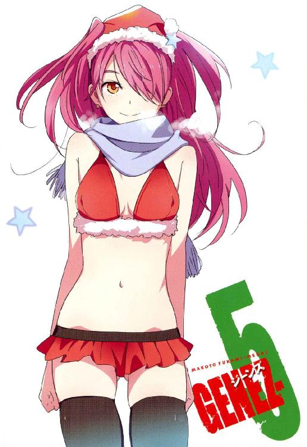

| GENEZ―5 ジーンズ GENEZ ジーンズ (富士見ファンタジア文庫) | |
| 深見 真 & ｍｅｂａｅ | |
| 富士見書房 (2011) | |


本作品の全部または一部を無断で複製、転載、配信、送信したり、ホームページ上に転載することを禁止します。また、本作品の内容を無断で改変、改ざん等を行うことも禁止します。
本作品購入時にご承諾いただいた規約により、有償・無償にかかわらず本作品を第三者に譲渡することはできません。
本作品を示すサムネイルなどのイメージ画像は、再ダウンロード時に予告なく変更される場合があります。
本作品は縦書きでレイアウトされています。
また、ご覧になるリーディングシステムにより、表示の差が認められることがあります。
口絵・本文イラスト mebae
ＣＯＮＴＥＮＴＳ

プロローグ
狂気の父を持った運命の兄妹がいる。
子供のころは気弱ないじめられっ子だったが、父に「邪魔だ」と言われて少年兵キャンプに送られた兄の謙吾。
「少しは見込みがある」という理由で海外で英才教育を受けた妹の涼羽。
涼羽は背が低い。つんとすました表情が似合うあごの細い端整な顔立ち。それでいて頰はマシュマロのように柔らかそうだ。どこの学校のものというわけでもない、白いセーラー服を身につけている。
「久しぶり、お兄ちゃん」
「涼羽......！」
彼女はＩＱ１６０、一四歳でハーバード大学を卒業。史上最年少博士号取得の記録を塗り替えた。伝承と神話学専攻。その知識と聡明さを認められて、若くして世界的なＶＩＰ──ヴェルトハイム公国公女──の家庭教師に。
「お兄ちゃん、大事な話があるんだけど......」
謙吾、ユキナ、七湖の三人は、入院している仲間の様子をみるために病院に向かっていた。
その途中で、涼羽と出くわしたのだ。
普段はヨーロッパのヴェルトハイム公国で暮らしている涼羽が、なぜか日本にやってきていた。兄妹は電話でしょっちゅう「そのうちまた会おう」という話をしていたが、この時期、このタイミングで再会するとは謙吾もまったくの想定外だ。
「涼羽......なんだか、話したいことは山ほどあるんだけど......」謙吾は喜色満面だが、同時に戸惑いも隠せない。「なんだか、逆に言葉が出てこないな。実は、セルジュと彩離が入院中で、お見舞いにいくところなんだ」
「あの二人が......!?」
涼羽は兄と同じくユキナとは幼いころから仲が良くて、すでに彩離やセルジュとも顔見知りになっている。
「じゃあ私もいく。歩きながら話そうよ、お兄ちゃん」
一緒に海神学園敷地内の付属病院に向かうことになった。
「へー、謙吾にこんな妹さんが」
七湖が、涼羽に値踏みするような視線を送りつつ言った。その視線に戸惑って、涼羽は兄の謙吾に「なんなのこの人？」と目でサインを送る。しかし謙吾は何も答えず、静かに微笑んでうなずいただけだ。「大丈夫、俺たちの仲間だ」ということなのだろう。
「えっと、あなたは......」
「布施七湖」と名乗る。そして七湖は涼羽の胸を見つめて、そのバストサイズが自分とほぼ同じ貧しさなのを確認し、ほっと一安心してから言う。「まあ、堅苦しいのは抜きにして。涼羽ちゃんは私のこと『お義姉ちゃん』って呼んでいいよ」
「へ!? お義姉ちゃん？」
びっくりして目を丸くする涼羽。
「なっ！」と眉を吊り上げるユキナ。
「なんでそうなるんだ、まったく！」
驚いたのは謙吾も一緒だ。
「その理由を私から語るのは野暮ってもんでショ！ ね、謙吾！」
そう言って七湖は謙吾の肩をばんばん叩く。
「え、う、うええ!?」
どう返せばいいのかわからなくなって、謙吾は情けない声をあげて慌てふためいた。幼なじみの醜態に呆れかえり、思わず天を仰いでため息をつくユキナ。涼羽もがっくりと肩を落として「お兄ちゃん......かっこ悪い......」とつぶやく。
－幕間１－
病院には、彩離とセルジュが入院中だ。謙吾たちはお見舞いの途中で涼羽と再会したのだ。付属病院の入院棟はプライバシー重視の構造で、広い病室なのにその二人しかベッドを使っていなかった。
「おー！ なんやなんや！」
「えー！ 涼羽ちゃんじゃない！ うひひ」
「......なんですか、彩離さん。その気持ち悪い笑い方」
「ご、ごめん......気持ちが緩んでるとつい」
「うひひ、なんて笑うヤツ漫画以外で初めて見た」
「お、それってあたしが世界で一つだけの花ってことかしら」
「どうしてそうなるんだ、意味がわからん」
いきなり賑やかになる病室の雰囲気に、涼羽は戸惑いつつも「それはさておき......」と真面目な話題を切り出すことに成功した。
「あの事件の際は、みなさん本当にお世話になりました」
事件──ヴェルトハイム公国の秘密をかけ、公女を守った戦いだ。
「公女様は元気？」
セルジュが訊ねた。彼は公女フランシスカのような──ああいうタイプにめっぽう弱い。
「はい！」
と、涼羽はセルジュの邪念にも気づかず、花が咲いたように笑う。
「反対勢力もなりをひそめて、公女様の政務も順調で......」
──ここからが長かった。涼羽は目を輝かせて続ける。「まずは金融関係の規制強化から始まり、マネーロンダリングの温床となっていた国外のダミー会社に捜査のメスを入れ、次々と国内の改革を進めていく公女様の姿はまさに現代のジャンヌ・ダルクのよう......！ あ、いえ、もちろんジャンヌは政治には疎かったので、今のはただのたとえで......。他にも公女様は、観光客の誘致や今までヴェルトハイムでは軽視されていた重工業部門も再生させ......」
「............」
自分の雇い主であるフランシスカ公女を褒めまくる涼羽のテンションに圧倒されて、謙吾たちは思わず顔を見あわせた。
「どんだけ公女様のことを尊敬してんねん......」
と、セルジュが少し呆れたようにささやき声でつぶやく。
「ところで涼羽、大事な話って......」
ずっと公女の手柄話ばかり聞いていても仕方ないので、謙吾が話を本筋に戻した。
「あ！ ご、ごめんなさい......」
涼羽は、顔を真っ赤にして頭を下げる。
「実は今回日本にやってきたのは、海神学園の厳島アイナ高等部学長からの依頼なんです。たぶん、兄さんたちにも関係のあることだと思って」
「こども学長から!?」
意外な依頼主に、謙吾やユキナたちはほぼ同時に驚きの声をあげた。
その後ろから、ぬっと少女の頭が出てくる。
「誰がこども学長ですか」
他でもない、厳島アイナその人だ。
「うわッ!?」
「いたんですか、学長......」
「......ちょっと前から......」
豪奢なフリルつきのドレスがよく似合うアイナは、小学校高学年に間違われることもある涼羽よりも、さらに頭一つ分背が低い。
「......私のことも、褒めてください......」
そんな彼女が、ぽつり、と言った。
「......はい？」
突然の申し出の意味がわからず、セルジュが訊ね返した。
こども学長アイナは、うつむいて顔を赤くしている。
「......涼羽さんが、雇い主であるフランシスカ公女を褒めているのを見て......なんだか納得できなかったんです......一応、謙吾......ユキナ......七湖......彩離......セルジュ......あなたたちは私の部下じゃないですか......」
「ええ、まあ......」
と、曖昧にうなずく謙吾。
「それなのに......上司への尊敬が足りないような気がします......」
ああ──そこまで聞いてようやくこども学長が何を言いたいのか謙吾たちも理解した。ようするに、フランシスカ公女に嫉妬しているのだ。彼女にこんな子供っぽい一面があるとは誰も知らなかったので、傷つけないように、大慌てでフォローを始める。
「ええと、学長は......マリー・アントワネットみたいに愛らしくて......」と謙吾。
「たぶん、卓球の愛ちゃんみたいな天才少女で......」とユキナ。
「冷酷な判断力と、ずるがしこいほどの抜け目のなさがありますよね......！」と七湖。
なんだかうわべだけの褒め言葉が並んでしまって（しかも、褒めているのかどうかわからない微妙な言葉も多かった）、こども学長アイナはうんざりしたような顔になって「......もう、いいです......」とこの話題を終わらせた。
「学長は涼羽さんを迎えに来たんですか？」
セルジュが質問した。
「まあ、そんなところです......」
と、こども学長は咳払いを一つ。
「......ところで依頼の件に入る前に、みなさんから涼羽さんに説明をしてくれませんか？」
「説明......ですか」
謙吾は少し不思議そうな顔をした。
「......ギルガメシュとはなんなのか。ナイチンゲールとはなんなのか......」こども学長は、ここにいる全員をゆっくりと見回しながら言う。「謙吾とユキナの再会について、この学園であなたたちが関わった事件について......」
──なんでそんなことを今さら？ 誰も口には出さないが、こども学長の不自然な命令に微妙な空気が流れた。チーム「ビーバス＆バットヘッド」の五人は、怪訝な視線を交わし合う。こういうときは必ず何か裏があるはず──。
しかし。
「へえ......それは私もすごく興味あります！」
と涼羽が食いついたので、説明しないわけにはいかない雰囲気になった。
「じゃあ......」
仕方なく、謙吾が語りだす。
（......よし......）
高等部学長厳島アイナは、謙吾たちに気づかれないように服の下に隠している集音マイクつきデジタル小型録音装置のスイッチを入れた。これから始まる会話をすべて記録するつもりなのだ──。
＃１ そして二人は戦火に飛び込む
幼なじみが狙われている。狙っているのは私立海神学園高等部のクラスメイトたちだ。クラスメイトたちは銃器で武装。仕方なく大牙謙吾もホルスターから拳銃を抜いた。飛び交う銃弾、炸裂する手榴弾。学長がまさかＧＥＮＥＺまで出してくるとは予想外だった！ 謙吾の幼なじみ──岩清水ユキナを巡る攻防戦の末に、謙吾は胸に三発の弾丸を浴びて倒れる。
１
謙吾が胸に弾丸を受けて倒れる数時間前。
ここは、広い敷地と自由な校風が売りの名門、私立海神学園。その校舎群は、背の高い常緑樹林に囲まれている。常緑樹は落葉樹と違い、一年を通してずっと葉をつける。深い緑色の葉が鬱蒼と茂る林は、この学校に通う生徒たちから「まるで城壁だ」と思われている。葉が落ちることなく枯れることもない、海神の城壁。
丁寧に整備された花壇には季節の花が咲き乱れ、校舎と校舎をつなぐ歩道には石造りの古風な屋根がかかっている。校舎、図書館、食堂など、すべての建物が伝統のある大きな聖堂に見える。そんな学園の敷地を、一人の少女が歩いている。美しい学園に相応しい、気位の高そうな少女だ。
背は普通だが、手脚が長くスタイルがいい。運動神経抜群に見える。
鼻筋が通っていて、全体的に鋭く凛々しい容貌の持ち主。海神学園は全室土足ＯＫなので、ユキナは制服のミニスカートに膝の上まである革のロングブーツを組み合わせていた。凛々しい表情とロングブーツの相性は最高で、その少女の高圧的な魅力を限界まで引き立てている。
少女の名は、岩清水ユキナといった。移動中の電車内で読んでいた司馬遼太郎の『燃えよ剣』ソフトカバー版をカバンに片づける。
（司馬遼太郎はいい......癒される）
ユキナは、今日この学校に転校してきた。前に通っていた学校の寮が閉鎖されることになって困り果てていたら、海神学園のパンフレットが郵便受けに届いていた。学生寮、奨学金制度あり、というのが決め手になり、転校を決意。奨学金試験にも無事合格した。
自宅に戻る、という選択肢は最初からなかった。ユキナの故郷は、大手ネット通販サイトでも「配送不可地域」。ＮＨＫ以外のテレビ局はほとんど映らないし、主な移動手段は牛と馬。岩山を風のように駆け抜ける身体能力がなければ生き抜くことはできなかった。もう、あの田舎には戻りたくない......。
（それにしても）
こんな美しい学校にも不良がいるのか、とユキナは驚いた。
校舎の陰で、三人の男子生徒が一人を囲んでいる。囲まれているのは、未成熟な下級生。もしかしたら、中等部の生徒かもしれない。
いじめている三人は、全員が高そうなアクセサリーを身につけていて、いかにも金持ちのボンボンといった風だ。なるほど、名門には名門ならではの落ちこぼれがいる。勘違いをして、親の財力のおかげでそれが修正されないまま成長してしまったタイプ。
昔からユキナは、こういうことが見逃せないタチだった。
「おい、お前たち」
止めに入る。
「見ていて不愉快だ。止めろ」
「......なんだコイツ？」
不良たちが怪訝そうな視線をユキナに向ける。
「三人で一人を取り囲んで殴る蹴るとは、それでも日本男児か」
「に、日本男児？」不良たちは戸惑う。「なんだそのしゃべり方。昭和からタイムスリップしてきたのか」
幼いころ、ユキナの周囲には時代劇か時代小説しか娯楽がなかった。そのせいか、言葉遣いが時代がかったものになった。ユキナのコンプレックスの一つなのだが、直すのが難しい。
「で」とユキナは鋭く言う。「やめるのか、やめないのか」
「やめねえよ、バカ」
不良たちがユキナをせせら笑う。交渉決裂。ユキナはつかつかと不良たちに近寄っていき、いきなり一番手近な相手の足を「ぱーん！」と払った。足払いを食らった不良は、何がなんだか理解できないまま転倒。目を白黒させる。
「な、なにやってんだ！」
不良の一人が、ユキナの肩か襟首あたりをつかもうと手を伸ばしてきた。ユキナはその手をつかみ返して、ひねりあげて、軽く関節を極めながら投げる。
「この」
残った不良が、ユキナの頰を狙って平手打ちを放った。ユキナは冷静に右前腕でそれを受け止めて、逆に不良の顔に左で平手打ちを食らわせた。女子の平手打ちとは思えない威力に、食らった不良は呆然とした。
ユキナの家は、古流武術だ。力を出しすぎれば男子にも怪我をさせてしまう。昔から、ユキナの喧嘩の強さは折り紙つきで、ついたあだ名が「漢女姉さん」。ユキナのコンプレックスその２。
その時だった。
「どんな事情かは知らないが」
ユキナと不良の間に、一人の男子が割って入ってきた。
「やりすぎはよくない」
「悪いのは、こいつらだ」とユキナ。「こいつらが先に理不尽な暴力をそこの下級生にふるっていたので、私が止めに......」
「............」
ユキナと、止めにきた男子の目が合う。
なんとなく、見つめ合ってしまう。
「お前......謙吾？」
「え......ユキナ？」
知り合いだった。幼なじみだ。
２
もう、何年前だろうか──。ユキナが、親の都合で田舎を離れていた時期、近所に小柄で気弱な同年代の男の子がいた。名前は大牙謙吾。謙吾は打たれ弱く、何か辛いことがあるとすぐに泣き出す子供だった。暴力を受けることも、暴力を振るうことも苦手だった。謙吾の弱さは、彼の妹である大牙涼羽にとっても悩みの種だったようだ。
謙吾はよくいじめられていた。複雑な家庭環境があった。近所の大人たちは「あそこは愛人の家だから」と陰口を叩き、それが子供たちにも伝わった。子供たちには愛人の意味などわかっていなかったが、親が馬鹿にしているのなら自分たちも馬鹿にしていいと判断した。謙吾と涼羽は、小学校で「お前らは愛人の子供！」と罵声を浴びせられた。
ユキナは、そんな光景を見ると放っておけなかった。子供とはいえ、すでに武術をやっていたので、謙吾を助けることができた。それが切っ掛けで、大牙兄妹とはすぐに仲良くなった。
早熟なユキナは、謙吾を弟のように思っていた。
しかし、大牙兄妹は突然ユキナの前から姿を消した。
三人の不良は逃げ出した。ユキナが助けた下級生は、深々と頭を下げてから校舎に入っていった。
久しぶりに再会した謙吾は、ずいぶんたくましくなっていた。
やや瘦せ気味で目つきが鋭い。まるで鷹のような横顔だ。少し長めの黒髪には、整髪料の類いは一切使われておらず無造作な印象を与える。肩幅が広く、腰の位置が高い。軍服風のデザインが特徴的な海神学園の制服がよく似合っている。
「謙吾もこの学校に通っていたのか！」
「まさか......本当にユキナだ！」
ユキナと謙吾は驚き、目を輝かせる。互いに抱きつきたい衝動に駆られたが、他の生徒の目もあるし、もう二人は子供ではない。スキンシップは遠慮する。
「謙吾も、お前の妹の涼羽も、例の事件の後国外に出たと聞いていた」ユキナは言う。「日本に戻ってきていたのなら、何か連絡をくれればよかったのに......！」
「それは......」
急に、謙吾の表情が曇った。
「あ......私、何かまずいことを言ったかな......」
「ん、まあ......」
謙吾の煮え切らない態度。
ユキナは嬉しい。新しい学校に転校してきた直後に幼なじみと再会して涙が出そうだ。それなのに、謙吾が浮かない顔なのが不思議でならない。
ユキナは訊ねる。「クラスは？」
謙吾が答える。「特進クラス」
特進──。
謎の多いクラスだと聞いている。
有名大学合格を目指して一般のクラスより密度の濃い授業をしているという話だが、それにしては特進クラスの成績はいまいちだ。全国模試の上位で、海神学園特進クラス生徒の名前を見かけることはあまりない。
特進クラスの授業の一部は、一般の生徒の目に触れない場所で行われる。特進クラス専用の教室と校庭があって、その周囲には高い塀が巡らされているという厳重ぶりだ。
──それはさておき。
「謙吾、次はどこで会える？ 積もる話が......」
「俺にはもう近寄るな」
「......は？」
ユキナの目が点になった。
「昔は世話になった。でも、もう......」
謙吾は眉間に深いしわを刻んでいた。いかにも苦渋の決断をしている最中のような表情だ。こんな顔、昔はしたことがなかった。
謙吾は苦い顔のまま、ユキナに背中を向けて、足早に立ち去って行った。
（そんな......）
子供のころ、ユキナは何度も謙吾を助けた。そのせいで、ユキナには「漢女姉さん」などというあだ名がついたほどだ。ただ、いまさら謙吾に感謝しろ、あのころ助けてやった礼を言え、なんて恩着せがましく迫る気はない。昔のように語り合いたいだけだ。
──そうだ。
（私たちは、幼なじみで、仲良しだったはずなんだ）
考えているうちに、ユキナはだんだん腹が立ってきた。
（追いかけて、つかまえて......）
ユキナは駆けだした。謙吾のあとを追う。
（なんであんな冷たい態度をとったのか、問い質す！）
謙吾が歩き去った方角に向かっていくと、特進クラス専用スペースの秘密を守る高い塀にぶつかった。塀の高さは九メートル。分厚い鉄筋コンクリート製。ここだけ、まるで刑務所のようだ。
謙吾はすでに壁の向こう側に消えていた。謙吾と話し合いたいのもあるが、特進クラスが何をやっている連中なのかも気になってくる。このセキュリティの厳しさは普通ではない。壁の中に入るための出入り口を探す。合金製のドアが見つかるが、指紋認証式の鍵がかかっている。
「これは無理だな......」
と、ぼやきつつ、ユキナは何気なく指紋認証用のタッチパネルに人差し指をのせた。すると予想外のことが。指紋認証式のロックは解除されて、ドアが横にスライドして開いた。一般クラスであるユキナのＩＤで特進クラスのドアが開くわけはないのだが、とにかく開いた。機械の故障か、それともただの幸運か。どちらにしても利用しない手はない。ユキナはとうとう壁の内側へ。
（これは......）
海神学園の敷地は広大だ。しかしそれにしても、特進クラス専用スペースの規模は尋常ではなかった。カーレースができそうな広いグラウンドに、野球場がそのまま入りそうな体育館がいくつも並び、飛行機でも格納できそうなサイズの倉庫まである。
「どういう場所なんだ......？」
ユキナはきょろきょろしながら歩く。
謙吾を見つけた。巨大な体育館の前で、二人の人間と話している。ここにいるということは、どちらも特進クラスのクラスメイトだろう。一人は女子生徒、もう一人は外国人の男子生徒だ。
ユキナは、近くにあった格納庫の角を使って身を隠した。なんとなく、謙吾を遠くから監視したかった。さっきの謙吾は、明らかに何かを隠していた。その正体を突きとめるには正攻法で仕掛けてもだめだと判断したのだ。
外国人の男子生徒は、謙吾と同じ海神学園の制服姿。白人の青年で、豊かなブロンド、彫りの深い顔立ち。青白い肌に真っ青な瞳という貴族的な容貌の持ち主であり、人を小馬鹿にするような冷笑を常に口元に浮かべている。
女子生徒は、茶髪でショートカットの少女だ。長身で、眉がやや太めの活発そうな顔立ち。やけに八重歯が大きい。理由はわからないが、機能的なデザインのレオタードを身につけている。彼女の脚は引き締まっていて、うっすらと筋肉のラインが見える。
「彩離は、これからＧＥＮＥＺを着用しての訓練か」と、謙吾が女子生徒に向かって言った。女子の名前はアヤハナというらしい。変わった名前だ。
「そ。だからこんなセクシーな恰好なわけ。どうよ？ せくしー？」
「馬子にも衣装ってところやな」
外国人の青年が言った。意外なことに関西弁だ。
「うるさいんだよ、セルジュ！」
女子生徒──彩離が頰をふくらませて怒る。
関西弁の外国人青年が、セルジュ。
謙吾、彩離、セルジュ。
──かなり息が合った雰囲気だが、どんな関係なのだろう？ ところでうっかりスルーしそうになっていたが、ＧＥＮＥＺとは一体なんだ？ ジーパンのことか？ ジーパンを着用しての訓練？ 意味がわからないことが多すぎる。
「俺とセルジュはこれから射撃訓練か」
そう言って、謙吾は制服のジャケットの下から拳銃を取り出した。ユキナは最初、モデルガンかと思ったが、遠目にも質感が違うことがわかる。セルジュも拳銃を抜く。それが当たり前のことであるかのように。
ユキナは慌てて頭を引っ込めた。
──今のは!?
拳銃、射撃訓練、そしてすっかり様子が変わってしまった幼なじみの大牙謙吾。
──もしかして、何らかの犯罪に関わっている？
「おい、お前」
突然、声をかけられた。ユキナは驚いて声の方に顔を向ける。そこにいたのは、大人の警備員だ。銃を──。銃を持っている。ニュースで見たことがある。アメリカ軍やその同盟国の軍隊で使われているＭ４アサルトライフルだ。学校の警備員というよりは、自衛隊や在日米軍を警備している兵士に見えた。そんな警備員──いや、警備兵が、銃を構えたままユキナに近寄ってくる。
「こんなところで何をやってる、学生証を」
「はい──」
ユキナは、平静を装いつつ警備兵に学生証を手渡した。それを見た警備兵の目つきが険しくなる。
「これは、一般クラスの──」
嫌な予感がしたが、勝手に体が動いた。ユキナは古流武術独特のすり足で警備兵の懐に入り込み、右の肘打ちを彼のみぞおちに叩きこむ。急所を打ち抜かれて、警備兵は一瞬で意識を失った。しかし不運なことに、意識を失う瞬間警備兵の指先が痙攣し、Ｍ４ライフルの引き金が絞られた。暴発し、弾丸が地面をえぐる。
ユキナは生まれて初めて本物の銃声を聞いた。ゲームや映画の銃声など偽物だった。銃声を録音する機材には保護カバーがかけられている。生の銃声は、鼓膜を一気に引き裂きそうなほど凄まじい。間近に雷が落ちたようだ。
その銃声を聞きつけて、もう一人、警備兵が駆けつけてきた。ユキナは、その警備兵に銃口を向けられる。今度は、不意打ちはできない。一〇メートル近い距離があるからだ。まずい、とユキナは低くうめく。
──撃たれる!?
その時横合いから、疾風のような人影が警備員を殴りつけた。
謙吾だ。
彼も銃声を聞いてやってきたのだ。
謙吾は警備兵の鼻先を殴り、ついで素早く顎に掌底を打ちこんだ。二発の強烈な打撃で、警備兵の膝が「かくん」と折れた。
今日は驚くことばかりだが、謙吾の強さにユキナは思わず「あっ！」と声をあげてしまった。ユキナが知っている謙吾は、本当にひ弱ないじめられっこだったのだ。しかし、今目の前にいる謙吾はまるで別人だ。無駄のない動きは、プロの兵士そのものだった。
「なんでついてきたんだ!? ユキナ！」
警備員を倒した謙吾は、つかつかとユキナに歩み寄る。
「なんでって......」
子供の頃の謙吾は、料理が得意で、読書好きで、笑顔がとびきり優しかった。近くにいる人間の心を温かくする力を持っていた。
「それは、もちろん......」
恥ずかしくなって、ユキナの顔が自然に赤くなった。
ユキナはドキドキしている。でも、謙吾がそれに気づいた様子はない。言わなきゃわからないのだ。この男は。
「お前に......お前に会いたかったからだ」
「............」
伝わった。謙吾の顔も少し赤くなった。謙吾は口を「へ」の字にきつく結んで、無理やり難しい顔をした。そして「くっそ、どうするかな......」とつぶやく。
「謙吾、なにやってん！ 警備の人殴り倒してもうてどないすねん！」
不意に関西弁。セルジュとアヤハナだ。
「逃げるぞ、ユキナ」
「......えっ！」
謙吾は、ユキナを両手で抱きあげた。確かに、さっき銃声を聞いて以降、ショックでユキナの体は思うように動かなくなっていたが、いくらなんでもお姫様抱っこは恥ずかしすぎる。「うああ......！」とユキナはすっとんきょうな悲鳴をあげた。
（は、恥ずかしくて死んじゃう......）
謙吾はユキナを抱いて走った。女の子を一人抱えているのに、陸上選手のように走るのが速かった。あっという間に塀の出入り口にたどり着いた謙吾は、ユキナをおろして指紋認証ロックのパネルに右手の人差し指を押しあてた。ドアが開く。謙吾がもう一度ユキナを抱き上げようとしたので、ユキナは「も、もう自分で走れるから、だ、大丈夫だ！」と、慌てて言った。
「そうか」謙吾はうなずく。
再び、二人は走り出す。他に思いつかないので、ユキナはとにかく謙吾についていく。
走りながら、ユキナは訊ねる。
「謙吾、この学校はなんなんだ......!?」
「グリークスだ」
謙吾は即答した。
「......え？」
「俺たちは、グリークスだ。最初に言っておくが、グリークスは非合法な組織じゃない。日本政府は俺たちが国内に武器を持ち込むことも、戦闘を行うことも『黙認』している。グリークスってのは、民間軍事会社なんだ」
「民間軍事会社......」
民間軍事会社は、傭兵部隊の発展形である。
プライベート・ミリタリー・カンパニー。通称ＰＭＣ。
「ニュースで見たことがある。報酬を受け取って、軍隊のかわりをする」
「そう、その会社」
国家や何らかの公的な組織──時には非合法な組織──が、ＰＭＣと契約を結ぶ。その契約内容にしたがって、ＰＭＣの戦闘部隊が現地に赴き、依頼主のかわりに戦う。その戦いは、ただ単純に会社の利益のために──。
かつての傭兵部隊とＰＭＣの違いは、その規模の大きさと高度なシステム化だ。
たとえば、アフリカに発展途上国があるとする。その国では、満足に戦闘を指揮できる指揮官も、兵士を一人前にする訓練教官もいない。その国に人材を派遣するのもＰＭＣの仕事の一部となっている。
他にも、旧式の装備しか持っていない国に最先端の兵器をレンタルする業務、大統領や大臣クラスの要人警護など、その業務内容は多岐にわたる。大きなＰＭＣになると、小国を滅ぼすくらいなら簡単にできるという。
「この学校は、グリークスの『隠れみの』なんだ。学校を装っているが、それはここが少年兵を訓練するための施設だからだ。一般の生徒には隠してあるが、俺たち特進クラスの生徒は全員がグリークスの学生アルバイト。普段は訓練してるが、依頼があれば世界のどこででも戦う」
「学生なのに、戦うのか!?」
「逆だ。学生だから都合がいいんだ。俺たちみたいな子供じゃなきゃ『ＧＥＮＥＺ』で戦うことはできない」
「ＧＥＮＥＺとはなんだ！」
「あとで説明する！」
一人の中年男が、海神学園高等部校舎を歩いている。
中年男はくたびれたスーツ姿で、ネクタイはだらしなく緩み、顎に無精ひげを生やしている。男の名は、大迫伝次郎。謙吾の担任であり、歴史の教師。しかしその正体は、民間軍事会社グリークスに所属する凄腕の傭兵の一人だ。
中年男が目指していたのは、高等部第一校舎一階、高等部学長室だった。
「失礼します」
大迫は、ノックしてから中に入る。
学長の椅子に、およそ「学長」のイメージからかけ離れた人物が座っていた。
分厚い絨毯に古めかしい調度品、マイセンの紅茶セットにマホガニー材の本棚──中世ヨーロッパ貴族の書斎のような豪華な部屋の中央で、若い女性がうつらうつらと眠りかけている。女性、というより少女、あるいは子供と表現した方が正確だった。ロングの銀髪はほんのりくせ毛気味で、全体的にふわふわしている。
この少女こそが謙吾たちの指揮官・厳島アイナだった。
大迫は現場監督にあたる。
「一般クラスの女子が特進クラスの訓練区域に入っちゃいましてね」
大迫は軽い口調で言った。
「......それは......かわいそうに......」
アイナは見た目だけでなく声もぼんやりとしている。
ねぼけているのかもしれない。
「かわいそうですねえ」と大迫。
「......かわいそうですが......通常通りの対応を......」
アイナは指示を出した。
大迫はうなずき、
「もし逃がしそうなら、射殺。できることなら生け捕りにして、黒幕がいないか拷問。その後、手術と薬品で記憶を消去してから別の学校に送る。記憶の消去が上手くいかなかったら、そのまま専用の病院で一生監禁」
「......そういうことです......」
３
特進クラスの敷地を出てから、謙吾が「どうしても行っておきたい場所がある」と言うので、仕方なくユキナはついていくことにした。私立海神学園の、一般クラス用校舎に入っていく。美しいロマネスク様式建築の校舎。しかしその地下二階には、一般の生徒が魔界と恐れる空間が存在していた。
謙吾とユキナは階段を下りていく。地下一階は「まともな部活、同好会」のフロア、そして地下二階には「まともではない部活、同好会」の部屋が集められている。まるで、隔離するかのように──。
地下二階に到達した。長い廊下の両側に、多数の部室が並んでいる。廊下はなぜか薄暗く、空気も重い。部室のドアの前には、看板が立ててあるか新入部員募集のポスターがはられている。『13日の金曜日同好会』に『世界の残酷な処刑研究会』──驚いたことに『麻薬密輸部』まであった。何をやっている部活なのか？ もしそのまんまの部活だったらただの犯罪だろう。地上の荘厳な校舎からは想像もできない、混沌としたアンダーグラウンドだ。
「ここだ」と、ある部室のドアを指差して謙吾が言った。
ユキナがそのドアを見ると、『パソコン部』という立て札がかけてあった。
パソコン部のドアには、暗証番号と指紋認証のロックが取り付けられていた。部活にしてはセキュリティが厳重すぎる。しかもパソコン部のドアは合金で補強されていて、そう簡単には蹴破れないようになっていた。謙吾が暗証番号を打ち込み、パネルに人差し指を押し当てて指紋認証もパス。ユキナとともに、部屋の中に足を踏み入れる。
三人の男女が、そこにいた。
恐ろしく太った眼鏡の男。赤毛の女の子。海神学園高等部の制服を着ているものの、とても高校生とは思えないほど老けた男。
「よう、ファンタスティック・スリー」
謙吾がそう呼ぶと、三人が一斉に振り返ってきた。
「そう呼んでくれるのは謙吾だけだよー」
ふごふごと、くぐもった声で恐ろしく太った男が言った。太った男はちょうどドーナッツを食べているところだった。
赤毛の女の子が、ユキナを見てきらきらと目を輝かせる。「謙吾さん。隣にいる素敵な美人さんはどなたですか......!? 紹介してくださいよ！」
「......っ！」
いきなり美人と言われて、ユキナは戸惑う。
女の子の髪は短いが、前髪だけが長くて目が外から見えにくい。妙な髪型だ。
「そんな場合じゃないんだよ。手早くいく。隣にいるのは、俺の幼なじみ岩清水ユキナ」と、謙吾。「ユキナ、この三人は俺の友達だ。太った男はヒデヨシ。女の子は鞠歌。老けた男がコバさん。全員、攻殻機動隊の公安九課に入れるくらいプログラムやクラッキングに強い」
「日本にはそんな機動隊がいるのか？」
と、大真面目な顔でユキナが言った。
「......そっか、攻殻知らないのか」
「うん。時代劇以外はよくわからない」
「『老けた男』の一言ですませるなよ、もう」老けた男──コバさんが不満を口にした。「あ、ところでお前に頼まれてたギャルゲーの『いけないＦ先生』初回限定版。なんとか手に入りそう......」
「わ──っ！」とわめいて、謙吾がコバさんの言葉をさえぎった。
「ギャルゲー......？ なんだそれ？」
ユキナは怪訝な目つきで謙吾を見る。
「なんでもない！ そんなことより、俺たちは今トラブってるんだ！」謙吾は強引に本題を切りだした。「そろそろ、俺の学生証じゃ外に出られなくなってる。偽造の学生証を二枚頼む。あと、閃光手榴弾と煙幕弾を三発ずつ。防弾機能つきのタクティカルベストも二着」
「お前はいつもトラブルだ」
ヒデヨシがぼやいた。
コバさんが、鍵つきのデスクを開けて中から謙吾が注文した品物を取り出した。デスクの中には、他にも銃器や怪しげな薬品など非合法の臭いがぷんぷんしている。品物を謙吾に渡す際に、コバさんは謙吾に「ルールはわかってるな？」と念を押した。
「ああ、拷問されてもファンタスティック・スリーの名前は吐かない」
「それでよし」
謙吾は学生証をポケットに押し込み、タクティカルベストを身につけていく。タクティカルベストとは、銃や手榴弾などを装備するためのベストだ。ベルト、ホルスター、多目的ポーチが一体になっている。謙吾はタクティカルベストに閃光手榴弾と煙幕弾をさしこんでいく。ジャケットの下に隠し持っている拳銃と予備マガジンも移す。
「ユキナも、このベストを。身を守れる」
「あ、ああ......」
普通のタクティカルベストはただ装備を持ち歩くためのものだが、二人が身につけたものには前後に防弾プレートを入れることができる。薄手のものなのでライフル弾は防げないが、一般的な拳銃用弾薬はほぼすべて弾き返すことができる。
「まずいことになっても、岩清水ユキナさんは私がなんとかしますよ！」
と、鞠歌が元気よく言った。
「そりゃあ心強いけど、どうして？」と謙吾。
「だって、ユキナさんみたいにＳＭの女王様が似合いそうな人は貴重ですからね！」
「ああ、そうか。鞠歌はドＭだったな」
「はい！」
ＳＭの女王様と呼ばれて、怒ったユキナが鞠歌の背中に蹴りを入れた。「あふん」と間抜けな声をあげてひっくり返るが、凛々しい美少女に足蹴にされて鞠歌は幸せそうな顔だ。
「この無礼者！」
「ほら、ユキナ。こんなことしてる場合じゃないって......！」謙吾は、まだ怒っているユキナの手を引っ張って部室を出る。「それじゃ今日はこれで！ ヒデヨシ、鞠歌、コバさんいつもありがと。またあとで連絡する......！」
地下二階から、屋外へ。
「駐車場に行って、防弾仕様の車を盗もう。間に合えばいいんだが......」
「謙吾。この学校は異常だぞ！」
「知ってる！ いつだって命がけだ！」
謙吾とユキナは職員用駐車場に向かう。駐車場は、雑木林に囲まれていた。木々には、大きな葉が緑色の絨毯のようにしげっている。二人は雑木林に入って、身を隠しつつ少しずつ進んでいく。そして銃声。謙吾の間近で、コルク状の樹皮が飛び散る。追手の威嚇射撃だった。謙吾とユキナは木の陰に身を隠す。
幼なじみが狙われている。狙っているのは私立海神学園高等部のクラスメイトたち。特進クラスは全員何らかの形で「実戦」に関わったことがあるプロばかりだ。最も経験豊富で作戦成功率が高いのは謙吾だが、油断はできない。
クラスメイトたちは銃器で武装。仕方なく大牙謙吾もホルスターから拳銃を抜いた。ベルギーのＦＮ社が開発した５・７拳銃。特殊弾薬を使用する大容量弾倉の半自動拳銃。スライドを引いて薬室に初弾を装塡する。
「どんな事情があるのか知らへんけどな！」遠くから謙吾たちに大声で語りかけてくるものがいた。関西弁の外国人、セルジュだ。「これ以上騒ぎが大きくなる前に武装を解除して投降せえ！ お前はグリークスのエースや！ 話し合いでなんとかなるかもしれへん！」
「俺はなんとかなるだろうさ！」謙吾が怒鳴るように答えた。「だが、無関係な女の子が巻き込まれた。この女の子は、俺の幼なじみだ。俺が守らなきゃいけない！」
「......っ！ 謙吾......」
謙吾の言葉に、ユキナの胸が熱くなる。
この雑木林に配置されているクラスメイトは、セルジュを含めて七、八人といったところか。そんな彼らが、一斉に発砲してきた。銃声が鳴り響き、大量の弾丸が飛翔したが、着弾地点はすべて微妙にずれていた。彼らには、当てる気がなかったのだ。謙吾が「跳弾にさえ気を付けていれば平気そうだな。こちらを生け捕りにしたいんだ」と独り言のようにつぶやく。
クラスメイトたちの武器はすべて拳銃だった。もし本気で狙われても、二人が身につけた防弾プレートでとりあえず胸部と背中は守ることができそうだ。
謙吾は撃ち返した。もちろん、こちらも当てる気はなかった。的確な連射で相手を牽制し、その隙を突いて閃光手榴弾を投げたのだ。閃光手榴弾はその名前通り強い閃光を発し、大音量で相手の聴力を奪う。屋外なので効果は薄まっているが、相手を驚かせるには十分な威力を有している。
閃光手榴弾でクラスメイトたちが怯んだところに、謙吾は煙幕弾を投じた。凄まじい勢いで噴き出した白煙に紛れて、謙吾はユキナの手を引いて突っ走る。
ところが、駐車場まであと少しの地点で謙吾は立ち止まった。その背中に、ユキナの顔がぶつかる。
「なぜ立ち止まった！ 謙吾！」
「......『上』を押さえられた」
悔しそうに謙吾がうめく。
「上......？」
ユキナが見上げると、にわかに信じられない光景が視界を占拠した。思わず息をのみこむ。
頭上に、天使のようなシルエットが浮かんでいた。
メタリックな全身鎧を着込み、背中には猛禽類のような翼を生やし、足先には鋭い爪が伸びている。よく見れば鎧は無骨な装甲の集合体であり、背中の翼はジェットパックだ。異星人の宇宙服か、未来人の戦闘服か──。
「学長がまさかＧＥＮＥＺまで出してくるとはな......！」
「これが......ＧＥＮＥＺ？」
ユキナは呆然とつぶやいた。

謙吾はうなずき、「獣系遺伝子制御強化外骨格......！ 長く難しい名前なんで、俺たちグリークスの傭兵は『ＧＥＮＥＺ』と呼んでる。見た目は華奢だが、理論上はＲＰＧの直撃にも耐える、新世代兵士の鎧だ」
「謙吾、ここまでだ！」
アヤハナ、という女の子の声だ。
「お前に迷惑はかけない！ いかせてくれ！」
「いくら謙吾の頼みでも、そんな......」
その時だった。
Ｍ４ライフルの銃声が轟く。
謙吾の胸に、三発の着弾。
威力の高いライフル弾は、タクティカルベストに仕込まれた防弾プレートを易々と貫通した。血飛沫が弾けて、一瞬で謙吾の口からも血が溢れる。
「！」
ユキナ、アヤハナ、セルジュ──その場にいる全員が驚愕のあまり言葉を失った。最初に次の行動に移ることができたのは、セルジュだ。「なんや、誰が撃った！」と、周囲を見回す。一人の警備兵が、ライフルを構えたまま固まっていた。その銃口からは発射炎の名残が立ちのぼり、その警備兵の顔には殴られた痕があった。
「貴様！」
セルジュは謙吾を撃った警備兵の襟首をつかんだ。片手で持ち上げる。セルジュは見かけよりもずっと怪力だった。
「す、すみません！」と警備兵。「さっき彼に殴られていたので、ついかっとなって......」
「ボケが！」セルジュが警備兵をぶん殴る。
「謙吾！」ユキナは謙吾に駆け寄った。
アヤハナも近くに着地してくる。
「こっ、かはっ」と、謙吾は血を吐いた。ユキナやアヤハナが声をかけても無反応だった。ライフル弾は防弾プレートを貫通していて、すべて急所だ。ここまでだった。謙吾は真っ逆さまに死の闇に落ちていく──。
「謙吾」
ユキナの双眸から滴がこぼれる。
ユキナは血まみれになった謙吾に顔を近づけていく。彼女が何をしようとしているのか、周囲の人間には誰も理解できない。
「お前は、私が死なせない」
そう言って、ユキナは謙吾にキスをした。
「......っ！」
謙吾の血に濡れた唇と、ユキナの柔らかい唇が触れ合う。体の一部を交換するかのように、キス。次の瞬間、奇跡が起きる。
死にかけていた謙吾の目が、急激に生気を取り戻した。ユキナは彼からゆっくりと唇を離す。出血が止まり、謙吾は完全に意識を取り戻す。
「............」
謙吾は上体を起こした。
口の中に溜まっていた血を吐き、まじまじとユキナを見詰める。
「どういうことだ......？」
「本当にすまない、謙吾」
ユキナは涙を拭きながら微笑した。
「私は普通じゃないんだ」
４
高等部学長室。
学長のアイナと教師の大迫は、学長室に設置されたモニタで、ことの一部始終を見届けていた。駐車場の近くには多数の防犯カメラがあり、その映像だ。謙吾が生き返ったのを見て、大迫は心底安心したように深呼吸をした。
「謙吾が死んだかと思って肝が冷えましたよ......」
「──計算違いでした」アイナは言う。淡々とした口調だ。「......大牙謙吾は用心深いから、すぐにタクティカルベストを入手、着用するという手順をふむのはわかっていました......。だから、彼を追跡する特進クラスの生徒たちには拳銃しか持たせなかった......安全には気を配ったつもりなのに、頭に血が上った警備のせいで危ないところでした......」
「ありゃ、最初から学長の仕込みだったんですか？」
「......予定では、狙撃銃で謙吾の足を撃つことに」
「ああー、ひどいなあ学長。彼女がナイチンゲールだってことまで知っていたんですね。全部てのひらの上じゃないですか」
「......岩清水ユキナが前に通っていた学校の学生寮を閉鎖し、彼女にこの海神学園のパンフレットを送りました......。ちなみに、彼女の奨学金試験の成績は点数が足りていませんでしたが、少しおまけを......」アイナはぼんやりとした顔で紅茶のカップを傾ける。「......ナイチンゲールがその力を発揮するには、実に多くの条件を整えなければいけない......今回は、これがベストの方法だった......それだけです......」
「人が悪いなあ、もう」
「......とにかく、これで私たちはナイチンゲールの力を借りて戦う『ギルガメシュ』を得ることができました。これは、大きな前進です......」
──二日後、海神学園付属のラボで検査を受けた謙吾とユキナは、高等部学長室に呼び出された。二人が学長室に入ると、アイナと大迫が待ち受けていた。ユキナは裁判の被告になった気分だ。
「......初めまして......」アイナが、ユキナに向かって挨拶をした。「......私が高等部学長の厳島アイナです。グリークスの作戦指揮官でもあります。隣にいるのは教師の大迫伝次郎。グリークスの現場指揮官です......」
「ど、どうも......」
中世ヨーロッパ貴族の書斎のような豪華な部屋の中央にいるのは、ロングの銀髪が特徴的なふわふわとした少女だ。こんな少女が学生傭兵たちを仕切り、ユキナを捕らえようとしたとは思えない。
「岩清水ユキナさんにはこれから特進クラスに移ってもらいますわ」と大迫。なんとなくのんきな口調だ。「まあ、このまま普通の生活に戻ってもらうってわけにはいかない。グリークスの秘密を知った以上は、グリークスになってもらうしかない」
「それは......わかります」
「これから、訓練を受けてもらう。実働部隊の一員、ナイチンゲールとして作戦に参加してもらうこともあるかも」
大迫の口調が少しだけ真剣なものになった。それを聞いて、謙吾は眉間にしわを寄せた。グリークスが抱える任務の過酷さを知っているからだ。
「......ユキナさんが古流武術をやっていて、身体能力も素人離れしているのはもう調査済みです......」とアイナ。「......特進クラスでも、問題なくやっていけるでしょう......」
「すべて調査済み......？」
謙吾の目つきが険しくなった。最初から最後まで、すべて仕組まれていたことに気づいたのだ。
「その......いいですか？」
ユキナが手を挙げた。
「ナイチンゲールとは一体なんですか？」
「......誰が、いつ作り出したのかはわからない」大迫が答える。「実在がはっきりと確認されたのはベトナム戦争の頃。ナイチンゲールと呼ばれる不思議な少女たち。その少女たちは、どんなに傷ついても回復する体を持っていた。つまり、不死身だった。それだけじゃない、この前ユキナさんが謙吾にやったように、制限時間つきで他人を不死身にすることもできる。多くの研究機関が少女たちの特異体質を研究したが、能力を解明することはできなかった......」
「......そして、ナイチンゲールの力で制限時間つきの不死身を得た戦士は、ギルガメシュと呼ばれる......」アイナが、大迫の説明を引き継いだ。「......ところがナイチンゲールは、誰でもギルガメシュにできるというわけではありません......理由はわからないが、気持ちが通じ合っていないと効果が出ない......」
「気持ちが......」と謙吾。
「通じ合う......？」とユキナ。
二人は、顔を見合わせる。
視線がぶつかる。戸惑いが溢れる。
そして、慌てて顔をそらす。
「ユキナさんは、自分の力のことは知っていたんだね？」
と大迫が訊ねた。
「はい......」ユキナはうなずく。「私は、怪我をしてもすぐ治りました。一度義理の姉が大怪我をした時に、他人を助けることができるのにも気づきました。でも、なんでそんなことができるのかは全然わからなかった......ナイチンゲールという言葉も、今初めて聞きました」
「......我々は民間軍事会社です。我々を動かすのは、契約です......大牙謙吾が、岩清水ユキナと契約を結んでくれればすべて丸く収まる......」
アイナが言った。
「契約......ですか？」と謙吾。
「単純だ。『大牙謙吾は、ナイチンゲールである岩清水ユキナを全力で守る』」
＃１「そして二人は戦火に飛び込む」 了
＃２ ガール・トラブル
「......我々は民間軍事会社です。我々を動かすのは、契約です......大牙謙吾が、岩清水ユキナと契約を結んでくれればすべて丸く収まる......」
「契約......ですか？」
「単純だ。『大牙謙吾は、ナイチンゲールである岩清水ユキナを全力で守る』」
高等部学長室で契約を結んだ謙吾とユキナ。
そしてユキナは学生寮に入って、いよいよ私立海神学園での生活がスタートした。
一見普通の進学校。しかしその実体は、超大手ハイテク民間軍事会社「グリークス」の下部組織だった。素質のある若者に戦い方を教えて、部隊を編制し、世界中に派遣しているという。
１
翌日早朝。謙吾とユキナは学生寮の前で待ち合わせて、一緒に教室に向かうことにした。
「海神はプロを育成するための訓練学校だ。でも──」
歩きながら、謙吾が説明してくれる。
「学校としての体裁を整えるために、普通の生徒もたくさん通っている。だから、若い傭兵たちは特進クラスに集められて、半ば隔離されているわけだ」
「ふうん......」
何度聞いてもなかなか信じられない、と岩清水ユキナは小首を傾げた。
彼女の長い脚を包んだロングブーツが、勇ましい足音を鳴らしている。
多少変わった生い立ちを背負っているものの、ごく普通の女子高生ライフを送っていたユキナ。海神学園で幼なじみの大牙謙吾と再会。高等部学長厳島アイナの陰謀で、特進クラスに入ることに──。
謙吾とユキナは、海神学園高等部第一校舎三階、特進クラスの教室にたどり着いた。一般の生徒から「隔離教室」と揶揄されるその空間は、ぱっと見普通のクラスとなんら変わりない。男子二四名、女子二〇名。休み時間には雑談や笑いが飛び交い、放課後には部活動に励んだり駅前に遊びにいったりするどこにでもいそうな少年少女たち。しかしその正体は、ＰＭＣグリークスのアルバイトか社員だ。四四名の生徒たちは全員密かに軍事訓練を受けていて、そのうちの数名は謙吾たちのように何度か実戦を経験している。
朝のホームルーム前、ユキナたちより先に堤彩離とセルジュ・ドラグレスクが教室にいて、雑談を交わしていた。
ボーイッシュな体育会系元気少女のアヤハナ。
なぜか関西弁の美形外国人セルジュ。
この二人は、謙吾のチームメイト。どちらも腕利きの学生傭兵だと聞いている。
謙吾の席は教室の中央、やや窓際よりの位置。
セルジュは謙吾の右隣の席、アヤハナは謙吾のすぐ後ろの席だ。
ユキナの席だけが少し離れている。
「なんで、私だけ後ろの席なんだ」
ぷう、と頰を膨らませて不機嫌になるユキナ。
「急な転校だったからな。教室の一番後ろのスペースしか入る場所がなかったんだ」
と、謙吾がなだめるように言う。
「なるほど......納得した」
チャイムが鳴って、だらしない中年の教師が入ってきた。このクラスの担任であり、歴史の授業を担当する大迫伝次郎だ。
ユキナの自己紹介もそこそこに、ホームルームからそのまま一時間目の授業に入る。
ユキナが体験する特進クラス最初の授業は、大迫の歴史だった。
「では、教科書五七ページを開いて」
教科書の名前はそのものズバリ「軍事史Ｉ」。
特進クラスでは、歴史の授業も一味違う。とにかく戦争に関する内容が延々と続く。
二時間目。
「よし、じゃあ全員射撃場に移動」
体育、射撃練習。
高い塀に囲まれた、特進クラス専用の広大な訓練場。そこに、射撃練習場もあった。屋外射撃練習場と屋内射撃練習場があり、今日の授業は屋外だ。屋根がついた待機所には、第二次世界大戦中に使われていた古い銃から、今年発表されたばかりの最新型まで、ありとあらゆる銃種がそろっている。
「ユキナにはまだ本格的な射撃練習は早いだろうから、俺が銃の基本的な扱いを教える」と、教師ではなく謙吾がユキナの側についた。
「まずは、構えだ。個人的には、初心者のうちはウィーバースタンスが当てやすいと思う。右利きの場合、左足を気持ち前に出して、右腕を伸ばして左腕を曲げる構え方だ。ちょっとやってみてくれ」
「ああ」ユキナは弾丸が入っていない、適当な拳銃を手にとって構えた。「こうか？」
「......違うな。銃の支え方が悪い」
背後から、ユキナの腕に自分の手を添えて射撃姿勢を矯正しようとする謙吾。謙吾はただ純粋に構え方を教えたいのだろうが、距離が近すぎてユキナは赤面してしまう。
「あっ」と、謙吾も気づいて、慌てて身を引いた。
「ご、ごめん......！ わざとじゃない！」
「いや、その......授業だし」照れ隠しに拳銃をくるくると回しながら、ユキナは言う。「それに、こういうの......なんていうか......二人の距離が近づくと、よく一緒に遊んでた子供の頃みたいで、嫌いじゃない」
「............」
今度は、謙吾が顔を真っ赤にする番だった。
──少し、ドキドキした。
しかし、すぐにそんな淡いドキドキは吹き飛んだ。
構え方、弾丸の装塡方法、安全な銃の扱い方──一通り謙吾から学んだところで、実弾射撃開始。遠くの人型標的を狙って、撃って撃って撃ちまくる。生まれて初めて銃を撃った。九ミリ口径の標準的な拳銃だ。構え方がよかったせいなのか、反動はあまり強烈だとは思わなかった。反動よりも、銃声の方がきつい。ユキナも謙吾も小型の耳栓をつけているが、それでも耳が少し痛くなる。
慣れないうちは、実銃を持つと体のあちこちに余計な力が入ってしまう。人を殺せる道具を持って、緊張しない方がどうかしているのだ。数百発という実弾射撃とその緊張感のせいで、授業が終わる頃にはユキナは疲労困憊だった。
ユキナの疲労を無視して授業は続く。
三時間目、爆弾解除講義。
四時間目、ナイフコンバット。
五時間目は、昼休みを挟んで物理の授業だった。
「物理か......ようやくまともな授業だ......」
数学、物理はそれほど好きな教科ではなかったが、血なまぐさい戦闘系の授業よりははるかにマシだった。
五時間目のチャイムが鳴った。白髪が目立つ頭の、初老の物理教師が教室に入ってくる。
「今日は迫撃砲の照準方法や弾道計算をやるぞー」
──って、物理もそっち系か！
ユキナは教科書を開いて、座ったままこけた。
２
特進クラス、最初の一日が終わった。待望の放課後である。
「疲れた......」
人間、やったことがないことをやる、のが一番疲れるとユキナは思う。脳の、生まれてから一度も使ったことのない領域を掘り返された気分だ。せっかく授業が終わったのに、ユキナは自分の席に突っ伏したまま動けずにいる。
「ユキナ」と、謙吾が近付いてきた。
「おお。元気そうだな」
「これが元気そうに見えるのか......？」
「ああ」と、謙吾はうなずく。「特進クラスの新入生や転校生は、大体途中でぶっ倒れて保健室に運ばれる。ユキナがそうならなかったのが不思議なくらいだよ。そういう意味で『元気そう』ってことだ」
「ふうん......」
そういうものなのだろうか。
「おつかれちゃーん。うぃーす」
と、アヤハナもやってきた。
「セルジュはもう部活に出るってさ。あっという間に姿を消しちゃった」
「部活？」
ユキナは驚きをこめて言った。意外だった。海神学園の特進クラスに、軍事に関係のない時間はないものだと思い始めていたからだ。
「ああ、特進クラスの生徒にも部活動は許されてるんだよ」と、謙吾。「課外授業や特別訓練が入って放課後が潰れることはあるけど、普段はみんな自分のやりたいことを楽しんでる。ちなみに彩離は手芸部、セルジュは模型部所属だな」
「へえ......」
確かに、これで放課後も軍事がらみの時間が続いたら身がもたないところだ。それはたぶん他の学生傭兵たちも同じで、部活の間くらいはごく当たり前の高校生らしい時間を過ごしたいのだろう。
「このクラスの連中はみんな少し異常かもしれないと不安だったんだが......部活を楽しむなんて、ちゃんと人間らしい感性は残ってたんだな」
そう言って、ユキナは微笑んだ。
「今、さりげなくひどいことを言ったような気がするが......」
謙吾は苦い顔をした。
「まあいい。ユキナは何かやりたいことはないか？ どこか部活に入った方が絶対楽しいぞ」
「ちなみに、謙吾はどんな部に入ってるんだ？」
「俺は──」と、謙吾は言いよどんだ。一瞬考えてから、続ける。「ど、読書会ってのに入ってる。図書館で本を読むだけの地味な部だ」
「よさそうじゃないか。ちょっと見学させてくれ」
「だ、だめだ！ 今日はちょっと用事が入ってる！」
「......ん？」
「あと、全然面白くないから俺の部はおすすめしない！」
謙吾はアヤハナに向き直って、彼女の肩を「がっ」とつかんだ。
「──へっ!?」
戸惑い、リンゴが熟するように赤面するアヤハナ。
「すまん！ ちょっとユキナの案内を頼んでいいか？」
「あ、まあ......別にいいけど」
アヤハナは軽く承諾した。
「............」
アヤハナの肩をつかんだ謙吾を見て、なんとなく面白くないのはユキナだった。
ユキナと謙吾は幼なじみだ。
しかし、この海神学園で謙吾の相棒をずっと務めてきたのが堤彩離だという。ユキナはまだ詳しく聞かされていないが、この二人にセルジュをくわえたチームで様々な物騒な依頼をこなしてきたとか──。
「それじゃまた明日！」
謙吾は、逃げるようにユキナの前から姿を消してしまった。
「なんなんだ......？」
ユキナは戸惑いつつ顔をアヤハナに向ける。
「さ、さあー？」
アヤハナはわざとらしく「ぴゅー」と口笛を吹いてごまかした。
仕方なく、ユキナはアヤハナとともに海神学園の第一校舎地下一階──通称「部活フロア」に向かった。地下二階は例の「パソコン部」をはじめ異常な部活が隔離された薄気味悪い空間だったが、部活フロアは爽やかで清潔感のある場所だ。
「謙吾は......ユキナさんのこと大事にしてるんだな」
アヤハナが言った。ユキナは小首をかしげて、
「そう......なのか？ なんだかごまかされた気がする......」
「あんな風になるってことは、意識してるってことじゃないか？ なんか、ちょっと悔しいな」
「......え？」
ユキナは聞き返した。アヤハナの声が小さくなっていったので、後半が上手く聞き取れなかった。
「いや、なんでもない」
と、アヤハナは笑って首を振る。
ユキナは、各部の新入部員勧誘ポスターが大量にはってある壁の前で立ち止まる。文芸部、野球部などごく一般的なものから、中国拳法部、軍隊格闘技研究会といった海神学園らしいものまで──選択肢は様々だ。
「こんな感じか......どこにしようかな」
「なんでもあるよー。焼肉愛好会とか遠洋漁業部とか」
「もっとまともなのがいいな......剣道部があればいいんだが」
古流武術の達人であるユキナ。時代劇の影響で始めた剣道、居合道もそこそこの腕だ。
しかし──、
「剣道部はないよ」
アヤハナの答えはそっけなかった。
「え!? ないのか！ じゃあ......将棋部は？」
「ないなあ。でも、軍人将棋部はあるよ」
「な、なんだ......軍人将棋って......」
ユキナは軽い頭痛を覚えて思わずこめかみに手をあてた。文芸部や野球部、さらに焼肉愛好会や遠洋漁業部までが存在するのに、剣道部も将棋部もないなんて納得いかない！
「アヤハナさんは『なんでもある』って言ったのに！」
「よくよく考えたらそんなことはなかったぜ。わりぃ！」
アヤハナは両手を合わせて深々と頭を下げた。
「む......」
きちんと謝られると、ユキナは何も言えなくなってしまう。
ないものは仕方ない。あるものの中から選ぶしかない。
ユキナがポスターをぼんやり眺めて考えていると──、
「噂は聞いている」
不意に、背後から声をかけられた。
やたらと背の高い女子生徒が、いつの間にかユキナとアヤハナに近寄ってきていた。
「──あなたは？」
「海神学園特進クラス女子バスケット部キャプテン、柳場マサミだ」
「あなたは教室にはいませんでした」
「そりゃそうだ。同じ特進でも、私は上級生だからな」
「ああ、なるほど」
「君は、岩清水ユキナだな。転校生の」
「どうして上級生のあなたが私の名前を？」
「名前だけじゃない。君が抜群の運動神経を持っていることも、古流柔術系の武術の達人であることも知っている。君の情報はすでに高値で取り引きされているんだ」
「ぷ、プライバシーはどうなってるんだ!?」
ユキナは敬語を使うのをやめた。
「ははは。無理無理。海神学園──即ちグリークスの学生傭兵たちの中には、日本の公安警察はもちろん、米国ＣＩＡにもひけをとらないような腕利きの諜報員の卵がたくさんいるんだ。隠し事は難しいぞ」
「やっぱりこの学校は異常だ......」
「で、相談だが──その力を、ぜひ女子バスケ部に欲しい」
「その、私は背も普通だし......」
「体力テストの結果にも目を通した。君ほどの身体能力があればカバーできる」
「あんまりバスケに興味もないし......」
「この際だ、君の意思はあまり関係ない」
マサミのそんな言葉を合図にして、どこからか四人の女子生徒が現れてユキナとアヤハナを囲んだ。
「！」
バスケ部の部員たちだろう。全員、ユキナより背が高い。
「首を縦に振るまで逃がさないぞ」
凄みのある声と表情で、マサミが言った。
「こういうのは、よくないと思うぜ」
アヤハナが凛々しく言った。ユキナを守るように手を広げる。
「あたしはまだユキナさんとは出会ったばかりだけど......これからたぶんチームを組むことになる、大事なクラスメイトだ！ 転校してきたばかりの彼女にこんな強引な勧誘をするなんて......実はお前ら悪い連中だな！」
「アヤハナさん......！」
嬉しかった。ユキナの口から自然と笑みがこぼれた。なにしろ、ただでさえ不安な海神での学生生活だ。謙吾だけでなく、味方がまた一人増えると思うと心強い。
ばちばちと火花を散らして睨み合うアヤハナと、バスケ部のマサミ。
そんな二人に水を差すように、突如校内放送が始まった。
特進クラスの担任、大迫の声だ。
『えー、高等部特進クラス二年の堤彩離。この前の赤点の件で話があるので職員室まで来い。はっきりいって、かなりやばい事態だぞ。以上』
放送が終わった。
「............」
緊急の呼び出しを食らったアヤハナは、気まずそうな顔でユキナを見つめた。
「えーと......」
アヤハナは、バスケ部の包囲をひょいとすり抜けた。
バスケ部の狙いは、ユキナ一人だ。それ以外の人間は眼中になく、抜けるのを邪魔する理由もなかった。
「それじゃ！ あとは頑張れ！」
アヤハナは、ユキナに向かって敬礼した。
「うぉい！」
なんだそれ、と思わず突っ込んでしまうユキナ。
「大丈夫、バスケ部もそんな悪い連中ってことはないだろうし」
「さっきと言ってることが違うー！」
「とにかく、かなりやばい事態ってことなんで......ごめん！」
脱兎の如く走り去るアヤハナ。その後ろ姿に冷たい視線をやって、ユキナはもうあの人に「さん」付けはやめよう、と思った。次からは呼び捨てにしてやる。
ヘタレのアヤハナはさておき、今重要なのはどうやってこのバスケ部の包囲を突破するかだ。古流武術の技を使おうかと考えたが、相手はユキナを包囲しているだけでまだ手は出してきていない。叩きのめすのは少しやり過ぎな気がする──。
ユキナが困り果てたところに、遠くから何か小さな物体が転がってきた。なんだろう、と思って下を向いた次の瞬間、その物体は大量の白煙を吐きだした。目くらましに使う軍用の煙幕弾だ。少女たちはごほごほと咳込んで、バスケ部の包囲が崩れると、誰かがユキナの手を引っ張ってくれた。
ユキナは、謙吾が煙幕弾を投げて助けてくれたのだと思った。しかし、煙幕を抜けて相手の姿が見えるようになると、ユキナの手を引いていたのは美しいメイド服姿の少女だった。
なぜメイドさん......？ と怪訝に思いつつ、ユキナは少しがっかりした。
（謙吾......ナイチンゲールを必ず守るって言ったくせに......）
いじめられっ子で、いつもユキナの陰に隠れていた大牙謙吾。久しぶりに再会したらずいぶんたくましくなっていたが、肝心なところで役に立たないところは相変わらずだ。
「......私は梓馬亜佑美と申します」
逃げながら、美人のメイドさんが名乗った。
「バスケ部のやり方があまりにも強引だったので、見るに見かねて脱出のお手伝いをさせていただきました......！」
バスケ部から離れて階段に差し掛かったところで、亜佑美は足を止めた。ユキナから手を離し、深々と一礼する。
「助けるためとはいえ、ご無礼をお許しください......」
「あっ、いえいえ......そんな、頭をあげてください」
古風な家で育ったユキナにとって、礼儀正しいのは重要だった。亜佑美とはなんだか仲良くなれそうな気がした。
──少なくともアホのアヤハナよりは。
亜佑美は長身で肉感的なボディの持ち主。
メイド服はミニスカートで、膝上のニーソックスにはリボンが付いていた。同性のユキナでもこれは可愛い、とうなってしまう。腰まであるロングの黒髪に、いつも潤んでいるような大きな瞳。嫌でも他人の視線を集めてしまう少女だ。
「でも......なんでメイド服なんですか？ あと、煙幕弾を持ち歩いているのもちょっと......」
「それは私が武装メイド訓練部の部長だからです」
亜佑美は満面の笑みで答えた。
「......武装メイド？」
「はい！ 秋葉原にメイド喫茶があるじゃないですか。もう、ああいうのは古いんです」
と、亜佑美。ユキナは秋葉原のことはよく知らなかったが、話の腰を折るのも悪いと思って何も言わなかった。
「漫画やアニメでは、メイドは戦って当たり前、強くて当たり前......ご主人さまに危機が訪れたら、すかさずスカートの下から武器を取り出して反撃。自分の体を盾にして重要人物を守る......そんな生き方に憧れる女の子たちが集まったのが、この部です。なにしろ最近は、執事だって戦うんですから」
そう説明した亜佑美は、うっとりとした表情だ。
「はあ......」
さすがは海神学園というかなんというか。
やっぱりちょっと変な人のようだ。
階段で一階に駆け上がるユキナと亜佑美。
とりあえずどこか安全な場所まで逃げて、携帯電話で謙吾と連絡をとりたい。
ところが、階段を上った先に特進クラスの生徒が待ち伏せていた。
「む......」
変な少女がそこにいた。
「ホアアッ！」
ブルース・リーも映画で着たことがある、黄色いトラックスーツ姿の女子生徒だ。髪が短くて金色、目つきが鋭くて瞳は青く、胸が大きい。
彼女は、いきなりヌンチャクを振り回し始めた。
「ヒョオー、ホウッ！」
怪鳥のような叫び声をあげる。ヌンチャクが回転するたびに、大きな胸が揺れる。ヌンチャクにはかなりの速度があり、なかなかの達人なのは間違いないが、体にぴったりのトラックスーツで学校内をうろつく姿は異常としか言いようがない。
（なんか危ないのがきたー！）
ユキナはドン引きだ。
「アタシは中国拳法部のルーシー坂井」
ヌンチャクを脇に挟んでポーズを決めるルーシー。
「転校生のユキナさんは、学園内のありとあらゆる部活が注目するまさにゴールデンルーキー。アナタを腕ずくで拉致してでも、中国拳法部の存在をアピールさせてモラウヨ」
その時、窓ガラスを割って、タイガーパターンの迷彩服を着た長身の男子がユキナとルーシーの間に転がり込んできた。
「！」
「おい、岩清水ユキナはウチの獲物だ。邪魔をするな、中国拳法部」
と、その男子が言った。
「アナタは......」と、ルーシーが男子を睨みつけて言う。「ベトナム戦争研究会の沼田眞人だネ。噂は聞いてるヨ」
迷彩服の男子生徒──沼田は、アメリカ兵の格好だった。ただ、ニュースで見かける最新式の装備ではない。ブッシュハットにジャングルブーツ。両手で大事そうに抱えているのは旧式の銃剣つきＭ14アサルトライフル。
ベトナム戦争研究会という名前通り、当時のアメリカ兵を再現しているのだ。
ユキナは、ライフルが本物でないことを祈った。
（もっと危ないのがきたー！）
ユキナは驚くというより呆れ始めていたが、ルーシーと沼田はお構いなしで続ける。
「岩清水ユキナだっけか」と、沼田が見つめてきた。「あんたには素質がある。ベトナム戦争研究会に入って、例の少女狙撃兵のコスプレで俺と戦ってくれ......！」
「例の少女狙撃兵......？」
何の話だ、とユキナは眉をひそめる。
沼田はがっかりした顔になって、
「スタンリー・キューブリックの『フルメタルジャケット』観てないのか......？」
「ああ」ユキナはうなずき、「時代劇以外はあまり詳しくないんだ」
「まあいい。ベトナム戦争研究会に入ったら、椅子に縛り付けて『フルメタルジャケット』と『プラトーン』と『ハンバーガーヒル』を繰り返し見せるから。大丈夫」
何が大丈夫なのか、さっぱりわからなかった。
「ダメヨー」
ルーシーが沼田に向かって中国拳法の構えをとる。
「ユキナサンの武術の腕が噂通りなら、彼女こそアタシのベストなキッドね。ブルース・リーとリー・リンチェイとドニー・イェンの映画で魂を鍛えれば、きっといい使い手にナルヨ」
「うるせー、相手してやる......戦場は地獄だぜ」
ルーシーのヌンチャクとＭ14のバヨネットが激突して火花が散る。
３
セルジュ・ドラグレスクは模型部の部室にいた。
謙吾よりも長いキャリアを誇る腕利きの傭兵であるセルジュは、日本にやってきて以降模型作りの楽しさに目覚めた。
「あと少しで完成や......」
細かい作業を続けている。もうすぐタミヤの組み立てキット、１／25センチュリオンＭｋ が完成するところだ。イギリスの戦車で、セルジュが初めて挑戦した内部再現モデル。インテリアだけで部品数は百近い。
が完成するところだ。イギリスの戦車で、セルジュが初めて挑戦した内部再現モデル。インテリアだけで部品数は百近い。
「セルジュさん、すごい......！ 頑張りましたね！」
セルジュの隣には、模型部の部長を務める女子生徒がいた。
「どうもです部長。みなさんが丁寧に塗装から教えてくれたおかげです。しかしそれにしても、こいつ見てると朝鮮戦争思い出すワ......」
急に、廊下の方が騒がしくなった。
セルジュが「......ん？」と怪訝な視線を廊下側の窓にやると、突然ドアを壊して部室に二人の生徒が転がり込んできた。中国拳法部のルーシー坂井と、ベトナム戦争研究会の沼田眞人だ。取っ組み合う二人は、よりにもよってセルジュの作業台を巻き込んで倒れた。
「ブッファア──！」
意味不明の悲鳴をあげるセルジュ。
自信作のセンチュリオン戦車はあわれ二人の下敷きになってしまった。
「はわわわ......」
セルジュの指がたまらず震えた。
戦車を潰したことを微塵も気にせず、ルーシーと沼田は格闘戦を続けている。模型部の部長が怒っているが、それも無視。
「お前ら......ふざけるのも大概にせえよ！」
グリークスが誇る凄腕傭兵の一人セルジュ・ドラグレスクが、争う二人の間に割って入った。
ルーシーのヌンチャクがセルジュの頭部に。
沼田の銃剣がセルジュの胸に突き刺さる。
「──っ！」
ところが──。
セルジュはびくともしていなかった。頭は割れずにヌンチャクが砕け散り、胸から出血はなく逆に銃剣が根元からポキリと折れた。噂通りの頑丈さに、ルーシーと沼田は同時に色を失った。
「お前ら二人ともオシオキや！」
セルジュは、人間に似ているが人間ではない。数奇な運命のもとに生まれて、第二次世界大戦から世界中のありとあらゆる戦場を渡り歩いてきた。
４
中国拳法部とベトナム戦争研究会が揉めているうちに、ユキナと亜佑美は校舎の外に出た。気がつけば、塀に囲まれた特進クラス専用の訓練場に逃げ込んでいた。
「それにしても......」
呼吸を整えながら、ユキナは言う。
「亜佑美さんは、どうして私にここまでしてくれるんだ？」
「それはもちろん。私たちがメイドだからです」
と、亜佑美はにっこり笑う。
ユキナは、彼女が「私たち」と言ったのが気になった。近くに誰かいるんですか？ と訊ねようとしたら、近くの倉庫の陰から人影が飛び出してきた。
──またもやメイドさんだ！
それに気をとられた一瞬の隙に、ユキナは亜佑美に手刀を食らった。強烈な一撃が首筋に入って、意識を失ってしまう──。
それから数十分後。
「ん......」
目を覚ますと、薄暗い部屋だった。
ユキナは、意識を失っている間にメイド服に着替えさせられていた。頭にはカチューシャまでつけられていたが、足のロングブーツはそのままだ。
「む......」
手首や肩が痛む。
手錠と鎖で拘束されているからだ。メイド服のユキナは、バンザイをするような恰好で天井から吊り下げられていた。窓のない、どこかの地下室らしき場所。分厚い鉄の扉に、石の壁。ユキナの前にはキャスターがついた台があり、その上には鞭、ロウソク、爪の間に刺すための針といった拷問用具が並んでいた。
部屋には亜佑美の他に二人、メイドがいる。
武装メイド訓練部とやらの部員だろう。
「手荒なことをしてすみません、ユキナさん」
「最初から私を拉致するつもりで助けたんだな......！」
「はい」と微笑んでうなずく亜佑美。「あなたを一目見た瞬間、これ以上ないほどの武装メイドの逸材だと私は直感しました......！ 手に入れるためならなんでもする、と心に誓ったんです。絶対に向いてます。ユキナさんの運命なんです。──というわけで、入部してください！」
「やです」
「......楽しいですよー？」
「ぜったい、やだ」
「強情ですね......で・も」亜佑美は微笑んだまま、台の上に置いてあったＳＭ用の鞭を手にとった。「これから徹底的に調教......もといメイドらしくなるよう教育して、三日後にはあなたの方から『ぜひ入部したい』と言わせてみせます」
「くっ......」
亜佑美が得意げに鞭をしならせて、ユキナが切歯扼腕した時、分厚い鉄の扉が開いた。
一人の男子生徒が飛び込んでくる。
「謙吾！」
と、ユキナの目が輝いた。
「遅くなってすまん、ユキナ！」
そう──大牙謙吾が助けにきてくれたのだ。
謙吾は、左右の手に一丁ずつ拳銃を構えていた。愛用のＦＮ５・７拳銃。二丁拳銃で武装メイドたちを牽制する。
「武装メイド部は精鋭で有名だからな......女の子相手に申し訳ないが、危ないと思ったら撃たせてもらう」
「その銃の弾倉は実包ですか？」
「いや、ゲル状特殊プラスチックの訓練弾だ。実包の使用を申請したが却下された」
そう言って、謙吾は拳銃の引き金を絞った。銃声がして訓練弾が壁にめり込む。人を狙ったわけではない、威嚇射撃だ。
「だが、食らえばしばらく動けなくなる程度の威力はあるぞ」
「............」
「ユキナの手錠を外して、床におろせ。早くしないと、全員ハチの巣だ」
「......外しなさい」
亜佑美が、他の二人のメイドに命じた。手錠の鍵が外されて、吊り下げられていたユキナはすとん、と着地した。
「変なことされなかったか、ユキナ」
「その寸前だった。ありがとう......謙吾」
ユキナはメイドたちから離れて、謙吾に寄り添う。
謙吾はユキナとともに、拳銃を構えたままじりじりと後退していった。武装メイド部に背中を見せないように、慎重にドアを抜けて外に出る。
謙吾は左手の拳銃をユキナに渡して、武装メイド部教育室のドアを乱暴に閉めた。懐から鋼のワイヤーを取り出し、手早くドアノブに巻いて固定する。「しばらく時間が稼げるはずだ」と謙吾は言った。
「よく私の居場所がわかったな」
ユキナは疑問を口にした。
「ファンタスティック・スリーに頼んだ」
その名前は、ユキナも聞いたことがある。つい先日世話になったばかりだ。コンピュータ関係に異常なほど詳しい男女三人組。謙吾と親しく、情報収集や非合法装備の調達までなんでも手伝ってくれる。
「ユキナは携帯電話を持ってるだろ？」
「ああ」
「あの三人なら、使用中でなくとも電源さえ入っていれば携帯電話の位置を割り出せるんだ。ちなみに、武装メイド部教育室の合鍵を用意してくれたのも、あいつら」
「そっか......あとで礼を言わないと」
「あのあと、ノートパソコンで海神学園専用の掲示板をチェックして驚いたよ」と、走りながら謙吾は言う。「特進クラスの強豪部が、みんなユキナの身柄を狙ってる。ユキナがあちこちの部活の包囲を切り抜けたことで、争奪戦はさらに過熱。校内では部活間の小競り合いが多発し、内戦寸前の様相を呈している」
「そんなことになってたのか......」
謙吾とユキナは、武器庫や車庫が建ち並ぶ区画に逃げ込んだ。戦車や装甲車をちらほら見かけるのも、特進クラスの専用訓練場ならではの光景だ。
ドンドンドン、と足音が二人を追いかけてきた。
慌てて振り返るが、誰もいない。
「──上か！」
謙吾が気づいた。しかし、わずかに遅かった。
一人の男が、倉庫の屋根の上を走っていた。
そこから飛び降りて、一気に謙吾に肉薄してくる。
タクティカルベストにベレー帽という、特殊部隊スタイルの大男。体のあちこちに銃器とナイフを装備している。顔を見れば無精ひげを生やしていて、刃物傷が二すじ。若い頃のアーノルド・シュワルツェネッガーを連想させる顔立ちだ。
無精ひげの大男は、強い掌底打で謙吾の手から拳銃を叩き落とした。間を置かず男は後ろ回し蹴りを繰り出し、ユキナの手からも拳銃を弾き飛ばす。今までたくさん手ごわい敵が出てきたが、この男は群を抜いていた。
「大牙謙吾、その娘を渡せ」
「軍隊格闘技研究会の林力也先輩ですね」
無精ひげの大男──林と睨み合う謙吾。
「軍格研は海神学園最強の部活動だ」と、冷たい声で林。「校内の混乱に収拾をつけるためにも岩清水ユキナを確保し、彼女をＣＱＢスペシャリストに育て上げる」
「林先輩の実力は知っていますが......」謙吾は強い口調で、言う。「俺は学生傭兵で、彼女を守るという契約を結んでいます。傭兵にとって契約は絶対。あなたが相手でも、一歩も退くつもりはありません」
「ちょっと待ってくれ、謙吾」
ユキナが、男の世界に口を挟んだ。
「なんだ」
「今、先輩と言ってたけど......もしかしてこのおっさんも高校生なのか？」
ユキナが「おっさん」と口にした瞬間、林の顔色が変わった。
「こ、こらっ、ユキナ！」と、謙吾が慌てる。「そういうこと言っちゃダメだ！ 本人も気にしてるんだから！」
「だって、どう見ても三〇歳すぎてるとしか......」
「確かに俺にもそう見えるけど、口にしたらいかん！ 人の心をナイフでずぶずぶ刺して塩を塗ってるぞ、ユキナ！」
「黙れ！ お前らもういい加減にしろよ！」
林が激昂した。
「ウチに入れて育成するつもりだったが、気が変わった！ ぶっ殺してやる！」
「！」
林がユキナに飛びかかってきた。
ユキナをかばうように謙吾が前に出た。林の体当たりを受け止めて、がっぷり四つに組む。そこから投げを打とうとする林。それをしのいで打撃戦に持ち込もうとする謙吾。一進一退、ハイレベルな攻防が始まる。
「ここは俺に任せてユキナは逃げろ！」
林の攻撃をさばきながら、謙吾が叫んだ。
「え、でも......」
「いいから！ こんな状況でさらに他の部の連中が来たらどうにもならなくなる！ あとで携帯に連絡を入れる！ 俺を信じろ！」
「うん、わかった......！」
狙われているのは謙吾ではない、ユキナなのだ。自分さえ逃げ切れば、謙吾も楽になる──そう考えて、ユキナは全力で駆けだした。
林がユキナを追いかけようとしたので、謙吾がその前に立ちはだかった。
どちらも、コマンドサンボやクラブマガといった軍隊格闘技の達人である。
「邪魔をするな！」
林は、左ジャブから綺麗なワン・ツー。連携攻撃を右ハイキックにつないで、謙吾をガードごと吹き飛ばす。謙吾の方が、体格と体重で負けているのだ。
謙吾は踏ん張り、すぐさま反撃に出た。ローキックで敵の注意を散らしてから、林の腕と服を両手でつかみにかかった。投げて倒して、寝技でケリをつけたい。
しかし林は謙吾が思っているよりもずっと上手かった。逆に謙吾の手をつかみ返して、素早くリストロックをかけてくる。
「く！」
手首の骨を折られる前に、謙吾は強引に腕を抜いて林から間合いをとった。
林は体を前後に揺すり、フェイントをかけながら再び謙吾に接近。間合いが詰まるなり、無造作に右フックを放つ。
その攻撃を前腕で打ち払う謙吾。
すかさず左ジャブを打ち返し、右のショートアッパー一閃。これが林のアゴをかすめて、チャンスと思った謙吾はさらにワン・ツーをつなごうとする。
そこへ、林が左のショートフックでカウンター。
鋭い打撃が謙吾の頭部を揺らす。
「！」
林はカウンターを当てた直後、タックルを仕掛けた。
片足を持ち上げられて、倒される謙吾。
ガードポジションでしのごうとするが、間に合わない。
林は体を回転させながら、いつの間にか謙吾に対して完全な馬乗り状態にもっていった。容赦なく顔面に拳を振り落として、決着をつけようとする。
軍格研の林力也は、海神学園でも一、二を争う格闘戦のプロフェッショナルだ。ＧＥＮＥＺや様々な銃器を使った戦いならともかく、純粋な殴り合いとなるとさすがの謙吾でも分が悪かった。
マウントポジションから強烈な打撃を何十発ももらって、謙吾の意識が遠のいていく──。
「まさか、殺すわけにもいかないからな......」
と、林は手を止めて立ち上がった。
しかし、謙吾の心はまだ折れていなかった。傷だらけになりながらも、必死に林の足にしがみつく。
「まだだ......！ ユキナに手は出させない......！」
「しつこいヤツめ......！」
林の油断だった。
謙吾は足にしがみついたまま回転し、彼を引きずり倒す。そのまま、足の関節をとりにいく。ヒールホールドでもアキレス腱固めでもなんでもいい。骨を折ったり関節を外すのはやり過ぎにしても、足にダメージを与えればユキナを追う気力がなくなるはずだ。
５
「ありがとう、謙吾。お前の犠牲は無駄にしない......！」
と、握り拳に力を込めるユキナ。
別に謙吾が死んだわけではないが、気持ちはそれくらい盛り上がっていた。
無我夢中で走っているうちに、ユキナは格納庫らしき建物の中に迷い込んでしまう。
「ここは......？」
体育館のように広い格納庫の中を歩いていく。
外に比べて、空気が冷たい。窓にはシャッターがおりてしかも電灯がついていないので、ほとんど真っ暗だ。足元を照らす非常灯だけを頼りに、ゆっくりと歩みを進める。
ユキナが部屋の中央まで進んでいくと、不意に建物内の照明器具が一斉に点灯した。センサーが自動感知したらしい。
灯りがついて、ユキナは驚いた。目の前に突如、洗練されたデザインの鎧甲冑が照らし出されたからだ。
「......っ！」
中に人は入っていない。光沢のある灰色の装甲で構成された、強化外骨格。前腕からは、サーベルタイガーを連想させる長い「牙」が伸びている。恐らくメンテナンス中であろうその鎧は、天国を守る衛兵のような神秘的な雰囲気を漂わせていた。
「なんでメイドさんがこんなところに？」
ユキナは声をかけられた。強化外骨格を載せた台の陰に、白衣の女性がいた。人の気配をまったく感じなかったが、電灯がつく前からずっとここにいたようだ。
「これはまあ......色々ありまして」
「まあいいや......ウチの学校は変わってるからな」
白衣の女性が近づいてきた。
「そんな格好でも、一応特進クラスの生徒なんだろ？」
「あ、はい......！」
「じゃあ、ここにいる資格は持ってるわけだ」
ユキナが白衣の胸元を見ると、名札があった。そこには『梓馬・ＧＥＮＥＺ担当』と書いてある。梓馬は、ユキナよりかなり年上のようだった。長い黒髪に、やや厚めの唇。長い睫毛が印象的な切れ長の目からは、大人の色香が滲み出ている。
「この強化外骨格は......」
「ＧＥＮＥＺだよ」
「前に見たのと違う......翼がない」
「翼がついているのは恐鳥型。これは剣歯虎型。暗号名バットヘッド１──大牙謙吾が着用するようデザインされている」
「謙吾の......！」
それを聞くと、ユキナは急に目の前の厳ついＧＥＮＥＺが愛おしく思えてきた。彼の命を守る、大事な鎧──。
「でも......どうしてモアやサーベルタイガーをデザインの基にしているんですか？ どちらも滅びた動物なのに」
ユキナは訊ねた。
「だからこそ、だよ」と、梓馬。
「......？」
「強すぎて滅びた動物たちだから。私は、その強さが欲しかった」
梓馬は静かに微笑んで、続ける。
「弱い生き物が滅ぶんじゃない。逆らえない運命が種を滅ぼすんだ」
「運命なんて......科学者らしくない言葉ですね」
「そうでもないよ。ずっと研究してると、神の存在を感じたり神に頼りたくなる瞬間が結構あるんだ」
ユキナの携帯が鳴った。謙吾からだ。
「あ、すみません......今ちょっと取り込み中なので、これで」
「ああ、私はいつもここにいるから。何か質問があったらまた来なさい」
「......はい！」
「ＧＥＮＥＺの話をしてあげよう」
６
ユキナは格納庫の外に出た。謙吾を探そうとしたら、ばったり武装メイド部の亜佑美と出くわしてしまう。
ドアノブのワイヤーをなんとか切断して、しつこくユキナを追いかけてきたのだ。
「仕方ない......！」
ユキナは武術の構えをとった。
それを見て、亜佑美は慌てて首を横に振る。
「お待ちを......！ 私はユキナさんに謝ろうと思って探していたんです......」
「謝る......？」
「騙し討ちをして申し訳ありませんでした......反省しております......」
亜佑美は双眸に涙をためて、その場でばっ、と土下座した。
「あ、ちょ、ちょっと......そういうのは......」
美しいメイドさんの極端な謝罪にあたふたするユキナ。
「あまりの逸材につい盛り上がってしまって......強引な真似を......」
「わかった！ もう気にしてないから頭をあげて！」
ユキナがそう言うと、亜佑美の顔が明るくなった。
「許してくださるのですね！ ありがとうございます！」
「............」
泣いたカラスがもう笑う、とはこのことか。監禁されて調教までされかけたのに、あっさり相手を許してしまう自分自身に少し呆れる。
「ところで、ユキナさんはこんなところで何を？」
「格納庫で女性と話していた。ＧＥＮＥＺの開発者だそうだ」
答えると、亜佑美は不思議そうな顔つきになった。
「......ん？ ユキナさん、私をからかっているんですか？」
話が嚙み合わない。
「いや、からかってはいないが......どういうことだ」
「ＧＥＮＥＺ開発スタッフのリーダーだった梓馬真唯子博士は、すでに死亡しています」
「......え？」
「ＧＥＮＥＺの封印部分──いわゆるブラックボックスを開けるために、ライバルの民間軍事会社『バビロン・メディスン』が梓馬博士を拉致しようとしたんです。護衛を殺されて窮地に陥った博士は、自白剤を注射される前に自ら命を絶ちました......。命を捨てて、ＧＥＮＥＺの秘密を守ったんです」
「でも、確かに私は......」
「あそこに時々『出る』って噂は本当だったんですね」
「出るって──何が？」
「この流れなら、幽霊に決まってるじゃないですか。あの人らしいといえばあの人らしいですけど。科学者なのに、神とかオカルトが大好きな人だった......」
「知り合いなのか？」
「私の母親です」
「あ......」
梓馬亜佑美。そして梓馬博士。
──母親、か。
ユキナは、自分の本当の母親が誰か知らない。会った記憶もない。義理の両親に育ててもらった。そのことについて不満はないが、時折感傷に襲われるのは否定できない。
「なあ......えーと、亜佑美さん」
ユキナは決断した。このまま逃げ回っていても、騒ぎは大きくなるばかりだろう。
「はい？」
「なんだか、急に気が変わった。武装メイド部とやらに入るよ。上手く言えないけど、ちょっとそういう巡り合わせを感じた」
「ユキナさん......！」
がっちりと握手を交わすユキナと亜佑美。
拉致拷問未遂の件を忘れたわけではないが、それほどまでにユキナを高く買ってくれているということだろう。
こうして、海神学園強豪部による岩清水ユキナ争奪戦は幕を閉じた。
──翌日。
軍隊格闘技研究会の林と死闘を演じて、謙吾はあざだらけだ。
「ユキナが武装メイド部ねえ......」
「やっ、やめろよ！ 改めてそう言われるとなんだか恥ずかしくなる！」
謙吾のつぶやきに反応して、ユキナは顔を真っ赤にした。
授業が始まる前の朝の教室。
ユキナの机の周囲に、謙吾、アヤハナ、セルジュが集まっている。
「でも、武装メイド部の部長さんはホンマかわいい......ユキナさん、今度ちょっと紹介してくれへん？」
「あの人変わってるからやめておいた方がいいぞ......」
「そこがええんやん。多少変わりものの方がオモロイやん」
「ところで、アヤハナのやばい事態はどうなった？」
「なんか、また筆記試験で記録更新したって。ワーストの」
「サルよりアホやな、アヤハナ」
「サルっていうな、むきー！」
「しかし......」と、ユキナとため息をつく。「武装メイド部ってこれから何をやらされるんだろう......不安だ」
「なんにしても、謙吾が所属してる部よりはマシだと思うぜ」
アヤハナは、そう言った直後「あ！ 口がすべった！」という顔をした。
「......おい！」
謙吾の目つきが険しくなる。
「あれ？ 謙吾は読書会に入ってるんじゃないのか？」
ユキナは疑問を口にした。
「そら違うわ、謙吾のやつはな──」
セルジュが何か言おうとすると、謙吾は無言で彼の額に強烈なデコピンを打ち込んだ。ズバン！ という、指で弾いただけとは思えない打撃音が響く。
少しよろめいてから、セルジュは額を手で押さえて怒声をあげた。
「なんやねん！ ケンカ売っとるんか！」
「俺の部活の話はどうでもいいだろ！」
謙吾がユキナにひた隠しにする自分の部活。
──恋愛シミュレーションゲーム研究会。
軍格研や射撃部、そしてファンタスティック・スリーがいるパソコン部などの勧誘を断って、謙吾が選んだのが「そこ」だった。青春ど真ん中の男たちが、薄暗い部室で延々とパソコンや家庭用ハードの美少女ゲームをプレイする部活。たまに攻略本を自作したり、どこに発表する予定もない美少女ゲームに関する論文を書いたりしている。
グリークスのエース、学生傭兵大牙謙吾のもう一つの顔。
この事実を、幼なじみのユキナにいつまで隠し通せるか──。
任務や授業だけではない、謙吾のもう一つの戦いだった。
＃２「ガール・トラブル」 了
－幕間２－
ユキナの転入と部活選びの経緯を聞いた涼羽は、呆れ顔で「海神学園って普段からそこまで滅茶苦茶なんですね......」と言った。
その言葉を喜んだのは、他でもないユキナだ。
「やっぱり！ 涼羽はわかってくれるんだ！」
「きゃっ！」
ユキナは涼羽を抱きしめた。特進クラスの人間は異常なことに慣れきっているので、ユキナの苦労に共感してくれる人間が少ないのだ。ユキナの豊かな胸に顔が埋まって、涼羽はちょっと息苦しくなってしまう。
「学校の外でも無茶なことばっかりだよ」
ユキナの苦労に共感できる数少ない人間の一人──七湖がそうつぶやく。
「コミフェスだったり、海外のカジノだったり......」と、アヤハナ。
ユキナの胸から顔を離して「ぷはっ」と息継ぎをした涼羽は、アヤハナの言葉を聞いて思わず頭の中に巨大なクエスチョンマークを浮かべた。コミフェスは、聞いたことがある。確か同人誌とやらの巨大な即売会だ。民間軍事会社や海神学園の特進クラスと関係があるとは思えない。
「じゃあ、これからその話もしていくよ」
と、謙吾が過去の事件を思い出しながら言う。
＃３ スニーク・ミッション
戦闘・戦術のプロフェッショナルを育成する目的で創設されたのが、私立海神学園の特進クラスである。
その特進クラスで繰り広げられるのは、たとえ超がつく田舎とはいえ、それなりに平和に暮らしてきた岩清水ユキナにとって、あまりにも異常な授業の数々だった。
高い塀に囲まれた、特進クラス専用の広大な訓練場で行われるのは、射撃練習に軍隊格闘技。体育館で爆弾解除講義。教室では最新戦術概論──。
しかしどんな異常な状況にも、人間は「慣れる」から不思議なものだ。
もともと運動神経抜群で、古流武術の経験もあるユキナは、短い時間でたちまち特進クラスの日々に順応していった。
１
ある日、ユキナは高等部学長室に校内放送で呼び出された。
その放送が流れたのはちょうど昼休み中、謙吾たちクラスメイトと一緒に、教室で大好物のエビフライをもふもふと食べていたユキナは「......なんだろう？」と怪訝な顔つきになった。「学長に呼び出されるようなことしたっけな」
「心当たりはないの？」
と、特進のクラスメイトで最近一緒につるむことの多い堤彩離が訊いてきた。
「さあ......特に思い当たることがない」
「油断するなよ、ユキナ」
そう言ったのは、口の中で咀嚼していた白米をペットボトルで胃に流し込んだ幼なじみの大牙謙吾だった。そして彼は続ける。
「学長はこどもだけど悪人だから」
「悪人、って......」
謙吾の警告があまりに大袈裟だったのでユキナは苦笑した。だが、謙吾の顔つきは真剣なものだったし、ユキナが視線を左右に走らせると、堤彩離やセルジュ・ドラグレスクもまったく笑っていなかった。
「はは、まさか......」
軽く笑って弁当を片付けるユキナ。すぐに席を離れて学長室に向かう。
伝統ある大聖堂のような威厳溢れる高等部の第一校舎。安定した交差ヴォールト天井の廊下を歩いていくと、高等部学長室に行きあたる。
中に入ると目に映るのは、分厚い絨毯に古めかしい調度品、マイセンの紅茶セットにマホガニー材の本棚──中世ヨーロッパ貴族の書斎のような豪華な部屋だ。その中央に設置されたデスクについて、いつも眠りそうになっている銀髪の少女こそが、海神学園高等部の「こども学長」こと厳島アイナだった。
「......海神学園を経営するグリークスは民間軍事会社です。任務内容と報酬次第で、どんな戦場にも兵士を派遣する......」
失礼しますと部屋に入って深々と礼をしたユキナに、こども学長はいきなりそう切り出した。彼女の口調は眠そうで少しぼんやりしているが、どこか相手に有無を言わせない押しの強さを底に含んでいる。
「様々な任務に対応するため......若く優秀な兵士を育成するために、グリークスは特進クラスを作った......ここまでは、以前も説明しましたよね？」
「はい、いまだに信じがたい話ですが......」
「......特進クラスの生徒たちは、グリークスの特別契約社員でもあり、学費や生活費を支給されるかわりに民間軍事会社の仕事を請け負わないといけません......」
「......っ！」
とうとう来たか──ユキナは「ぎゅっ」と拳を握りしめた。自然と腹に力がこもる。
謙吾も、すでにたくさんの任務をこなしているという。かなり危険な内容のものが多かったと聞いている。
「......いよいよ、特進クラスの精鋭部隊『ビーバス＆バットヘッド』の一員として、あなた......岩清水ユキナの初任務、ということになります......覚悟はできていますか......？」
「はい......！」
ユキナの答えは決まっていた。
「私は、ここを自分の居場所と決めたから」
「......いい心がけです......」
と、こども学長は唇の端を微かに吊りあげた。目は笑っていないが、唇だけは一応笑みの形になっている。
うーん、確かに今の微笑みは悪人っぽい、とユキナは思う。
「それで......どんな任務になるんでしょうか？」
ユキナは緊張の面持ちで訊ねた。
「......同人誌、ってわかりますか？」
「......はい？」
「だから、同人誌です」
と、こども学長は説明するのが面倒くさそうに言った。
ユキナは小首をかしげて──
「まあ、なんとなくは......買ったことや読んだことはないですが」
「その同人誌は、どこで買うか知っていますか？」
「ええと......本屋......でしょうか」
「専門店での委託販売も最近は増えてきていますが、やはり即売会が中心でしょう......」
「同人誌の......即売会？」
それは、なんとなくニュースで見たことがあるような気がする。よくあんな混雑の中わざわざ本を探す気になれるものだ、とユキナは不思議に思ったものだ。
「......今回、チーム『ビーバス＆バットヘッド』には......ある大手同人誌即売会に参加してもらいます......」
「は、はい......!?」
「一般客を装った、極秘任務です」
２
巨大同人誌即売会──その名も、コミック・フェスティバル。略称は「コミフェス」だ。夏のコミフェスは三日間開催。任務が入ったのは、真ん中の二日目だ。
コミフェスは、有明に位置する国際的なコンベンションセンターで行われる。ここで、ある人物を守るのが今回の任務──。
「まさか仕事で『ここ』に来ることになるとは......」
表面がガラス張りで逆三角錐型という、コンベンションセンターの近未来的な建物を見上げつつ、謙吾が感慨深げにつぶやいた。
「その言い方だと、仕事以外では何度も来たことがあるような」
引っ掛かったユキナが思わず突っ込みを入れる。
「いや、それはまあ......ゲフンゲフン」
わざとらしく咳払いでごまかす謙吾。
二人の他に、もちろんチームメイトの彩離とセルジュ、そして担任教師であり「任務」の現場指揮官でもある大迫もいる。珍しく、海神学園の制服ではなく全員私服姿である。暑くなるのがわかっているので、薄着にしている。彩離はミニスカートに素足でサンダル。ユキナはノースリーブに活動的なショートパンツ。
「サークル入場チケットだ」と、大迫がビーバス＆バットヘッドの四人に入場許可と書かれた紙を渡していく。
「これはなんですか？」と、ユキナ。
「コミフェスに入るには四つの経路がある。サークル入場、一般入場、マスコミ関係者入場、運営関係者入場ね」
言いながら、大迫は大あくびで周囲の空気を弛緩させた。この任務にやる気がないわけではなく、彼はいつもこんな調子なのだ。
「今回は隠密任務なんで、目立つマスコミとか関係者入場は避けたい。一般入場はみんな嫌だろうから、残った選択肢は一つ。サークル入場は、本来スペースをとって本を売りに出す人間かその関係者しかもらえないものだけど、今回はあんまり大っぴらにできないルートで人数分用意できた。まあ......ちょいとしたズルだな」
「ズルはいやだな」
その単語に、ユキナは過敏に反応した。大和撫子たるもの、常に正々堂々としていなさい、と厳しく育てられた結果だ。
「じゃあ、あの行列に並ぶか？」
大迫が、まだ開いていない一般入場口から伸びる人の列を指差した。疲れ切った数百人が並んでいて、その列はコンベンションセンター前の階段あたりで途切れていた。
「あれくらいの行列なら、全然大丈夫だろう」
「ユキナ、勘違いしてるな」謙吾がすかさず言った。「あの切れ目は最後尾じゃないぞ」
「......え？」
「行列は、また少し離れた場所に続いている。現在の最後尾は、恐らく駅の近く。数千人が立ち並ぶ、文字通りの長蛇の列。行列の合間には、コミフェスのスタッフが行き来して混乱が起きないように努めている。本当の最後尾が会場に入るのは今から数時間後だ」
「ええええっ──！」
ユキナは腰を抜かしそうになった。
「こんな炎天下で！ 死人が出るだろ！」
「倒れる人間は毎年出るが、死人はまだだ」
謙吾が真顔で言った。
「なにがそんなに欲しいんだ!?」
「だから、同人誌だよ」
謙吾の目がわかりきったことを聞くな、と語っていた。
「同人誌って......アマチュアが作った本なんだろ」
ユキナにはまったく納得がいかない。
「わかってないな」
はあ、と謙吾はため息まじりに言った。
「......いいかユキナ。最近の同人誌即売会では、プロが出してる本も珍しくない。それに、プロが作った本だから売れるというわけではない。この会場の中では、アマチュアがプロと互角以上に渡り合う。もっと別の『理』でものごとが動いているんだ」
「謙吾が何を言ってるのかさっぱりわからん」
「まあ、つまりは──愛だ」
「はあああ......？」
遠い目をして静かに微笑む謙吾とは対照的に、ユキナは戸惑うばかりだった。
「二人の夫婦漫才はそこまででいいとして」
大迫が仕切り直した。
「何が夫婦漫才ですか！」
と、謙吾とユキナは同時に抗議の声。
それを無視して、大迫は続ける。
「男子はそのまま中へ。女子は更衣室に」
ビーバス＆バットヘッドの四人は、ここで一時男女に分かれて行動することになった。
コミフェスの客は、男性の方が多い。なので、何もしなくても謙吾やセルジュは会場内では目立たない。しかし、ユキナと彩離は別だ。昔より女性客が増えたとはいえ、二人がより自然に会場に溶け込むには、コミフェスの風物詩──「コスプレ」──で任務につく方がいいのではないか、と大迫が提案したのだ。
コスプレ──コスチューム・プレイといえば、好きな漫画やアニメのキャラクターの衣装を着て楽しむことだ。確かに、民間軍事会社の人間がコスプレをして会場内をうろついているとは誰も思わないだろう。
大迫の作戦に穴はないように見えたが──。
「なんじゃこりゃあああッ!?」
ユキナはすっとんきょうな大声をあげて、わなわなと体を震わせる。
チケットでサークル入場したビーバス＆バットヘッド。コスプレというものがどんなものかよく知らないまま、ユキナは彩離に連れられて更衣室に入った。すでに更衣室には、サークルで売り子を務めるらしい女の子たちが大勢いて、はしゃぎながら派手な衣装に着替えている。まるで女子高の文化祭直前のような賑やかさだ。
そしてユキナは、大迫から受け取ったスポーツバッグを開けて、今回の任務のために特別に情報部が用意したという衣装を取り出したのだ。
出てきたのは──やたらと露出度が高い、和風の水着のような衣装だった。有名な格闘ゲームの人気女性キャラのものらしい。色は赤と白で、その小さな布地ではユキナの豊満な胸をほとんど隠せない。
「海神学園の制服もスカートが短くて困ってたのに......この衣装はもっとひどい......」
衣装を持ったまま、顔を真っ赤にしてうずくまるユキナ。
「何言ってんの、初任務だろ！」
彩離の口調は強かった。
「それはそうだけど......彩離は恥ずかしくないのか？」
ユキナは改めて彩離を見た。彩離はすでにコスプレ用衣装に着替え終わっている。やはり格闘ゲームの女性キャラのコスプレで、森林迷彩色のレオタードにベレー帽という組み合わせ。メイクで頰に傷を入れる念の入れようだ。極端に布地が少ないレオタードだが、彩離は堂々と着こなしている。
「恥ずかしいけど、これ任務なのよね！」
そう言って、彩離はビシッ、と親指を伸ばした。
「そうか......そうだよな」
彩離の方が正しいのだろう。
無理やり納得して、ユキナも用意された衣装を身につけ始める。
「それにしても......このふんどしみたいな下着はなんだ？」
元ネタを知らないユキナに、疑問は尽きない。
「ああ、それはそのキャラならそれじゃなきゃ」
当たり前のことのように彩離が答えた。
「な......なんで？」
「しつこいなあ。そのキャラは女忍者だから。ふんどしで当然」
「こんな格好の女忍者いるわけないだろ！」
「ユキナが大好きな『水戸黄門』には網タイツの女忍者が出てたじゃん。それと比べたら、五十歩百歩だよ」
「う......」
彩離に痛いところをつかれるとは思っていなかった。
３
コンベンションセンターは、東棟と西棟に分かれている。それぞれが、学校の体育館をいくつも組み合わせたかのような大きな建物だ。謙吾とセルジュは、西棟の隅でユキナと彩離が着替えてくるのを待っている。
会場には、長い机が数百も並んでいる。その机こそが、各サークルの「スペース」だ。印刷所から届いたダンボールを開けて、コミフェスに参加したサークルが売り物の同人誌を机の上に積み上げていく。運営スタッフに見本誌を提出し、宣伝用にポスターを机の前にはったり、小さな看板を立てたりしている。
「......なんかおかしゅうないか？」
準備中のサークル参加者たちを眺めながら、セルジュがつぶやいた。
隣にいる謙吾は少し周囲を見回してから「いつも通りのコミフェスじゃないか」とのんきに答える。
「ちゃうちゃう。ユキナさんの話や」
「............」
「グリークスの中でもトップクラスの精鋭チームにいきなり配属。しかも、海神学園特進クラスに転入してからまだ日が浅いのにもう初任務や。銃も爆弾も使わへん危険度の低い任務とはいえ、特進クラス中等部あがりとかならともかく、普通ならありえへん。作戦課と情報部の上の方でなんもかんもが決まっとる」
「ユキナは不死身で、しかも限られた相手を不死身にすることができる特殊能力者──ナイチンゲールだ。多少の特別扱いは当然だろう」
「その特別扱いが、俺たちやユキナさんにとってプラスになるものならそれでええ。問題は、上の都合で俺たちに何らかの不利益が生じた場合──」
セルジュはまだ何か言いたそうだったが、着替えを終えたユキナと彩離がやってきたのでそこまでだった。
「おおおッ......！」
ついさっきまで真剣な表情だったセルジュの口元がほころんで、歓声が漏れた。格闘ゲームの女忍者に扮したユキナと、特殊部隊の暗殺者に扮した彩離。弾力のある若々しい肌を惜し気もなくさらしている。準備で忙しい運営やサークルの人間も、思わず振り返らずにはいられない。
女忍者の露出度の高い着物からこぼれそうなユキナのバストに、大胆なスリットからのぞく太ももの肉感が、謙吾とセルジュの心臓の鼓動を加速させる。脚線美という点なら、レオタード姿の彩離も負けていない。筋肉がついているが、それでもすらりと長く伸びた彩離の脚に、金を払ってでも「踏まれたい」という男は山ほどいるだろう。
ユキナは赤面し、もじもじとして、なんとか少ない布地を引っ張って肌の露出を減らそうとしているが焼け石に水だ。一方、彩離はそれほど豊かでもない胸をはって堂々としている。
「情報部の連中、趣味をだしすぎだ......」
謙吾は呆れ果ててため息をつく。
「こらっ、セルジュ！ そんな目で私を見るな......」
「いやいや、あんまりええ体なんでつい......」
「なんだ、そんな目で仲間を見てたのかお前！」
「セルジュはこの彩離様もいやらしい目で見てるのかな......んー？」
「彩離はあれやな。馬子にも衣装ってやつ」
「えへへ、セルジュにほめられた」
冷静に考えれば、決してほめられたわけではないとすぐに気づくはずだったが、今の彩離はお祭りを前にしてテンションがあがっていた。
「とにかく、ここから大迫先生は別行動だ！」謙吾はわざと少し大きな声を出して空気を変える。多少強引かもしれないが、仕事の空気に持っていく。「先生は車にいて、そこから無線で指示を出してくれる。俺たちも、無線で報告を入れる」
「そういえばこれは仕事だった！」
彩離が思い出したように言った。
謙吾、セルジュ──そしてコスプレをしたユキナと彩離は、企業ブースに足を運んだ。
「今回の任務はアイドル声優の豊田凛の周囲を密かに警護することだ」
謙吾が任務内容の説明を始めて、ユキナは「同人誌の即売会にアイドルが来るのか」と驚く。
「ああ、企業ブースのステージでミニライブとトークショウをやる予定と聞いている」
謙吾は心なしか楽しげに続ける。
「......コミフェスの主役はやはり同人誌を出しているサークルだが、企業もスペースを持てないわけじゃない。そんな企業ブースで一番盛り上がるのが、この手のアイドル声優を呼んだイベントなんだ」
「今は、声優ってアイドルなのか」
「ほんと、ユキナは何も知らないんだな」
「む......逆になんで謙吾はそんなに詳しいんだ？」
「そ、それは......」
痛いところをつかれたらしい。
謙吾は言葉に詰まり、少し考えてから「き、基礎知識だ」と苦しい答えを返した。
「なんの基礎だ、まったく......」
「事実、任務の役に立ってる」
「昔はいじめられっ子だったくせに......すっかり反抗的で屁理屈上手になったな！」
ユキナは、謙吾の頰をつまんで引っ張った。
「や、やめろよ、ユキナ！」
謙吾は顔を真っ赤にして抵抗する。
セルジュが二人の間に割って入って、
「ほらほら、痴話げんかはそこまで。仕事やで」
と急かすように手を叩いた。
四人は、目的地にたどりついた。企業ブースの一角を占める、アニメのサントラやドラマＣＤを出している会社のスペースだ。その会社がアイドル声優──豊田凛を呼んで、このイベントを企画した。
イベントステージの裏手に、仮設の控え室ができていた。控え室の出入り口の前には、会社のアルバイトらしい若者が警備員の真似ごとをして立っていた。謙吾がその若者に仕事用の身分証を提示して、控え室の中に入る。
マネージャーらしき人物がいたので、謙吾が「警備のものです。四名が現着」と告げた。
「どうも、はじめまして！」
謙吾たちを見るなり、瘦せた色白の男が双眸を輝かせる。
「豊田のマネージャーをやっております、西崎と申します。いやー、いやいや。助かりますよ。ほんとに。ずっと人手不足で、仕方なくバイトに警備員まがいの仕事をさせないといけないほどでして......」
声優事務所所属のマネージャー・西崎は、一見しただけだと理系の大学生のようだ。学生っぽい雰囲気のせいで、スーツがあまり似合っていない。
「しかし、人は外見では判断できないと言いますが」と、西崎はビーバス＆バットヘッドの四人──特に、ユキナと彩離──に怪訝そうな視線を向ける。「みなさん、プロには見えませんなあ。若いし、その、衣装も」
こんなにマネージャーっぽくないマネージャーにそんなこと言われたくないよ、とユキナは思ったが、自分と彩離が妙な格好をしているのは否定できない。
「潜伏任務だから、プロに見えたらまずいんですよ。一目でそれとわかる格好だと『敵』に警戒されてしまう」
謙吾がもっともらしい意見を述べた。
「ああ、なるほど」と、西崎は手を叩く。
控え室の奥に、カーテンに仕切られた空間があった。そこから「あのう......」と、一人の女性が姿を現す。
「ファンの方ですか？」
できたての生クリームのように甘い、可愛い声だ。子猫のように媚びたところもあり、同時に透明感もある。
「いや、ちがうよ。凛ちゃん」
と西崎はかぶりを振った。
「民間の警備会社の人たち。プロのボディガードだよ」
目がぱっちりとしていて、丸っこい童顔が愛らしい。ちょっとだけぽってりとした唇に、ぱっつんとした前髪。ホワイトロリータの派手なステージ衣装をすでに着込んでいる。
正確には、民間の警備会社ではなく民間軍事会社であり、プロのボディガードではなくプロの兵士なのだが、書類上はそういうことになっているらしい。グリークスは、日本国内での隠密活動を円滑なものにするために、いくつもの「ダミー会社」を運営している。警備会社もそのダミー会社のうちの一つに違いない。
「ああ、聞いてます。今日はよろしくお願いしますね！」
この甘い声の持ち主が、豊田凛だった。
「岩清水ユキナです。よろしくお願いします」
「堤彩離です」
「セルジュ・ドラグレスクです。よろしゅう」
「た、大牙謙吾です......！」
みなが口々に挨拶する中、謙吾だけが異常に緊張していた。それを見てユキナは思わず目を丸くする。殴り合いや銃撃戦に巻き込まれても常に冷静だった謙吾が、アイドル声優を前にして浮ついている!?
「トヨリン......じゃなかった、豊田凛さんの出演作は、初代プレステのゲーム『だきしめてナイト』のころからずっとチェックしてます......！ 大ファンです！」
「け、謙吾......？」
変なスイッチが入っている謙吾を見て、ユキナが戸惑いの声をあげた。
しかし、凛はにこにこと愛想良く笑っている。
「私のファンの中でも、そんな初期の作品をご存じの方は少ないと思いますよ。嬉しいな！」
「当然のことです！」
すると、凛は謙吾に向かって右手を差し出した。その意味がわからなくて、一瞬謙吾の動きが止まる。やがて握手を求められたと理解して、謙吾は小刻みに震えながら自分も右手を出す。声優と直接触れ合って、本当に幸せそうな顔だ。
「あのう......そろそろ仕事の話を」
盛り上がる謙吾に、西崎が申し訳なさそうに言った。
「あ、すみません！」
慌てて握手に応えた手をひっこめて、頭を下げる謙吾。
そんな謙吾に白けた視線を送るセルジュと彩離。
白けるということはないが、なんだか恥ずかしくなってしまうユキナだ。
（なんだ、謙吾のやつ......浮かれちゃって）
「ひどい脅迫状が頻繁に送られてきたんですよ......」
控え室で、西崎がこれまでの経緯を話し始めた。
「うちの豊田あてに『付き合ってるのに、どうして俺を無視するんだ』という内容のものが、何通も。もちろん、豊田はそんな相手の心当たりはおりません。しかも、どんどん支離滅裂で過激な文章になっていって......」
「ストーカーか」と、謙吾。
熱烈なファンが、いつしか妄想にとりつかれている──というのは、たまにある話だ。レーガン元大統領は、なぜかジョディ・フォスターのストーカーに銃撃された。人気女優レベッカ・シェイファーは熱狂的なストーカーに殺害された。
「はい」西崎はうなずき、「もちろん、その手紙の出し主と豊田には一面識もありません。それだけならまだしも、やがて脅迫状を送ってきた人物の行動はブログへのコメント、匿名掲示板での誹謗中傷へと広がっていき、これはもう見過ごせないと警察に通報したんですが......」
「逮捕できなかった？」
「ストーカーには珍しく、身元を隠すのが巧妙なやつみたいで......」
「匿名掲示板にまで書きこんでるのに特定できないのか......」
ユキナが腕を組んで首をひねる。
日本の警察は無能ではない。ネット上のわずかな痕跡からでも、犯罪的な内容を書き込んだ人間を特定できる。それが上手くいかなかったということは、そこそこの技術を持ったストーカーなのか。
「今日のようなイベントでは、比較的ファンと歌手の距離が近くなる」と西崎。「しかも、大混雑です。そのストーカーが紛れ込んでいたとしたら、大変なことに」
「わかりました。雰囲気を壊さないよう一般客のふりをして目立たないようにしつつ、豊田さんの周囲をガードする、と」
謙吾がまとめた。
「そういうことです。よろしくお願いします」
西崎と豊田凛が、同時に深々と頭を下げる。
腰の低い人気声優を前にして、謙吾のテンションはあがりっぱなしだ。鼻息が荒くなっていて、ユキナと彩離は普通に「ひいた」。
四人は、一時控え室を出る。
「本物のトヨリンと握手してしまった......」
謙吾が自分の手を見つめて、感慨深げにつぶやく。
「トヨリンってなんだ」と、ユキナ。
「それは、豊田凛さんの愛称で......」
説明しかけて、謙吾はユキナの冷たい目に気づいた。
「な、なんだよ......」
「別にィ」
と、唇を尖らせるユキナ。
４
（ほんま、お祭りって感じやな......）
人ごみの中をかきわけるように進みながら、セルジュは思わずため息をついた。
同人誌の祭典、コミック・フェスティバル。
（アニメも漫画もわりとどうでもいい俺には遠い祭りや）
豊田凛のイベントが始まる前に、海神学園の四人は手分けして西棟全体を巡回しておくことにした。セルジュと彩離はそれぞれ単独行動をとり、初任務のユキナはいざという時のため謙吾とともに動く。
いつの間にかセルジュは、人ごみを避けて比較的静かな場所に逃れていた。無意識の行動だったので、こんなに混雑しているのに人が少ない場所もあるのか、と驚く。熱気に満ちた祭りのエアポケットだ。
「へえ......こんなのもあるんか」
このエアポケットは、ミリタリー系の同人誌を売るサークルが集まっていた。マニアックな兵器の研究資料や、軍事模型の作り方指南本。セルジュでも買いたいと思うような本が並ぶ、心が落ち着く空間になっている。
（悪ないな......）
視界の端で怪しい人物を探しつつ、初めてコミフェスを楽しいと感じているセルジュは、やがてあるサークルの前で足を止めた。
サークルといっても、その机で本を売っているのはたった一人だ。アフリカ系黒人の老人だった。コミフェスでは年々外国人の客も増えているが、売り手として参加している外国人はまだまだ珍しい。
ただ、セルジュがそこで足を止めたのは物珍しさからではなかった。
「あ......」
「お前は......」
「何年ぶりだろうな......」
知り合いだったのだ。
「軽く二〇年以上だよ」
と、その老人──レジナルド・ローレンス──は目を丸くして言った。
レジナルドは、アメリカ軍の第一騎兵師団に所属する一等兵だった。
セルジュと出会ったのは、一九六五年の戦時下ベトナム。
もう、三〇年以上前だ。
「驚いた......お前は本当に不老不死なんだな」
「不老やけど、不死ちゃうよ。バラバラにされたらそこまでや」
二人の会話は英語で行われる。セルジュは英語でも日本語でも、訛りが強い。
「戦闘用のゴーレムにして炎の精霊使い......セルジュ・ドラグレスク。お前がいなかったら、俺たちの隊は何度全滅していたかわからない」
「なんで、レジーが日本におんねん。しかもこんなとこで......」
レジーは、レジナルドの愛称だ。
「一〇年ちょっと前から、日本で暮らしてるんだ」
「へえ」
「普段は、家電の修理をやってる。ここで売ってるのは、俺がベトナム時代から撮りためてる戦場写真集でね。出版社に持ち込んだんだが、断られて......」
「それで、コミフェス、か」
セルジュは、レジナルドが作った戦場写真集を手にとってパラパラと眺めた。彼が休暇のたびに、繁華街のあちこちで写真を撮っていたことを思い出す。脳裏によみがえる、あの戦争の記憶。レジーの命を救った、イアドラン渓谷の戦い。米軍による村民の虐殺......。
「......ベトナムで傷ついて返ってきた兵士たちを、アメリカの国民は歓迎してはくれなかった」レジーは自嘲しつつ言った。「戦っている間に、俺たちは世界の害悪になってたんだ。正義があると信じ込まされて、そこには何もなかった。そして俺は......あの国が嫌いになったんだ。本当に、本当にろくでもない戦争だった」
「............」
「セルジュ、お前は何をやってるんだ？」
任務、とは答えず、セルジュは「なあ、そのうちどこか別の場所でゆっくり話さへん？」と提案した。
「いいよ。ここが住所だ」
レジナルドから名刺を渡される。
「おおきに」
「もういくのか」
「野暮用があってな」
５
ユキナと謙吾は一緒に巡回している。
「正体不明のストーカーか」ユキナはぷんすか頰を膨らませて言った。「人をこそこそつけ回すなんて最低だな」
「つけ回すだけじゃない」と、謙吾。「ストーカー行為が、結局殺人のような凶悪犯罪に発展することも少なくはない」
「......恐ろしいものだな」
そんなやりとりをしているところに、声をかけられた。
「あのう写真いいですか？」
一般の客が、ユキナを呼びとめたのだ。その客は、デジカメを持っている。そういえば、今のユキナはあまりにも恥ずかしいコスプレの最中だった。任務のため忘れかけていた羞恥心がよみがえり、ユキナは湯気を立ててうつむく。
「すまないが......恥ずかしいので」
ユキナは、なんとか必死にそれだけしぼりだした。
「ああ......」
その客は、首を傾げながら離れていった。わざわざあんなコスプレをしているユキナが、あまりにも恥ずかしそうにしているのが不思議だったのだろう。確かに、嫌なコスプレならやらなければいいだけの話なのだ。
ユキナがもじもじしていると、今度はいきなり断りもなく、携帯で撮られた。
「──あ」
いつの間にか、ユキナの周囲に人が集まり始めていた。全員が、カメラ機能付きの携帯かデジカメを構えている。
いつもは気丈で漢女姉さんなどと呼ばれているユキナだが、自分が恥ずかしい格好をしている上に、たくさんのカメラに囲まれているせいで混乱する。頭に血が上って、思考が停止して、その場に立ちすくんでしまう。
その時、謙吾がユキナをかばうようにばっ、と手を広げて前に出た。
「なんだよお前」
無断で撮影している客の一人が不満げな声を出した。
「申し訳ないが......」
と、謙吾は腰の低い態度で頭を下げる。
「こんな派手なコスプレを写真に撮りたい気持ちは痛いほどよくわかる。しかし、彼女はそれを本当に嫌がっているので、遠慮していただきたい。こういう時、本人の許可をとらないで撮影するのはマナー違反だと知ってるはずだ......」
「そうか......」「それじゃ仕方ないな......」と、ユキナを囲んでいた客たちが徐々に離れていった。謙吾の言い方が丁寧だったおかげで、トラブルには発展せずにすんだ。
「ありがとう、謙吾。守ってくれて」
「本当に嫌そうだったからな。大迫先生と情報部の作戦ミスだ」
そして二人は、企業ブースの近くで彩離を見つける。
彩離は、撮影許可をバンバン出してちょっと色っぽいポーズまでとっていた。
「あ、謙吾、ユキナ！ ちょー楽しいね！」
「頭悪いって気楽そうでいいな......」
謙吾が少しあわれむように言った。
「そろそろイベント開始やて」
と、セルジュも合流してきた。
今日の豊田凛のイベントは二部構成。
まずはトークライブだ。豊田凛が一段高い舞台で、司会の女性（このスペースを出している企業の広報らしい）と語りあって、会場を温める。この時点でかなりの集客だ。それほど広くない企業スペースに数百人がひしめきあって熱気がこもる。さすがは人気アイドル声優といったところだが、警備担当としてはいよいよ正念場だ。
セルジュと彩離が客に紛れ込み、謙吾とユキナは舞台袖の警備担当に。
関係者だと気づかれないように、謙吾たちはステージと控え室をつなぐ短い通路に体を寄せ合って身をひそめる。露出度の高い薄い着物越しに、ユキナの柔らかく豊かな胸が謙吾の背中に触れる。
「す、すまん！ 謙吾......狭くて......」
「いや、謝るようなことじゃない、むしろ嬉しい......」
「ん？ 謙吾......それはどういう」
「な、なんでもない！」
凛は絶好調だった。「すごくウチのお母さんがケチで、子供だったころの私に『すきやきは肉が入ってないのが普通なんだよ』って噓をふきこんでたんですよー」と、司会に話して会場の笑いを誘っていた。
トークライブが終了し、凛は謙吾たちとともに控え室に戻った。セルジュと彩離はそのまま客の中に残って、怪しい動きがないか目を光らせている。
「おつかれさまです」と、謙吾。
「いえいえ、そちらこそ......あら？」
と、凛は控え室のテーブル上に便箋が置かれていることに気づく。それは、子犬や子猫のイラストが描かれたかわいらしいものだ。
「これ、西崎さんが置いていったのかな？」
独り言のようにつぶやく凛。
西崎は、ミニライブに殺到するであろう客をどう整理するか運営スタッフと話し合うため少し席を外している。
「ファンレターだよね、きっと」
凛が、楽しそうに便箋を開けようとする。
「ちょっとお待ちを」
謙吾が、凛の開封作業を遮った。
「西崎さんが置いていったのなら、中身をチェックしてからのはずだ。しかし、その便箋は封が切られていない」
「あ......」
謙吾の指摘に、凛は指を止めた。その便箋を謙吾が受け取り、隠し持っていたナイフで反対側の口を切って中身を取り出す。
出てきたのは、縁にびっしりとカミソリの刃がはりつけられた手紙だった。うかつに開ければ、指を傷つけていたかもしれない。
「やっぱり、カミソリレターだ。悪質なイタズラです」
「ここに、犯人がやってきたってことだな」
ユキナがそう言うと、凛は疲れ切ったようにその場に座り込んで膝を抱えた。
そんな凛を見て、謙吾が「大丈夫ですか？」と心配そうに声をかける。
「......こういうの、もう慣れっこなんですよね」
凛は、何かを諦めたような、自嘲するような──ひどく寂しげな笑みを浮かべて続ける。
「とはいえ......最近さすがにちょっと疲れてきたなあ」
アイドル声優の「素」を見て、謙吾が驚きの表情を作った。
「この仕事はきれいごとばかりじゃない。辛いことは多いし、楽しいことは少ない」
凛の顔から笑顔が消えて、暗い影がさしていく。
「おまけに、粘着質のストーカーまで......。ネットでひどいこと言われて、あちこちでバカにされて。私、なんのためにこの仕事やってるんだろう......」
さっきのカミソリレターで、張りつめていた緊張の糸が切れたのかもしれない。今の凛の口からは、いくらでも愚痴、不満、不安がこぼれ出そうだ。それはそうだろう。一見華やかな業界ほど、水面下では白鳥のように激しく足を動かすものだ。
「頭がおかしくなりそうになった時」
突然、謙吾が強い口調で言った。
「......っ！」
凛とユキナの視線が彼に集まる。
「......アイドルや声優さんのおかげで救われる人間もいる。物語や歌は、ただ消費されるだけのものではない。場合によっては毒にも薬にもなる」
謙吾は続ける。真っ直ぐに凛を見据えて。
「あなたはとても疲れているようだし、辛いことも多いと思います。この仕事を離れる、という選択もあるかもしれない。でも、一ファンとしてこれだけは言っておきたい。アイドル、声優というのは、いつも孤独な誰かを助けているんです」
「............」
控え室が静寂に包まれた。凛はぽかんとした表情で、謙吾は余計なことを言ってしまったかもしれないと悔やみ、ユキナはどうすればいいのか何も思いつかずおろおろしてしまう。やがてその静寂を破ったのは、どたどたと控え室に駆け込んできたマネージャーの西崎だった。
「はい！ もうすぐミニライブなんで！ いける!?」
「もちろんですよ、マネージャー」
凛はすっくと立ち上がった。その表情に、すでに暗いものはない。どうやら──謙吾の言葉は無駄ではなかったらしい。
「すみません、出すぎた真似を」と、謙吾。
「いえ......なんだかすっきりした。ありがとう」
「そんな......」
「じゃ、ちょっといってきます」
凛は敬礼っぽいしぐさのあと、颯爽とステージに向かっていった。
６
──ミニライブは、無事に終わった。
「いやー、今日はおつかれさまでした」
そう言った西崎は安堵の表情だ。
「とりあえず、何事もなくおわりそうですね......よかったよかった」
と、凛も満面の笑。
「家に帰るまでが遠足ですよ」
彩離がすかさず言うと、凛はオオウケだ。
「あはは、たしかに！」
ユキナの初任務はもう少しで成功する。
あとは、関係者用駐車場で凛たちをのせた車を見送るだけだ。
運転席にアルバイトの青年、助手席にマネージャー、そして後部座席にステージ衣装から私服に着替えた凛が座る。
着替えているのは凛だけでなく、ユキナや彩離も元の私服に戻っている。コスプレ衣装を更衣室で脱いだユキナは、心の底から喜んだものだ。
「今日は本当にありがとう......また会えると、いいな」
最後に、凛が窓を開けて謙吾にそう言い残した。
「あ......は、はい！」
そして車が走り出して、凛は窓を閉める。遠ざかっていく車に、謙吾はいつまでもだらしのない笑顔を送っていた。そんな謙吾に、セルジュが「モテモテやな、謙吾」と、からかうような声をかける。
「何がモテモテだよ！ ただ仕事しただけだ」
「ほんま不思議やで......なんでこんなダサイ男に......」
「なんだとこの野郎」
セルジュに毒づかれながらも、謙吾はまんざらでもなさそうだ。
「ふん......」
その表情にイラッとして、ユキナが謙吾の背中を押した。
すると、よろめいた謙吾に彩離が足をひっかける。転倒する謙吾。
「な、なんだよ！」
「いや、たまたま」
「ああ、悪気はなかった」
と、妙なコンビネーションをみせるユキナと彩離。
「それにしても......控え室にカミソリレターまで置いていったわりには、ライブのときには何も仕掛けないとは、変わった犯人や」
セルジュが思い出したように言った。
「カミソリレターか......」
つぶやいて、謙吾は目を細める。
「誰にも気づかれずに、あそこに手紙を置いていくのは結構難しいはずだ」
「......ストーカーは、今日顔を合わせた関係者の中に？」
セルジュがしまったと顔をゆがめた。
「たとえば......」と謙吾。「アルバイトの青年とか」
有明から都心に向かって走らせていた車を、運転していたアルバイトの青年がひとけのない路地裏で停めた。
「おい、なんでこんなところで止めるんだ」
不審に思った西崎が声を荒らげた。
「............」
その青年は何も言わずに高電圧を放つ武器、スタンガンを取り出す。
「！」
驚く西崎に、青年はスタンガンを押し付けた。バチバチと弾けるような音がして、西崎は数回激しく痙攣し、意識を失った。市販のスタンガンでは、相手を気絶させることは不可能に近い。つまり青年が使ったのは、違法に改造された強力なものだ。
「な......」
恐怖で、凛の体が硬直した。
「君が悪いんだぞ」
運転席と助手席の隙間から、青年が後部座席に身を乗り出した。
「僕たちは付き合っているのに、僕を無視したりするから」
「あなたのことなんか知りません......！」
「また、そういう噓をつく」
青年の目は真剣だった。凛を脅迫しているのではない。妄想を信じ込んでいる。本人の中でだけ「本当に」付き合っているのだ。
「痛い目にあわないとわからないんだな」
と、青年はスタンガンを持った方の腕を伸ばす。
「ひっ......！」
凛と青年──ストーカー犯──を乗せた車の近くに、また別の車が急停車した。甲高いブレーキ音が鳴り響き、ドアが開いてビーバス＆バットヘッドの四人が飛び出す。
「間に合った......！」
緊急事態を察した謙吾は、迷わずミサイルのようなドロップキックで凛の車の窓ガラスを打ち破り、車内に足から飛び込んだ。その強烈な蹴りが、犯人の脇腹に直撃。犯人の口からくぐもった悲鳴が漏れる。
「謙吾さん......!?」
「助けにきた！」
「くそっ......！」
犯人は、激痛に顔をゆがめつつドアを開けて慌てて逃げ出す。
「そこまで」
しかし、そこにユキナがいた。
反対側に回り込んで、待ち構えていたのだ。
ユキナは、改めてアルバイトの青年──ストーカー犯人を観察する。よく見れば、かなりがっちりとした体つきだ。何か、格闘技でもやっているのかもしれない。しかも、相手は改造スタンガンという武器を持っている。油断できない。
犯人がスタンガンを振るった。古流武術の心得があるユキナは、足を使ってそれをかわす。
さらに犯人は、拳法風の上段回し蹴り。やはり、格闘技経験者だ。
ユキナは身を低くして蹴りをやり過ごす。
（危ないなっ！）
ユキナ、と叫んで謙吾も車から出てきた。このまま二対一になるのかと思ったら、大迫が謙吾の肩をつかんで制止する。
「彼女のファーストミッションだ。任せてみよう」
大迫が、何を考えているのかわからない笑顔で言った。
バチバチと音を立てる改造スタンガンが、ユキナの二の腕をかすめる。
「く......！」
これを一発食らったら、アウトだ。
犯人がスタンガンを振り回す。
避けながら後退していくユキナ。
「！」
いつの間にか、ユキナの背後は壁だった。追い詰められていたのだ。逃げ場所を失ったユキナに向けて、犯人はニタリと粘着質の笑みを浮かべる。
絶体絶命の袋小路──。
自らの勝利を確信して、犯人はスタンガンを突きだす。
（──今だ！）
ユキナは、素早く制服のジャケットを脱いだ。
ジャケットを手元で回転させて、犯人の右腕にからめて動きを封じる。
「なっ！」
さらにユキナは、驚く犯人に足をかけて引っくり返した。地面に倒した犯人の腕関節を極めて、スタンガンを奪い取る。
「よくやった、ユキナ！」
そう言って、大迫がユキナに手錠を投げた。
それを受け取って、犯人に手錠をかける。
ファーストミッション・コンプリート。
７
──翌日。
ユキナたちは、海神学園の高等部学長室に呼び出された。
「初めての任務はいかがでしたか......？」
と、こども学長厳島アイナが訊ねてくる。
「こういう仕事もやってるんですね、グリークスは」
「......色々と手広く......いきなりハードな任務だと、生徒が成長する間もなく脱落したりしますから......」
脱落──。
その言葉を聞いて、ユキナは身震いした。いずれ、本当にそんな危険な任務に臨むことになるのだろう。
「それに」と、こども学長は続ける。「......犯人は元警察官でした。そのときの所属は機動隊。ハードな任務ではありませんが、楽な任務でもなかった......」
「機動隊ですか......」
警察の人間だったなら、なるほど自分の身元を隠すのが上手かったわけだ。ネットに悪質な書き込みを行い、脅迫状を送っても、一切の手掛かりを残さなかった用心深い犯人。ちゃんとしたプロが守らなければ、豊田凛は無事ではすまなかったろう。
「これからもやっていけそうですか......？」
こども学長が、ユキナの覚悟を測るかのように念を押してきた。
「......はい！」
目の前に広がっているのは、危険をはらんだ未知の世界だ。何が起きるのかわからないし、人の命がかかれば失敗は許されない。普通なら尻ごみするところだが、それでもユキナは即答した。そしてユキナは視線を左右に走らせて、言う。
「一人だと無理かもしれませんが、私には謙吾が......仲間が助けてくれますから」
右隣には彩離が、左隣にはセルジュがいる。
「よかった......それを聞いて安心しました」
こども学長は紅茶のカップを傾けつつ微笑む。
「しかし、セルジュも彩離もいるのに......謙吾はどこをほっつき歩いているんですか」
「俺には心当たりが」
と、セルジュが意地悪そうな笑みを浮かべて言った。
コミフェス三日目──。
いわゆる「男性向け」同人誌の販売日だ。
謙吾は、好きなゲームの同人誌を求めて、仕事でもないのにコミフェスの会場をうろついている。
「あとは張鐘さんに頼まれた分、と......」
謙吾は独りごちた。開場から三時間。すでに謙吾の両手には重そうな紙袋がいくつもぶらさがっている。
今頃、ユキナたちは昨日の任務の反省会だろうか。こんな姿を見られたら恥ずかしいので、こっそり海神学園を抜け出してきた。あとは、入手した「ブツ」をどこに隠してどう取り引きするかが問題だが、ファンタスティック・スリーの力を借りればどうにでもなるはず......。
「謙吾」
突然、背後から声をかけられる。
驚いて振り返ると──
「ゆ、ユキナ!? なんでこんなところに？」
海神学園の制服を着たユキナが、興味津々といった様子で謙吾の紙袋に視線を向けていた。
「なんで、って......セルジュに教えてもらった」
「あいつ......余計なことを......」
チームメイトに軽い殺意を抱く謙吾。
「謙吾。みんなに隠れて、どんな本を買ってるんだ？」
「それは......ええと......」
動揺する謙吾の紙袋から、ユキナが素早く一冊抜き取る。
「よっ、と」
「うああっ......！」
謙吾は情けない悲鳴をあげる。取り返そうとするが、手にさげた紙袋が重すぎて上手くいかない。しかも、古流武術をやっているユキナのフットワークは軽やかだ。この状況でつかまえるのは容易なことではない。
「どれどれ......」
謙吾の手をかわしつつ、彼が購入した本をパラパラとめくるユキナ。
その顔が噴火したように真っ赤になって──。
＃３「スニーク・ミッション」 了
－幕間３－
再び、海神学園付属病院の入院棟病室。
はあ......と、涼羽は深いため息をついて、がっくり肩を落とした。
「なんだか......私が思っている以上にお兄ちゃんってダメな感じが......」
「兄のことをダメとはなんだ！」
と、憤慨する謙吾。
「......だって、結局えっちな本だったわけでしょう......ユキナさんに見られたのは」
涼羽はじとっとした目つきを送っている。
「う......」
謙吾は反論の言葉に詰まった。
「でも、そういうのがまったくない年頃の男ってのも気持ち悪いよ！」と、七湖がすかさずフォローを入れてくれた。ここまでは、謙吾も嬉しかった。しかし七湖は、意味ありげに頰を染めて「......今度参考にするから、そのえっちな同人誌コレクションを読ませてよ」と言った。
「参考にするってどういう意味だ！」
ユキナがむきー！ と怒声をはりあげる。
「それだけは勘弁してくれ！」
と、謙吾は恥ずかしそうに悲鳴。
「いいじゃん、減るものじゃなし。見せてー」
「そのあと俺が自殺してもいいなら、見せる......！」
そんなやり取りを見たこども学長やセルジュは「やれやれ......」と肩をすくめるしかない。
＃４ 冷戦トライアングル
そこに少女がいる。今日、初めて海神学園の制服に袖を通した。
海神学園の女子制服はスカートが短く、ややタイトなので、服の上からでも体のラインが見てとれる。
そんな制服のデザインが、布施七湖の引き締まったヒップラインの魅力を引き立てていた。
思わず抱きしめたくなるような、スレンダーな体だ。ぼさぼさの髪型で、笑うと猫のように目が細くなる。
七湖は、グリークス、そして謙吾たちのチームが関わったある事件を切っ掛けに海神学園の存在を知った。まずオンラインゲーム上で「タイガ」と出会い、それから悪党たちに拉致されかけたところを「大牙謙吾」に助けられたのだ。
東京都青山の高級マンションで一人暮らしをしていたが、事件解決後、引き払った。今は他の特進クラスの生徒たちと同じように学生寮で暮らしている。
海神学園の特進クラスに途中編入するには、何か特殊な技能が必要になることが多い。それか、何か複雑な背景を背負っているか──。
七湖の場合は、前者だ。
彼女の特殊技能は、共感覚を応用したものだった。
「謙吾......」
七湖のふっくらとした唇からつぶやきがこぼれる。
「追いかけて、きちゃった」
１
古来、オカルトと戦争にはきってもきれない縁があった。
占い師や神官によって政治が動き、戦争が発生した時代は長い。
そしてそれは、現代も形を変えて残っている。
魔法や呪術を軍事に利用した組織を「軍事隠秘学複合体」という。
第二次世界大戦中、ナチスドイツは軍事隠秘学複合体を重視。対抗したイギリスも秘密魔術結社の力を借りた。そしてアメリカ中央情報部やソ連国家保安委員会にも軍事隠秘学複合体は存在し、東西冷戦の裏で暗躍した。
民間軍事会社グリークス──海神学園も例外ではない。海神学園の軍事隠秘学複合体といえば「特進クラス・秘術科」である。そこでは研究生たちが日々、過去の技術を発展させ、グリークスの戦力を強化するための開発と実験を行っている。
「ちょっと待ってくれよ、おい......」
そんな秘術科の備品管理室で、一人の特進クラス生徒が愕然としていた。秘術科の備品管理室には、古今東西の様々なマジックアイテムや聖人たちの遺品、作ったはいいがいまいち使い道が見つからなかった新装備、さらに実験の結果失敗作と認定された魔法生物などが封印されている。
若きオカルト研究者は、体育館のように広い備品管理室で、怪しげな物品が並んだ棚の間を右往左往しながら、青ざめた顔で天を仰いだ。
封印しておいたはずの「あれ」がなくなっている。
「なんてこった......」
２
海神学園の朝。ホームルーム前の登校時間。
登校といっても、特進クラスの生徒は一部の例外を除いてほとんどが学生寮暮らしであり、高等部校舎へとたった五分程度の行程でしかない。
その五分間を、大牙謙吾と岩清水ユキナは一緒に過ごすことが多い。最近、任務や部活動に邪魔されてバラバラになることが増えたが、基本的に登下校の時間は努力して（主にユキナの側が）合わせるようにしている。
「今日の授業も辛そうだな......」
携帯電話を操作しながら、ユキナがぼやいた。
特進クラスの生徒には専用の携帯電話が支給される。盗聴を防ぐためにデジタル暗号変換装置を搭載し、ランダムで作動する最新式の発信機を内蔵し、高性能ＧＰＳ機能も備えた特殊作戦用の携帯だ。
その特進クラス用携帯は海神学園の戦術インターネットに接続可能で、授業の時間割りや週間予定表がダウンロードできる。
「午後にプール開きもあるな」と謙吾。
「温水プールは一年中やってるじゃないか」
「今日開くのは、屋外プールだよ」
「ああ、そういうことか」
「かなり辛いぞ。特進クラスの屋外プール授業は」
「あ......あんまり脅かすなよ、もう」
「いや脅しじゃなくてだな......」
謙吾がさらに言葉を続けようとした、その時だった。
「けーんごっ！」
黄色い声とともに、一人の少女が背後から謙吾に抱きついた。
「うわ！」
驚いて振り返る。
「な、七湖！」
「へへー」
謙吾に抱きついたのは、布施七湖だった。
「いきなり何をやってるんだ、七湖は！」
ユキナが頰を紅潮させ怒声をあげた。
「何を、って......」
謙吾の広い背中に頰ずりしながら七湖は微笑む。
「謙吾に会うのが嬉しいんで、思わず抱きついちゃった」
「............」
七湖があまりにもあっけらかんとした態度だったので、ユキナは戸惑い、どうすればいいのかわからなくなり固まってしまった。
ちょうどその場面を、登校中の上級生二人が目撃していた。
軍隊格闘技を得意とする筋肉の塊、林力也。
ギャルゲー好きで狙撃の名手、張鐘翔太。
「なんだよあの美少女は！」
と、七湖を見て驚きの声をあげたのは張鐘だ。
「謙吾のやつ......もしかして異世界から愛の天使を召喚するのに成功したのか？」
張鐘と謙吾は、ただの先輩後輩ではない。同じ部活の仲間であり、その関係は親友同士に近い。張鐘は、謙吾がいかにダメな人間かを知っている。それだけに、美しい少女二人に挟まれている光景が納得いかない。
「なんだよ、その『愛の天使を召喚』って。お前はゲームのやりすぎか」
林が呆れた顔で言った。
「いや、だが、しかし......」
「ほら、例の『ウィルトゥス』の件」と林。
「あの事件か......」話だけは張鐘も聞いている。「謙吾と彩離が色々とアレだったり、セルジュが死にかけて......みんな大変だったらしいな」
総合ＩＴ企業ウィルトゥスが、豊富な資金と世界最高性能のニューロ・コンピュータを使って大規模な犯罪を進めていた。その事件を担当したのが、謙吾たちのチーム「ビーバス＆バットヘッド」と──。
「布施七湖もだ。彼女の協力がなければ、今頃アフリカはどうなっていたことやら......」
世の中には、不思議な感覚を持っている人間がいる。
共感覚者は、たとえば視覚が触覚に変換される。
嗅覚が視覚に変換される共感覚者の場合、何か美味しそうな料理の香りを嗅ぐと、その料理が好きな色で輝いて見えるのだ。
あるサヴァン症候群の天才数学者には、数式や数字が風景に見えるという。
それと同じ原理で、七湖には機械語やソースコードが「絵画」に見える。何かプログラムを前にしたとき、その特徴や弱点が一瞬で直感的に理解できる。
七湖は世界最高クラスのハッキング能力を使い、強敵と戦う謙吾たちを援護したのだ。
「しかし......あの娘は爆弾みたいだな」そう言って、林は遠い目をした。「謙吾に起爆装置を解除できるかどうか」
「無理なほうに一〇〇〇ユーロかけていい」
「俺も無理なほうにかけたい。ギャンブル不成立だな」
３
午前中の授業が終了し、昼休み。
「昼食、一緒に食べていい？」
違う教室からやってきた七湖が、机をつなげて弁当箱を広げた謙吾とユキナにそう申し出た。
「ああ、もちろん」
あっさりと承諾する謙吾。
「えへー」
七湖は、子猫のように笑っている。
「むむむ」
ユキナは口を小さな「へ」の字に結んで不機嫌そうだが、ともに戦った仲間が一緒に昼食をとりたいと言っているのを断る理由はない。
机を挟んだ謙吾の正面にユキナが、隣に七湖が座る。
普段はみなで同じ机を囲んでいるセルジュと彩離だが、今日は数メートルの距離をおいて昼食を始めた。謙吾が「助けてくれよ......」とすがるような視線を向けてきても、セルジュはあえて気づかないふりをする。厄介事に巻き込まれたくないというのが本音だ。
「ああ、嫌や嫌や......トライアングルで冷戦中や」
セルジュは、小声で彩離に話しかけた。
「本当はもう一人加わって四角関係なんだけど......」
彩離は半ば独り言のようにつぶやく。
「ん？」
セルジュにはよく聞こえなかった。
「いや、なんでもない」
慌ててごまかす彩離。
一方、七湖は「それおいしそうだね」と、謙吾の弁当に向かって手を伸ばしていた。そのとき謙吾が食べていたのは、陸上自衛隊の乾パン──長期保存できる硬いビスケットのようなもの──にオレンジ味のジャムを塗ったもので、はっきり言って全然美味そうではなかったが、七湖にとっては味はどうでもよかった。
「一個もらっていい？」
「そんなに美味いもんじゃないが......」
そう言いながら、七湖に一個手渡す謙吾。
それを見たユキナが「他の人が食べているものを欲しがるなんて、みっともない」と苦言を呈した。刹那、謙吾の目には、ユキナと七湖の間で火花が散ったのが確かに見えた。
七湖が自分に対して好意的なのはもちろん嬉しい。だが、恋愛経験に乏しく、美少女ゲームのやりすぎで脳の一部が退化している謙吾には、どうしてユキナと七湖がこんなにいがみ合ってしまうのか理解できない。前の任務の時は、二人とももっと上手くやっていたのに......。
「それはそうと......ファンタスティック・スリーとは上手くいってるか？」
謙吾は雰囲気を和らげるため話題を変えた。
天才的なハッカー三人組──コバさん、ヒデヨシ、鞠歌。
通称ファンタスティック・スリー。
電子の神に愛された七湖が海神学園に転校してきて彼らの仲間になるのは、ごく自然ななりゆきと言えた。
「あの人たち、変態ばかりで困った」
七湖は、謙吾が振った話題に乗った。
「特に、鞠歌って女の子」
「ああ」
その名前を聞いた瞬間、ユキナはうなずく。鞠歌は、女王様タイプにいたぶられるのが大好きな真性のマゾヒストだ。こんなところだけ、二人の意見がぴったりと合った。
「でもまあ、有能には違いないし......」
謙吾は慌ててフォローを入れた。あの三人には、本当によく世話になっている。
「これからはファンタスティック・フォーになるって喜んでた」
七湖はそう言ったが、グループ名の由来を知らないらしくピンとこない顔をしていたので、謙吾が「元ネタはアメコミなんだよ。四人が正しい」と説明した。
「ファンタスティック・フォー......その能天気な響きは七湖にぴったりだな」
ユキナが、少しトゲのある口調で言った。
「ん？ それどういう意味かナ？」
もちろん、それを聞き逃すような七湖ではなかった。
「別に。そのままの意味だが」
「............」
なんなんだよこれは、どうしてこうなっちゃうんだよ、と謙吾は途方に暮れた。
昼休み後、最初の授業は体育。
今日は屋外プール開きだ。
「これはすごいな......」
ユキナも、屋内の地下温水プールは何度か使ったことがある。標準的なスポーツジムのものよりも倍は広く、サウナやトレーニングルームも完備している。しかし、雑木林に囲まれた屋外プールはさらに広大で、池や小さな浜のようでもあった。キャパシティの限界は三〇〇人ほどだそうだ。
これだけ広いプールなので、特進クラスの全科全学年が一斉に水泳の授業を行うことができる。プールに一番乗りしたのは、特進クラス一年歩兵科──つまり、謙吾たちのクラスだった。
謙吾、セルジュ、ユキナ、彩離の四人は、学校指定の競泳水着に着替えていた。水着は男女ともに何種類かあり、その中から選択することができる。謙吾とセルジュはオーソドックスなトランクスタイプ、ユキナと彩離は濃紺のワンピース水着だ。
競泳用の水着は、少しでも水の抵抗を減らすために体を締め付ける。そのせいで熟した果実のようなユキナの胸は「寄せてあげて」という状態になり、高校生とは思えないほどの谷間ができていて、そこにセルジュの視線が一瞬だけ吸い込まれた。
「......どこを見ている」
武術をやっているユキナは他人の視線に敏感だ。
「何も見とらんて」
そっぽを向いて口笛を吹くセルジュ。
「それにしても、ええ授業やなあ......」
やがて特進クラスの上級生もプールにやってきて、セルジュの視線は釘づけになった。彼は年上のグラマーが好みだ。
「ほんと淫獣だねセルジュは」
彩離が冷たく言った。
「そのあだ名嫌いやねん」
教師たちが、全員そろったクラスに授業で使う道具を配り始めた。今日はプール開きで生徒数も多いので、クラス担任二〇人、体育教師一〇人がそろっている。ここにいないのは、専門的な授業を担当する技術教官たちだ。
「なんだこれ」
配られた道具を受け取って、ユキナは目を丸くした。
弾が入っていない状態のＡＫ47アサルトライフルだ。
「銃を担いで泳ぐんだ」
当然のことのように謙吾が言った。
「うわあ......」
思わず低くうめくユキナ。
「こんなものはまだ序の口だ。突入服を着こんで防弾ベストも着用し、フル装備での水中訓練をする授業もある」
「謙吾はそれをやったことがあるのか？」
「ああ。中等部一年のころにはクリアしてた」
「本当に、この学園は人間兵器工場なんだな......」
そう言ったユキナに「人間兵器はひどいんじゃない？」と注意したのは謙吾ではなく、プールに一番最後に到着した装備科の七湖だった。
「普段の謙吾は、とても優しいしネ」
「七湖」
「はーい！ 謙吾」
「その水着......」
「ここの学校指定の水着、数種類から選択できるじゃない？ 一番かっこいいやつにした」
言いながら、軽くモデルのようにポーズを決める七湖。彼女が選んだ水着は、生地が腰骨の上までカットされているいわゆるハイレグのデザイン。脇の部分も大胆に開いていて、いくら選択制とはいえ、高校生の授業用にこんな水着が許されるのは世界広しといえどもこの海神学園くらいのものだろう。
「へへー、似合う？」
「うん、まあ......」
積極的すぎる。謙吾の心臓がバクバクいいだした。
確かに、謙吾は七湖の命を助けた。それは謙吾にとって仕事であり、よくあることと言っていい。だが、一般の人間にとって「命を助けられる」というのは決して「よくあること」ではない。そこに温度差がある。
謙吾は、有名な「吊り橋効果」の話を思い出した。男女が、不安定な吊り橋の上のように危険な状況に置かれると、恐怖を恋愛感情と錯覚してしまうことがあるという──。吊り橋も恋愛も、危険という点においては確かに似ている。
それとも、そんな単純な話でもないのかもしれない。最初は、ネットのオンラインゲームで知り合った謙吾と七湖。そのときから、互いに微妙なシンパシーを感じていた。謙吾は七湖から家族の話を聞いた。
「は......破廉恥だぞ！」
ユキナがそんな怒声をあげたので、謙吾の思考は中断された。
「ぷふっ」
と、七湖は挑発的に笑う。
「ハレンチって何時代の言葉づかいなんだか」
「なんだとっ......！」
「ユキナ。時代小説の読みすぎで脳にキノコでも生えちゃってたりして」
「バカにしたな。時代小説のことをバカにしたな......！」
「なあ、これから授業なんだから......」
謙吾は、言い争うユキナと七湖の間に割って入った。このままでは冷戦は終了し、東西で全面核戦争が勃発してしまう。世界終末時計の針は二分前だ。
「謙吾は引っ込んでろ！」
すっかり熱くなっていたユキナは、目の前に立ちはだかった謙吾を──投げた。
「！」
力任せにぶん投げたわけではない。腕をつかんで引っ張ってバランスを崩し、足を引っ掛けて相手を回転させる、武術の投げ技を使ったのだ。
いくら厳しい訓練を潜り抜けてきた謙吾でも、この瞬間は完全に油断していた。しかも、落ちる際にプールサイドの硬い角で頭を強打するというおまけつきだ。軽く意識が飛んだ状態で、謙吾は水面に叩きつけられる。
「あっ！」
「謙吾！」
ＡＫ47をスリングで脇にさげていたので、それがおもりとなって謙吾はプールの底に沈んでいった。
──謙吾、ユキナ、七湖は、水泳の授業前にひと騒動起こしたために、教師たちにたっぷり叱られてからようやく解放された。水着のままでグラウンドを数周走るという罰もかせられて、恥ずかしさと疲労をたっぷりためこんでいた。
騒動の原因となったユキナと七湖は、さすがに申し訳なさそうにがっくりと肩を落とし、言葉少なになっていた。
「ああ、自害したいくらい恥ずかしい......」
と泣きそうな顔でユキナ。
「謙吾......ほんとごめん......」
と、やはり泣きそうな顔で七湖。
「............」
謙吾は怒っていた。特進クラスの授業には命がかかっている。そこで無様な姿をさらした自分自身が許せないのだ。
さすがにこれは何か厳しく言っておこうと、謙吾が握りこぶしを固めたそのとき、チーム「ビーバス＆バットヘッド」のメンバーの携帯が一斉にメールを受信した。
急いで携帯を開いて、送信者名を確認する。
「学長の呼び出しか」
４
おなじみの高等部学長室へ。大きな椅子に腰を沈めて、紅茶が注がれたカップを傾けるこども学長こと厳島アイナの前に、謙吾、セルジュ、ユキナ、彩離──そして七湖が整列する。七湖の姿を認めたこども学長は、思い出したように「......そういえば、七湖さんが特進クラスに通いだしたんでしたね」とつぶやいた。
「はい。学生寮にも慣れてきました」
「......順応が早いのはいいことです......さて、今日みなさんをお呼びしたのは他でもありません。ある校内特殊任務があります......」
「校内？」
謙吾は思わず訊き返した。珍しい任務だ。
「......この学校の秘術科については説明はいりませんね......」
「秘術科？」
今度は、七湖が訊き返した。
「ああ......やってきたばかりの七湖さんは知らなくても無理はありません......」
「す、すみません」
「......謙吾やセルジュが所属しているのは、特進クラスの歩兵科です。他にも特進クラスには七湖さんが所属する装備科や、より専門的な秘密作戦を扱う情報科などがあります。その中でも、最も特殊なのが秘術科と言っていいでしょう。簡単にいえば......魔法使いが集まって、色々な研究をしているクラスです」
「ま、魔法!?」
「説明すると長くなるんですが......実在するんですよ、そういうものは」
こども学長は、空になった紅茶のカップをデスクに置いて続ける。
「あなたも、セルジュやユキナの不思議な力はその目でみたでしょう？ ゴーレムがいて、不死身の少女がいる。ここまであって、魔法が存在しないほうが不自然です」
「はあ......」
そう言われても七湖は半信半疑で、納得していない顔だ。
「で、校内特殊任務というのは」
謙吾が話の先を促した。
「秘術科のラボから、戦闘用ゴーレムが逃亡したのです」
渋い顔でこども学長が答えた。
「戦闘用......ゴーレム」
セルジュが目つきを険しくする。
「......もちろん、セルジュとはまったく違うタイプの人工巨人です......」こども学長の口調は、どこか言い訳めいたものだった。「生物ではなく、自動機械に近い。まったく新しい兵器を秘術科で開発中でした......」
「ゴーレムも生きとるんやで。面白半分でやられちゃかなわん」
「......不愉快にさせて、申し訳ありません......」
伏し目がちになって、こども学長は長いまつげを切なげに震わせた。その顔を見た謙吾たちは「あれ？」と怪訝に思う。
厳島アイナはこどもだが、生まれたときから世界有数の巨大財閥厳島グループの一員として帝王学を叩き込まれてきた。どんなときでも冷静で、いざ怒りだすとその若さに似合わない威圧感がある。そんなアイナが、今のような表情を見せるのは極めて珍しいことなのだ。
これには、表情が変わるきっかけを作ったセルジュのほうが慌てた。
「あ、いやいや。そんな。学長を責めとるんちゃうで。他の会社じゃ、もっとえげつないのが当たり前やしな」
「......逃亡した新型ゴーレムは、現在学園内のどこかに潜伏中......学校外に出る機会をうかがっているようです......搭載された人工知能に欠陥があり、そのため封印されていた。思考パターンは極めて凶暴で、人を襲う可能性は高い......」
「生徒たちに警告は？」と謙吾。
「秘術科の研究は最上級機密事項です」
「人の命にはかえられないと思うんですが」
学長の答えがあまりに杓子定規だったので、謙吾は食い下がった。
すると──。
「わかっています......私だって......」
こども学長の瞳が微かにうるんだ。
なんだか、今日の彼女は様子が変だった。これでは謙吾たちも調子が狂う。
「申し訳ありません。何かある前に、自分たちがどうにかします」
慌てて謙吾が毅然とした態度で言った。場の空気が引き締まる。
「......よろしくお願いします......」こども学長も気を取り直した。「......あと、生徒会憲兵隊がフル装備で一個小隊、交替で校内を巡回中です......」
生徒会憲兵隊。
海神学園は準軍事組織だ。
軍隊内の警察は憲兵と呼ばれる。
学園内で事件が起きても、民間軍事会社の少年兵育成機関という「裏の顔」がある以上、一般の警察に通報することは避けねばならない。
そこで、特に成績優秀な生徒を集めて、学園内のトラブルを処理するために組織されたのがＳＣＰＧだ。
「逃亡した新型ゴーレムの戦闘能力は未知数。ただ、秘術科はセルジュに匹敵する存在を目指していたようです。もしそれが半分でも実現できていたとすれば、生身で戦うのはほぼ不可能......いつでもＧＥＮＥＺで戦えるようにしておいてください」
ＧＥＮＥＺは、やろうと思えば一人でも着用できる。
手伝ってくれる人間が一人でもいれば、着用には五分とかからない。
「了解しました」と、謙吾は軍隊式の敬礼。「発見次第、足止めしつつＧＥＮＥＺで出撃。逃亡した新型ゴーレムを撃破、あるいは確保します」
謙吾たちは学長室を出る。
「気づいた？」と彩離。
「何が」とセルジュ。
「恋する乙女の目でセルジュをみてた気がする」
「誰がやねん」
「こども学長」
「んなワケあるかい、アホかお前」
「うーん......こども学長は意識してると思うんだけどなあ......」
彩離は野次馬根性丸出しで続ける。
「今日の学長、ちょっと様子がおかしかったじゃない？ ゴーレムがらみの事件で、セルジュを不愉快な気分にしたのが引っかかってたんじゃないかな」
「彩離ぁ......考えすぎやて......」
「だってさだってさ。軽くニートを決め込んでたセルジュを、グリークスにスカウトしたのは学長なんでしょ？」
「せやけど。なんつーか、アレや。ニート言うな。何もかもにやる気を失って、ぼんやりしてただけや」
「それがまさにニートだよ！」
「とにかく、こども学長に恋愛沙汰はまだ早い」
謙吾が鋭く言った。
「その通り。それより任務や」
５
──放課後の海神学園。
一人の女子生徒が食堂に向かっている。
「今日もいい部活でしたわ......」
そう独りごちたのは、特進クラスの梓馬亜佑美だった。
亜佑美は長身で肉感的なボディの持ち主。武装メイド部の部長である彼女は、放課後は制服ではなくメイド服姿でいることが圧倒的に多い。ミニスカートで、膝上のニーソックスにはリボンが付いている。腰まであるロングの黒髪に、いつも潤んでいるような大きな瞳が特徴的。
武装メイド部は、漫画やアニメに登場するような、家事から主人の護衛まで完璧にこなす戦闘系のメイドを育成するための部活で、「美しさとけなげさと強さの追求」がモットーである。今日も亜佑美は新人の女の子をみっちりと調教......もとい「教育」した。きっといい武装メイドに成長してくれるだろう。
「......ん？」
食堂に向かう途中、他に誰もいない並木道で、亜佑美は怪しい気配を感じて足を止めた。
「......どちらさまでしょうか？」
返事はない。
だが、殺気のようなものは膨らんでいる。
亜佑美は注意深く周囲を見回す。とっくに陽は落ちていて、あたりはうす暗い。石畳が敷かれた道の両脇に背の高い木々が並び、トンネルのようになっている。視界に人の姿はないが、木々の向こう側で何かが動いている──。
「!?」
轟音とともに、数本の木々が倒れた。
亜佑美の前に飛び出してきたのは、身長三メートルほどの巨人だった。岩の塊のようだが、動きは昆虫のように俊敏だ。
「ぐるうう」
と、巨人が低くうなり声をあげる。中に人が入っているわけでも、誰かが動かしているわけでもない。まるでロボットのような兵器。
「普通の生物......ではありませんね。どう見ても」
どうせ秘術科の誰かがヘマをやらかしたのだろうと亜佑美は見当をつける。
魔法生物──ゴーレムか。
体のどこにも「emeth」の文字がない、新世代の戦術級ゴーレム。それにしても、セルジュに比べて見た目が悪い。
「............」
亜佑美はいつも、メイド服のスカートの下に武器を隠し持っている。
右太もものホルスターに拳銃と予備弾倉。
左太もものベルトに、閃光手榴弾と煙幕手榴弾が一発ずつ。
戦術ゴーレムが、亜佑美に飛びかかった。かなり獰猛で、攻撃的で、単純な思考パターンにしたがっているらしい。
振り下ろされた拳を、亜佑美は華麗なとんぼ返りで回避した。狙いを外した戦術ゴーレムの拳が石畳を叩き割り、地面に大穴を穿つ。凄まじい怪力による、小さな爆弾のような一撃。直撃すれば即死だろう。
亜佑美は空中でスカートの下から拳銃を抜き、落ちながらスライドを引き、着地と同時にトリガーを絞った。
亜佑美が抜いたのは、コルト・ディフェンダー拳銃。全長一七センチ程度とコンパクトだが、強力な四五口径弾丸が七発装塡されている。しかし残念なことに、今は実弾ではなく訓練用の特殊プラスチック弾だ。
ダン、ダン！ と派手な銃声が鳴り響き、戦術ゴーレムの頭部に立て続けに三発の着弾があった。
訓練用とはいえ、薬莢や装薬量は実弾と同じだ。人間が頭部に食らえば確実に気絶する威力を有している。なのに、戦術ゴーレムにはまったく効いていなかった。
「く！」
手持ちの武器ではどうにもならない──。
亜佑美がとりあえず撤退しようと煙幕手榴弾に手を伸ばしたそのとき、
「先輩！」
と応援が駆けつけてきた。
謙吾の提案で、ビーバス＆バットヘッドは交替でゴーレムを探すことにした。まず、謙吾、ユキナ、七湖の三人で校内を巡回し、その間セルジュと彩離は夕食をとっておく。セルジュたちの夕食がすんだら、交替するのだ。
謙吾たちが交替の時間を待ちながらゴーレムを探していると、銃声が耳に飛び込んできた。
すぐ近くだ。
「──っ！」
何かが起きた。もしかしたら任務に関わることかもしれない。謙吾は、瞬時に反応して銃声の方向に駆けだした。少し遅れて、ユキナと七湖が続く。
走りながら、謙吾とユキナは銃を抜いた。拳銃はＦＮ５・７拳銃、ユキナはベレッタＰｘ４ストーム拳銃。校内特殊任務のために、謙吾たちには実弾使用許可がおりていた。
並木道に入ると、厳つい巨人と上級生の梓馬亜佑美が戦う光景が視界に飛び込んできた。秘術科から逃亡した凶暴な魔法生物、戦術ゴーレムだ。
謙吾は戦術ゴーレムに近づきつつ、ＦＮ５・７拳銃を発砲した。
鋭い銃声。
敵の頭部に集弾する。
特殊徹甲弾なので、戦術ゴーレムの装甲に傷をつけることに成功した。次々と破片が飛び散る。戦術ゴーレムは明らかにひるんだ。
さらに、ユキナも発砲。まだ拳銃に慣れていないので、謙吾のような正確な射撃にはならなかったが、それでもかなりの数の弾丸を戦術ゴーレムの体に叩き込んだ。
拳銃の弾丸で戦術ゴーレムを倒すことができないのはわかっている。銃撃でけん制しておいて、逃げるチャンスを作り出すのが目的だった。上手くいって、謙吾たちは亜佑美を連れて並木道を離れることができた。
「大丈夫ですか、部長？」
ユキナが訊ねると、亜佑美は力強くうなずく。
「ええ、なんとか」
「襲われたのが亜佑美先輩でよかった」
謙吾がつぶやく。
「よかった、ってことはないでしょう」
「でも、他の生徒ならやられていたかも」
謙吾、ユキナ、七湖、亜佑美の四人は、放課後で生徒がいなくなった高等部の校舎に逃げ込んだ。一階にある教室の隅で身を低くして、息を殺す。すぐに謙吾が無線で教師の大迫に連絡を入れた。短いやり取りのあと、謙吾は他の三人に状況を伝える。
「生徒会憲兵隊がレベルIVプラス装備でスタンバってる。大迫先生の指揮ですぐに応援に来てくれるそうだ」
「でも、ＧＥＮＥＺが必要だろう」
ユキナが言った。
「それはそうだろうが......」
「私たちは、このままここに隠れておく。謙吾は急いでＧＥＮＥＺを装着して戻ってきてくれ」
装備科の倉庫までは、走ればほんの数分。戦術ゴーレムとの戦闘に備えて、ＧＥＮＥＺはいつでも出せる状態にしてあるはずだ。行って戻ってくるまで、五分ちょっとというところか。
「大丈夫か？」
「何かあっても、七湖は私が守る」
そう言ったユキナの瞳が強く輝く。
「......っ！」
七湖ははっとしてユキナの横顔を見詰めた。
「私もいますしね」と亜佑美。
「わかった。じゃあ、すぐに戻ってくる。なるべくここを動かないで」
そう言い残して、謙吾は装備科の倉庫に走っていった。
急に静かになった。ユキナ、七湖、亜佑美──三人で気配を殺して助けを待つ。
「ユキナのさっきの言葉......嬉しかった。ありがとう」
音が漏れないように、七湖は小声で言った。
「いや、そんな......気にするな」
「今日は、ずっと二人でいがみ合ってたのに、ユキナは優しいんだね」
「反省したんだ。私たちは仲間だ」
ユキナと七湖のやりとりをはたで見ていた亜佑美が「いい話ですねぇ......」と瞳をうるませて感動していた。
そこに──。
「！」
壁を突き破って、戦術ゴーレムが飛び込んできた。
目の前に、いきなり巨体の敵が現れた。咄嗟に亜佑美は戦術ゴーレムに拳銃を向けるが、敵のほうがわずかに行動が速かった。
戦術ゴーレムが長く太い腕を鞭のように振るう。その先端が、亜佑美の腹部をとらえた。彼女の体が宙に浮いて、壁に叩きつけられる。
「部長！」
ユキナは悲鳴をあげた。命に別条はなさそうだったが、亜佑美はぐったりと崩れ落ちる。意識を失ったのだ。
ここでようやく生徒会憲兵隊が四人、駆けつけてきた。ＳＣＰＧのメンバーは、制服の上にボディアーマーとタクティカルベストを着用。レベルIVプラス装備のＭ14ＥＢＲというバトルライフルで武装している。
ＳＣＰＧの四人が一斉に発砲した。拳銃とは比べ物にならない派手な銃声が、ロックバンドのドラムのように激しく鳴り響く。
強力な弾丸が戦術ゴーレムの体に大量にめりこむが、機能停止に追い込むことはできなかった。戦術ゴーレムはＳＣＰＧに突っ込んでいって拳を振るい、蹴りを繰り出す。隊員たちの体が吹き飛ぶ。ＳＣＰＧが弱いのではない、戦術ゴーレムが強い。
戦術ゴーレムは、視界に入ったものをすべて倒そうとする狂戦士だった。
あっという間にＳＣＰＧの四人も倒されて、ユキナは七湖の手をつかんで逃げ出した。教室の外に出て、廊下を走る。謙吾はまだか、と思わず焦りが口からこぼれる。
そしてユキナは途中で七湖から手を離して、ベレッタＰｘ４ストーム拳銃を構えなおした。廊下の中央で戦術ゴーレムを待ち構える。
「ここは私に任せて逃げろ、七湖！」
「でも......！」
「私は不死身のナイチンゲールだ。心配ない」
「ユキナ......」
「さあ」
「......うん」
そう言ってユキナが微笑むと、七湖はためらいがちに逃亡を再開した。
（これでよし）
七湖を逃がすことができて、ユキナはさっぱりした気分だ。
今、ユキナは自分の子供っぽさを反省している。
ずっと──謙吾のことを自分の所有物のように思っているところがあった。
大牙謙吾は、岩清水ユキナのもの──そんな、幼い独占欲。
でも、謙吾は今は特進クラスのエースなのだ。彼にはチームをまとめる責任があり、任務を遂行する義務がある。
（自分の独占欲のために謙吾の足を引っ張るなんて......本当に私は最低だ）
だから、その責任をとるためにオトリの役目を申し出たのだ。
「さて、と......」
戦術ゴーレムが追いかけてきた。
時間を稼ぐために、ユキナは効かないとわかっている拳銃を撃つ。自分一人では戦術ゴーレムは倒せないだろうが、ユキナも絶対に倒されることはないのだ。それは、どんな傷も瞬時に回復する特殊能力者──ナイチンゲールだから。たとえバラバラにされても、時間が稼げればそれでいい。
ガチッ、とベレッタのスライドが後退したまま止まった。弾丸が切れたのだ。
拳銃の弾丸などものともせず、戦術ゴーレムはユキナに向かって間合いを詰めてきた。ユキナは見上げる。戦術ゴーレムは見下ろしてくる。目と目が合った。魔法生物の目は、装甲の隙間が生み出す闇の中で蛍のように輝いていて、どこか虚ろだった。
次の瞬間、バカッと戦術ゴーレムの「口」が開いた。
「ぐるうう」
大きな口だが、歯の数は少ない。そのかわり、口の中で大量の小型チェーンソウが回転している。
ユキナは気づいた。
やつは──人間を「食べる」気だ。
そうなったら、さすがのナイチンゲールもどうなるかわからない。体の大半が食べられたまま、このゴーレムが逃げ切ったとしたら──。やつの腹の中で中途半端に再生しても、どうにもならない。まずいことになる。
「やめろ、化け物」
予想外の方向から声がした。
ユキナと戦術ゴーレムは、同時に声のほうに顔を向ける。
そこに立っていたのは、七湖だった。愛用のノートパソコンを開いて手に持っている。
「警備システムをハッキングした。この校舎内のものは、なんでも私の好きなように動かせる」
七湖がパソコンのキーを叩くと、ユキナと戦術ゴーレムの間にある防災シャッターがおりた。いくらシャッターが頑丈でも、戦術ゴーレムはすぐに破壊するだろう。それでも、時間は稼げたしユキナは危ないところで食われずにすんだ。
「逃げろと言ったのに」
「仲間なんでしょ？ 私たち」
と、七湖は目を細めて子猫のように笑っている。
その笑顔を見て、ユキナの胸が熱くなった。
「......ああ、そうだな。ありがとう、助かった」
「いえいえ、お気になさらず。それより、あのシャッターも長くもたないだろうから......」
七湖が言い終える前に、耳障りな切断音が響き、シャッターから火花が散り始めた。口のチェーンソウで切り裂いている。
二人が思っているよりもずっと早く、合金製のシャッターに大穴が開けられた。
「......っ！」
いよいよ追い詰められて、ユキナと七湖は不安げに身を寄せ合う。
戦術ゴーレムがシャッターの大穴を抜けた。
その時、黒い影がユキナたちの横を駆け抜ける。
「待たせて、すまん」
ＧＥＮＥＺを着用した謙吾だった。
謙吾は、戦術ゴーレムにいきなりハイキックを叩き込んだ。人間を超人に変えるＧＥＮＥＺのおかげで、蹴りの威力は装甲車を破壊できるほど高められている。その蹴りが炸裂して、戦術ゴーレムがぐらつく。
さらに謙吾は逆回転し、後ろ回し蹴りにつなげる。
ドカンッ、とまるで爆発のような凄まじい打撃音が響いて、戦術ゴーレムは転倒した。巨体が廊下の床板を割って下に沈む。
（このまま、いけるか──？）
確かな手ごたえがあった。
しかし戦術ゴーレムはバネが跳ねるようにすぐに立ちあがって、すかさず謙吾に反撃した。
戦術ゴーレムの巨大な拳をよけ損ねた。吹き飛ばされた謙吾は、壁を貫通して外のグラウンド上を転がる。ＧＥＮＥＺがなければ気絶していただろう。
「くうっ......！」
戦術ゴーレムも、窓を破って外に出てきた。
体を起こし、両腕の超硬合金製の牙を伸ばす謙吾。
「本当はあんまり破壊せずに捕獲したかったんだがな......」
と、謙吾は独りごちた。そうすれば、秘術科の連中も喜ぶだろうという考えだ。しかし、戦術ゴーレムは思っていたよりもずっと手ごわい。出し惜しみはなしで、一気にケリをつけることにする。
「............」
謙吾の牙を見て、何か危険を感じたのだろう。戦術ゴーレムは巨体に似合わぬ跳躍力を発揮し、逃亡を開始した。
「しまった！」
このままでは逃げられる──！
謙吾は舌打ちし、慌てて追いかけようとしたが、その必要はなかった。
「間に合った！」
跳躍中の戦術ゴーレムを、恐鳥型ＧＥＮＥＺを身につけた彩離の蹴りがとらえた。
彩離のＧＥＮＥＺはジェットパックを搭載し、空中戦も可能なタイプだ。敵がどんなに高く跳んでいても、関係ない。
ゴッ！ と鈍い音がして、戦術ゴーレムは地面に叩きつけられた。
そこに、セルジュも駆けつけてきた。
「くらえッ！」
と、セルジュはゴーレムの頭部を思い切りぶん殴った。
セルジュもゴーレムであり、怪力である。その拳は、装甲車を破壊することもできる。しかしそんなセルジュのパンチをくらっても、暴走中の戦術ゴーレムは平然としている。
「頑丈なやっちゃな！」
「俺がいく！」
謙吾が、セルジュと彩離のおかげで動きの鈍った戦術ゴーレムに再び肉薄した。
戦術ゴーレムの体に両腕の牙を交互に突き刺した。深くえぐって、体から抜き、またすぐに突き刺す。それを繰り返す。ざくざくざくッ！ と執拗にダメージを与える。戦術ゴーレムの体が、電気ショックを浴びたように痙攣する。
「とどめだ」
謙吾は、右腕の牙を戦術ゴーレムの眉間に突き立てた。
６
任務は無事完了した。
吹き飛ばされた亜佑美やＳＣＰＧの隊員も保健室で少し休んだら意識を回復した。生徒にほとんど被害が出なかったことを、学長のアイナは心底喜び、安堵していたようだ。
──そして翌日の昼休み。
「一緒に食べよう、昼ごはん」
「うん！」
ユキナが、率先して七湖を誘ったのだ。
「しかし、この学園は本当に変わってるね......」
「歩兵科はもっとやばいぞ」
「装備科もアレだよ」
「お互い苦労するね、ユキナ」
「ああ、頑張ろう。七湖」
そんな二人を見て、謙吾は感動のあまり涙を流しそうになった。もう、ユキナと七湖の間に以前のような刺々しい雰囲気はない。冷戦は終わった。東西融和の時代が始まったのだ。
「それ、美味しそう。一個もらっていい？」
七湖が、ユキナの弁当箱の中にあるおかずの一つを指さして言った。
「ああ。まったく七湖はいやしいな」
ユキナが少し笑う。
「いやしくないよ。ただ、他の人のものは欲しくなるの」
そう言って、七湖は意味深な視線を謙吾に向けた。
刹那、この場に緊張感のようなものが生じた。風向きが怪しくなってきて、謙吾は「んん？」と眉間にしわを寄せる。
「──嫌な性格だ」
と、ユキナが静かにつぶやく。
その声にはなんの感情もこもっていなかったが、それが逆に秘めた熱いものを感じさせて、謙吾は思わず頭を抱えてしまう。
──訂正。
まだまだ冷戦の火種は残っていそうだ。
＃４「冷戦トライアングル」 了
－幕間４－
「懐かしいなあ。あのころに比べると、私もだいぶこの学園に馴染んできた気がする」
七湖が遠くを見るように目を細めてそうつぶやいた。
「いや......今の話を聞く限り、転校した初日から伸び伸びやってる感じがするんですが......」
涼羽がやや遠慮がちに言う。
こども学長のアイナはやや不満げに、
「......私としては、そのゴーレムとの戦闘部分をもっと詳しく聞いておきたいのに......」
「妙なことを聞きたがるんですね」と謙吾。
「......私が部下の戦いを知りたがるのが、そんなに妙ですか......？ 私は普段、前線に出ることはありませんから、細かいところが気になるんです......」
アイナの説明に、謙吾は「ああ、確かに......」と納得した。
「まあ......仮に私が前に出ても、きっとあなたたちが守ってくれるんでしょうが......」
半ば独り言のように、アイナがそう言うと、
「もちろん」
セルジュが力強くうなずいて答える。
「命をかけて、学長を守ります」
「............」
胸に火がついたような思いを味わって、アイナは思わず顔を伏せた。とてもではないが、彼と目があわせられない。下を向いたまま、誰にも聞かれないように小声で「......セルジュがいれば......私も安心......」とささやく。
＃５ カジノ・バトルロワイヤル
海神学園特進クラスの生徒は、成績優秀な者から順に、世界中に派遣されて民間軍事会社グリークスの任務を請け負う。
学生傭兵、林力也とルーシー坂井は、マカオのカジノで強敵と向かい合っていた。
自分の顔が老けていることを気にしている軍隊格闘技の達人・林はブランド物の黒いスーツに白いネクタイ。中国拳法部のエースにして、ブルース・リーを神とあがめるルーシーは場所に合わせて大胆なスリットが入ったチャイナドレス姿だ。
目の前の男に仕掛けられた単純なゲーム。
今回の敵が使うのは、暴力や武器ではなく、トランプだ。
敵のイカサマを暴き、カジノの裏を探るのが任務だったのに、林とルーシーは有り金をすべて巻きあげられようとしている──。
「そろそろ、そちらの賭け金が底をつくようですね」
その男が微笑みながら言う。
「ぐっ！」と低くうめく林とルーシー。
「大丈夫ですよ。賭け金はこちらで用意してあげましょう。あなたがたは、ここで終わるわけにはいかないはずだ。貸してあげますよ。そのかわり......」
「......かわりに？」
「そちらの美しいお嬢さんには『体』を賭けていただこう」
１
──日本、私立海神学園の昼休み。
「ううむ、ふむう......」
じりじりとした顔で、ユキナは悩ましい声をあげた。
「......『賭け』に負けたら、ちょっと厄介なんだがな」
ユキナは、布施七湖、堤彩離とトランプに興じていた。
ゲームはシンプルなババ抜き。
始まったのは、彩離が「いい罰ゲーム思いついたから、なんかで勝負しようぜ！」と言いだしたのがきっかけだった。特進クラスの悪名高い「サバイバル料理術」の授業中に、男子生徒たちが作った特製ジュースを彩離が手に入れたのだ。
「負けたやつがこれ飲む、と！」
サバイバル料理術とは、ジャングルや砂漠での戦闘など、極限状況下でもカロリーの補給を絶やさないためにどんなものでも──木の根っこや虫でも──「食べられる」ように調理する技術を学ぶ授業だ。異常な特進クラスでも、一、二を争う不人気授業だったりする。
なにしろ極限状況でも手に入ることが前提の材料しか使ってはいけないので、まともな料理はほとんどできない。今回彩離が入手した特製ジュースも、当然ろくなものではない。どす黒い、いかにも体に優しくない色のジュースの表面にぷかりと浮いたのは、本来なら絶対に口に入れたくない何かの殻だ......。
彩離が言いだして、七湖が「いいよー」と軽い調子で乗った。ユキナはこんなバカどもには付き合いたくなかったが、二人が口々に「あらら、ユキナさん意外と根性なしなのね」「ほんと意外だわ幻滅したわ」「こんなんで特進クラスの一員として大丈夫なのかしらん」などと挑発してきて、逃げるわけにはいかなくなった。
「で、勝負の方法は？」
ユキナが訊ねると、
「トランプでいいんじゃない？ 私が持ってきてるよ」
七湖が答えた。
そして三人のババ抜きが始まったのだ。
「はい。また私が一抜け、と」
彩離の手札からジョーカー以外のものを引いて、七湖が最後の一枚を捨てた。七湖は満面の笑みで両手を合わせる。
「勝ちました。ごちそうさま」
「うおう......これで、七湖が八連勝じゃん」
と、彩離がうんざりした表情で言った。まずいジュースの飲み過ぎで、すっかり顔色が悪くなっている。
八回のババ抜きの中で、彩離が五回最下位になって罰ゲームを実行していた。
「どうなってるんだ、これ......」
彩離と一対一になってババ抜きを続けながら、ユキナは悔しい声をあげた。
「別に理由はないよ。私はゲームの達人なの」
と、涼しい顔で七湖。
一対一になったババ抜きは、最終的に三枚のカードが残るようになっている。現在、ユキナの手札はハートの７。ということは、彩離の手札はジョーカーとハート以外の７だ。ユキナの番で、７を引くことができれば最下位が決まる。
ユキナの指が伸びる。どちらを引くか迷う。
彩離は表情を固くして、運命の一瞬を待つ。
じりじりとした緊張の末に──。
「ちょわッ！」
ユキナが引いたのは、ジョーカーではなかった。
最下位は彩離だ。
「もうあのジュースやだよう......誰だよ！ こんなひどい罰ゲーム提案した鬼畜は！」
「お前が言うな、彩離」
ユキナは思わず彩離の脳天にチョップを落とした。
一方、その頃──。
大牙謙吾とセルジュ・ドラグレスクは、特進クラス専用の地下射撃場にいた。弾丸が跳ね返らないように、壁や床に柔らかい防弾素材がはりつけられた広大な空間だ。一〇〇メートルのレールが何十本も並んでいて、リモコンを操作するとそれに沿って薄い鉄板でできた人型標的が移動する。レールにはそれぞれ、銃器を置くための台が用意されている。
海神学園には、世界中の兵器メーカーから、最新鋭の武器が持ち込まれる。二人は担任の大迫に命じられて、多種多様な新製品をチェックしていた。謙吾はゴーグルと耳栓を装備しているが、戦闘用ゴーレムであるセルジュは何もつけていない。
拳銃やライフルを何十丁何百発も撃ちまくった末に、現在進行形で謙吾の手に握られているのは、ＱＳイタリアというブランドのＦＳ１２０拳銃だった。二〇メートルの位置にセットした標的に、ガンガンガン！ と次々に弾丸を当てていく。
「その変なイタリア製はどんな感じや！」
大声でそう訊ねたセルジュは、真新しいスナイパーライフルを抱えていた。
「撃ってみると、いい感じだぞ」
謙吾は、耳栓を外しながら答えた。
「新開発の７Ｐｅｎｎａって弾丸を使う。反動は大きくないが、かなりの貫通力だ」
「お前がいつも使っとるＦＮ５・７よりええんか？」
「......どうだろうな。近い感じはするが、まだ７Ｐｅｎｎａを人体に撃ち込んだときの威力が未知数だ。一般的には誤解されているが、殺傷力の高い弾丸は人体に入りこんだあと『直進』しない。瞬間的に体内に空洞を作り、魚のように血と肉の海を跳ねまわり、標的を破壊する。７Ｐｅｎｎａにそれができるかどうかわからんうちは、テストを繰り返すしかない。そっちのナガモノはどうだ？」
「デザートタクティカル社の、ＳＲＳライフルやな。ブルパップとは思えん、ええ撃ち心地やで」
「ブルバップなのに？」
謙吾は半信半疑だった。ブルパップは普通のライフルと違って、引き金の後方に弾倉を装塡する。これは謙吾の個人的な感想だが、ブルパップは突撃用にしても狙撃用にしてもロクなライフルがない。
「せや。ブルパップなのに悪くない。三三八口径のラプアマグナムが撃てて、比較的コンパクトなのに銃身は二六インチ。でも、狙撃に使うんなら六〇〇メートルでの集弾率を調べてみんとな......」
「そういうのは、張鐘先輩が得意だ」
「ああ。あの、ギャルゲーフリークのスナイパーか」
「『ギャルゲフリークのスナイパー』って......本当のことだけど、その言い方だとなんかすごく頼りにならない感じがするな」
ちゃんと銃と弾丸を片づけてから、謙吾とセルジュはシューティングレンジを出て、隣にある休憩室で自動販売機に小銭を入れた。ジュースを飲みながら銃器談義の続きをしていると、彩離が大げさな涙を流しながら駆けこんできた。
「なんだなんだ」
「ドラえもーん！ 七湖にいじめられたよう！」
「ここにドラえもんはいない」
謙吾は真顔で言った。
「そんなの知ってるよ！ ノリで言っただけだよ。空気読めよ！」
「はあ」
「それはさておき、七湖ですよ七湖さん。七湖ＳＯＳ」
「ＳＯＳ？」
「いじめられてんですよ、彼女に」
「いじめなんて人聞きの悪い」
と、七湖もやってきた。ユキナも一緒だ。
七湖は、右手に大きな水筒を持っている。それを目にした彩離が、ガタガタと肉食獣に狙われたうさぎのように怯える。
「おお......悪魔のジュースだ」
「一体、どういうことなんだ？」
「それが......」
怪訝そうな顔つきの謙吾とセルジュに、ユキナがことの経緯を説明した。彩離がサバイバル料理術の特製ジュースを手に入れたこと、彩離が罰ゲームを提案したこと、そして彩離が負けまくったこと──。
「彩離が悪い。自業自得だ」
説明を聞き終えた謙吾が、ぴしゃりと言った。
それを受けて「あふん」と妙な声をあげる彩離。
「しかしそれにしても......ババ抜きで八連勝か」
謙吾は、怪しむような視線を七湖に向ける。
「あんな単純な、運の要素が強いゲームで八連勝ってのは......まあ、何かあると考えるのが妥当だろうな」
「ふうん......確かにね」
指摘されて、七湖は古い白黒映画の悪女のように唇だけで微笑んだ。
「で、何があると思うの？ 謙吾は？」
「有名なギャンブラーの名言でこんなのがあるで。『ばれなかったらイカサマじゃない』」
と、横からセルジュ。
「カードを見せてくれないか」
そう言って右手を差し出した謙吾に、七湖は微笑を浮かべたまま「どうぞ」と自分のトランプを手渡した。ケースから取り出したカードを、指でなぞったり、照明にすかしたりしながら念入りに調べる謙吾。ごく普通のトランプで、裏面にはびっしりと点描で森のような図柄が描かれている。
「何の変哲もない......カード自体に細工はなさそうだな」
「私と勝負すれば、何かわかるかもよ？」
「俺と七湖で？」
「うん。謙吾には何を賭けてもらおうかな......」
と、七湖は謙吾に含みのある微笑を投げかける。
それに気づいたユキナが「こらー！ 何の話を進めてるんだ！」と焦った声をあげた。
直後、謙吾の携帯電話が鳴る。謙吾は二つ携帯を持っていて、今鳴ったのは「仕事用」のほうだった。他のみんなに「すまん」と謝ってから、謙吾は携帯を開いて電話に出る。
「はい、大牙謙吾」
『俺だ。林力也』
「どうも、先輩」
『今、中国のマカオだ。まずいことになった。応援を頼む』
２
緊急事態に即時対応するために、車で移動しながらミーティングすることになった。高等部学長のロールス・ロイス、一般車に様々な改造を施したツーリング・リムジンだ。車体が延長してあるので、後部座席には八人まで乗りこむことができる。そして現在車内で話しあっているのは、こども学長・厳島アイナと現場指揮官の大迫、そしてチーム「ビーバス＆バットヘッド」に七湖を加えた合計七人だ。
リムジンは成田空港に向かっている。
「......林力也の応援要請が、謙吾の携帯に直接入るなんて......」
いつもの眠そうな顔で、こども学長がつぶやいた。
「よほど焦っていたんでしょうね。林先輩らしくない」
そう言った謙吾は、ユキナと七湖に挟まれている。リムジンなど乗り慣れないユキナは、居心地悪そうに体を小さくしている。
「マカオの作戦はまずいことに」
大迫が言った。
「どんな事件なんですか？」
というセルジュの問いに、こども学長が答える。
「......マカオに『ファントムペイン』という大きなカジノがあります。そこのカジノのオーナーが、ただものではないらしい......なにしろ、ゲームに負けないとか......」
「負けない？」
謙吾は思わず訊ね返した。学長はうなずく。
「......連戦連勝なんてものじゃない。ファントムペインのオーナーは自分のことを『超能力者』だと......彼の名前は、キース・チュンです」
「キースは悪い男らしくてね......」大迫が、学長の説明を引き継ぐ。「もう、何十人もギャンブルで破滅させてる。今回の仕事は、被害者たちが共同で雇った弁護士とＩＣＰＯの依頼。彼がイカサマをやっているのか、それとも本物の超能力者なのか調べる。証拠をつかんだうえで、ＩＣＰＯに引き渡す」
「......キース・チュンが『本物』の場合、商売敵のバビロン・メディスンも彼の身柄を狙うでしょう......」こども学長は目を細めて言う。「......そうなれば、敵の戦力になってしまう。こちらが先に押さえたいわけです......」
「だから林先輩が現地に飛んで、キースに勝負を持ちかけた」
謙吾は苦い顔をした。
「......その通り......」と学長。「......林力也の他に、ルーシー坂井も一緒でした。二人のために用意したゲームの賭け金は、とりあえず三億四〇〇〇万円。ところが、その全額がキースに奪われてしまった......」
「さ、さんおく!?」
ユキナがすっとんきょうな大声をあげた。
「驚くほどの額じゃないでしょ」
大迫が平然とそれをたしなめる。
「海神学園の金銭感覚は絶対に変だ！」
自らの驚きに正当性を主張するユキナに、
「......軍隊も戦争も、お金がかかるものですから......数億程度でびくびくしていたら、とても作戦の指揮は不可能です......」
学長は落ち着いた声で言った。
「マカオにはどう入ります？」
セルジュが作戦の話に戻した。
「キース・チュンは、ただのギャンブラーじゃない」と大迫。「大金持ちで、彼のカジノは犯罪組織の重要な資金源でもある。現地の警察はすでに買収されてる。まあ、あれだ。隠密潜入しかないでしょう。カジノの客として入るのは、二人。それ以上は目立つ」
「残りは？」
七湖が当然の疑問を口にすると、大迫は「キースのカジノで、ちょうどフロアスタッフを募集している」と答えて申し訳なさそうな顔で小さく頭を下げる。「たぶん、女子はちょっと色っぽい格好をすることに......」
色っぽい格好──と聞いて、ユキナは車内で小さく跳びあがった。
「私は、もう変な衣装で潜入なんて絶対いやだからな！ この前の、漫画のイベントも大変だったんだから！」
「そこをなんとか......」
嫌がるユキナを説得しようとする大迫。
ところが、その時──。
「私はいいよ」
七湖がけろりとした表情で言った。
「──え!?」
「みんなの役に立つんなら、えっちな格好するくらい平気だよ。だって、グリークスの任務は重要なものばかりなんでしょ？ やろうやろう！」
とことん積極的な七湖がそう言って、ユキナは何も言えなくなってしまった。それどころか、ユキナは密かに反省した。七湖の言った通り、大事な任務なのだ。みなが命をはるのが当たり前の特進クラスで、少し恥ずかしいくらい我慢できないわけがない。
「確かに、まあ......任務のためなら」
「がんばろー！」
七湖はユキナの手をとって元気な声をあげる。
「......乗り気になっているところ申し訳ないのですが、七湖は変装しなくて結構ですよ」
こども学長にそう言われて、七湖は頰を膨らませた。
「えー。留守番はいやだよ！」
「......そうではありません。ゲームのプレイヤーは、謙吾と七湖です......他のメンバーが、フロアスタッフに変装してください」
学長と大迫には計算があった。
七湖は電子関係の専門家であり、特殊な共感覚者でもある。七湖には機械語やソースコードが「絵画」に変換されて見えるのだ。何かプログラムを前にしたとき、その特徴や弱点が一瞬で直感的に理解できる。数字に強い七湖は、確率や数字の記憶が大きな要素を占めるギャンブルにおいて、活躍してくれるのではないかという計算だ。
そして謙吾は、度胸があり、常に冷静で、はったりや駆け引きにも長けている。感情の起伏が激しいセルジュや彩離には、ポーカーフェイスが基本のギャンブルの世界は向いていない。プレイヤーに謙吾と七湖が選ばれたのは、そんな理由からだった。
チームは成田から直行便でマカオへ。
３
マカオは、中華人民共和国の特別行政区の一つだ。
元植民地で現在は中国領という点で、香港に似ている。
香港はイギリス領だったが、マカオはポルトガルの植民地だった。この地区から数多くの建物が、世界文化遺産に登録されている。
しかし何よりもマカオに観光客を集めているのは、ギャンブルだ。日本の雀荘やパチンコ店とは比較にならない本物のカジノが集まって、東洋のラスベガスと呼ばれる巨大な歓楽街を形成している。卑猥なトップレスバーから、きらびやかな看板の劇場付き大型カジノまで、快楽を提供する店がなんでもそろっているが、少し郊外に出ると怪しげな連中が怪しげなものを観光客に売り付けようと牙をといでいる。
キース・チュンの店ファントムペインは、ホテルとカジノがつながっているタイプの建物だった。雨が降っていても、濡れずにカジノまで歩いていけるのだ。そのホテルに、謙吾と七湖はギャンブル目的の観光客カップルとして部屋をとった。
「ホテル♪ カップル♪」
チェックインをすませて以降、七湖はずっと上機嫌だった。
「あ......あくまで、カモフラージュだぞ」
一応、釘をさしておく謙吾。
「もっちろーん、ねえ、ダーリン」
「ダーリンはやめてくれ！ なんか調子が狂う！」
今回の謙吾は、大手自動車会社の御曹司で大金持ちという設定だ。そのため、ホテルの部屋は最高級スイートだった。四人くらいは同時に眠れそうなふかふかのベッドに、ガラス張りで大理石のバスルーム。窓から外を眺めれば眼下にはマカオの素晴らしい夜景が広がる。
「すごい部屋だよ。ちょっと感動！」
「あんまり浮かれるんじゃない。これから任務なんだから」
「はーい、ごめんね」
七湖は素直に謝った。これは彼女のいいところだ。
謙吾はふと不思議に思う──。七湖はもともと引きこもり気味の少女だった。面倒事を避けるために、なるべく人に会わないように生活していた。
そんな七湖なのに、なぜか謙吾に対しては積極的で、心を開いているように見える。一つ考えられるのは、知り合ったきっかけがよかったからだろう。二人は現実で仲良くなる前に、オンラインゲームで意気投合していた。たかがゲームと侮るなかれ。謙吾と出会う前、引きこもりの七湖にとって、ゲームは彼女の世界のすべてだったのだ。
「着替えよう。そろそろ林先輩と合流しないと」
ラフな私服だと、豪華なカジノには似合わない。
謙吾はリビングで、七湖は寝室で着替えた。謙吾の服は紺色のスーツ。ネクタイは落ち着いた灰色だ。念のために、密かに持ち込んだ小型拳銃を懐に忍ばせておく。
「どう、謙吾？」
寝室から着替えた七湖が出てきた。
彼女は、大胆に胸元と背中が開いたナイトドレス姿だった。しかもスカート部分にスリットが入っていて、歩くたびに白い太腿が覗く。確かにマカオの超高級カジノにはぴったりの服装だが、謙吾のような恋愛に疎い少年の目には刺激的すぎる。
「いいじゃないか、それっぽい」
そう言って、謙吾は七湖から目をそらした。
「なんだヨ、謙吾。どうしてそっぽ向くのさ」
「別に、なんとなく......」
曖昧にごまかそうとする謙吾に、妖しい微笑を浮かべた七湖が近づいていく。
「こら！ 七湖、何を......」
「別に......私もなんとなく」
七湖は謙吾に軽く抱きついた。謙吾は驚き、どうしていいかわからなくなって固まってしまう。積極的な七湖だが、余裕の笑み──というわけにはいかない。少年の引きしまった胸板に自分の胸を押し当てつつ、緊張し、頰を紅潮させている。
その時、呼び鈴が鳴った。
「だ、誰か来たな」
金縛りが解けたように安堵のため息をついて、謙吾はようやく七湖から離れることができた。
「もう......いいとこだったのに......」
七湖は不満そうに唇を尖らせる。
「すまんな」
と、謙吾が鍵を開けたドアから中に入ってきたのは、特進クラスの先輩であり、このマカオで先に任務についていた林力也だった。優秀な学生傭兵であり、潜入工作員としての実績も豊富な林だが、今回は苦戦しているようだ。
「いきなり俺の携帯に応援を要請してきたんで、びっくりしました」
謙吾は、林を敬っている。ただ先輩だからというだけでなく、軍隊格闘技について様々なテクニックを教えてくれるからだ。
「本当にまずいことになってるんで、どうしても『ビーバス＆バットヘッド』のチームに来てほしかったんだよ。だからお前に直接かけた。中途半端なやつを応援で送られてきても、こっちはどうにもならないからな」
プライドの高い林は浮かない顔だった。応援を呼んだことを恥じているのだ。
「そんなにまずいんですか......」ここで謙吾は、林が左手に包帯を巻いていることに気づく。包帯には、上から保冷剤がはりつけられていた。「ところで、その手は？」
「ああ」
林は、左手を軽く振りながら答える。
「まず、資金を巻き上げられたあと、さらに体を賭けて負けて、今回の作戦でペアを組んでいた特進のルーシー坂井がとらわれの身になった。そして俺自身も、体の一部をキース・チュンに奪われた。左手の小指と薬指だ」
賭けの代償として──指二本。林は冷静な態度だったが、横で話を聞いていた七湖は色を失った。思っていたよりもやばい相手らしい。林は続けて言う。
「指は現在、キースが冷凍保存している。俺をもてあそんでいるつもりなんだろう。あと三〇時間以内に取り戻せば、海神学園の最先端医療なら手術で再接合が可能だ。それよりも問題なのは、ルーシーだよ。あいつはカンフーバカだが美人だからな。早くなんとかしないと、何をされるかわからん」
ユキナ、彩離、セルジュの三人は、面接試験のあと、無事ファントムペインのフロアスタッフとして採用された。カジノのスタッフといっても、ゲームを仕切るディーラーではない、チップや飲み物を運んだり、道案内や掃除といった雑務をこなす下働きだ。
「最近、こんなのばっかりだ......」
スタッフ向けの女子更衣室で、ユキナと彩離にカジノ側が用意していたのは、こういった大人の遊技場ではほとんどお約束と言ってもいい、セクシーなバニースーツだった。ユキナが身につけたバニースーツはワンピースタイプで、てかてかとした金色。お尻のきわどい部分にふわふわとした尻尾がついている。胸の部分が少しきつくて、はちきれそうだ。
「ほらほら、泣き言はそこまで！」
なぜか着替えるとノリノリなのだ、彩離は。
彩離のスーツは上と下に分かれたセパレートタイプで、水着のようにも見える。色はオーソドックスなワインレッド。
「ふう......」
泣きごとのかわりに、ユキナの唇から今度は不安げな呼気が漏れる。
今頃、謙吾と七湖はカップルとしてホテルのスイートルームにチェックインしているのだろう。任務中だから二人の間に何もないとは思うが、それでも一度嫌な想像を始めると心配になって止まらなくなる。
ユキナは、恋を知らない。知らない、と思っている。恋には憧れているが、それを口にするのはとても恥ずかしい。謙吾と七湖が一緒にいることが、なぜこんなにも胸を締めつけるのか──自分自身のことなのに、わからなくなる。
（やっぱり私は、謙吾のことが......）
結論を出すのは怖いので、ユキナはそこで考えるのをやめた。きゅっ、と自分の唇を軽く嚙む。胸の奥が、ちくちくする。
（痛いよ......謙吾）
ユキナと彩離は女子更衣室を出た。外に、ウェイターの格好に着替えたセルジュが待っていた。彼は、ポケットのない白いシャツに黒の蝶ネクタイという、いかにもといった感じの服装だ。しかしそれを見て納得いかないのは、肉感的な肢体を網タイツで締めつけられているユキナだった。
「あらら、女子はえげつないカッコやな」
「なんで男のフロアスタッフは普通の格好なんだ。不公平だ！」
「まあ、昔より多少女性客が増えたとはいえ、カジノの主要な客は金持ち男だからね。どうしても何もかもが男性向きになっちゃう」
と、彩離に諭される。
「むむむ......」
確かにその通りなのだろうが──やっぱりちょっとずるい。
セルジュと合流したユキナたちは、そのままフロアリーダーの指示でカジノの中枢──様々なギャンブルが行われているゲーミングフロアに足を運んだ。
上品で、落ち着いた雰囲気のゲーミングフロアだ。
広々としている。ゲームテーブルの数が多いのに、間隔をあけて配置されているので狭苦しさはない。数百台というスロットマシンがジャラジャラとコインを消費する音を立て、バカラやポーカーに集中する客の間でトランプが飛び交い、大小と組み合わさった魚蝦蟹のテーブルでは勢いよくさいころが転がる。
「おい、お前らが新入りか」
そう言って、白いスーツの男がユキナたちに近づいてきた。
このカジノのオーナー、作戦の標的──キース・チュンだ。
白いスーツの左腕部分は、中身がなくてすかすかしていた。
彼には左腕がなかった、隻腕だ。
キースは中肉中背で、短い黒髪に黒い瞳。平均的なアジア系青年の顔立ちだが、細く黒い瞳の奥では、常時誰を獲物にしようかとたくらむ、飢えた蛇にも似た暗い炎がくすぶっていた。
「はい、よろしくお願いします」
と、ユキナは頭を下げる。今はフロアスタッフという役柄を演じないといけない。
「ちょうどいい、人手が足りなかったんだ。ついてこい」
半ば強引に、ユキナたちはキースとともに地下行きのエレベーターに乗った。そのエレベーターには常時二人の警備員がいて、ものものしい。キースが押したのは、地下六階のボタンだった。すぐに到着して、扉が開く。
エレベーターから出ると、ここもゲーミングフロアだった。ただし、上とは雰囲気が違う。地下ゲーミングフロアは基本的にうす暗く、広いフロアなのにテーブルの数が少ない。スロットマシンにいたっては一台もない。まるで閉店中のカジノのように客もいない。
「さっそくだが、君たちがグリークスの潜入工作員なのはお見通しだ」
キースは言った。
ユキナはそれを聞いてどきりとしたが、彩離とセルジュは冷静な顔だ。
「まあ、今回の潜入は準備期間がなくて、色々と雑やったからな......」
「いきなりバレてても不思議はないね」
「仲間を助けに来たんだろう？」
そう言って、キースはパチンと指を鳴らした。
すると、このフロアの暗い部分にスポットライトのようなものが当たって、それまで闇に包まれていたルーシー坂井の姿が照らし出された。
林とともにマカオに潜入し、キースの秘密を暴こうとしたルーシー。しかしギャンブルの結果返り討ちにされ、行方不明になっていたが──。今、彼女はブラックレザーで露出度の高いＳＭ風の服を着せられて、四つん這いの姿勢をとらされている。太い首輪と、ボール型の猿轡が痛々しい。立ち上がろうにも、手足を連結する鎖で拘束されているので上手くいかない。
「ひどい......！」
思わず、ユキナはうめくように言った。
「ひどくはない」と、キースは即座に返す。「ギャンブルで負けるというのは、こういうことだ。助けたいなら、私にギャンブルで勝てばいい。私が駆け出しのギャンブラーだったころ、一発逆転のために自分の『左腕』を賭けた。結局、腕は失ってしまったが──それからだよ、私のすばらしい能力が開花したのは」
また、エレベーターから人が降りてきた。
謙吾、七湖、そして林力也だ。
「こっちの正体はバレバレって感じだな」
キースとユキナを交互に見てから、謙吾は言った。
「ミスター謙吾とミズ七湖。二人が、今回のプレイヤーだな」
「ああ」
うなずいた謙吾は、右手に八〇〇万ドル相当の小切手を持っていた。今回のゲームのために、グリークスが用意してくれた資金だ。
「俺の指は？」
林が訊ねた。
「あそこだ」
と、キースは近くにあるテーブルの上を指差した。コンパクトなクーラーボックスがそこにあった。
「冷やしてあるから、急いで取り戻せば手術でまたくっつくかもな」
「言われなくても、そうするつもりだ」
謙吾は、強い視線でキースを睨み据える。
「勝負しろ」
「もちろん。私は負けない。だから勝負を避ける理由はない」
「ゲームのルールは？」
「シンプルにポーカーでいこう」
テーブルの一つを選んで、そこにキースが腰をおろした。
「ウチのカジノのポーカーは、一対一で行う。ディーラーが二人のプレイヤーに五枚ずつカードを配る。その五枚を確認したあと、参加費を支払い、最初の賭け金決定に入る。それから、一度目のカードチェンジ。ここで、最高五枚をチェンジできる」
キースが選んだテーブルの周囲に、ディーラーや謙吾たちも集まった。キースの部下らしきディーラーは若い女性で、ピシッとしたスーツ姿だ。
まずは謙吾からだ。
キースの正面の席につく。
「カードチェンジ終了後、二度目のベットラウンド。コールかレイズ、あるいはフォルドの中からどれか一つを選ぶ。二度目のベットラウンドのあと、最後のカードチェンジ。そして三度目のベットから、勝負だ」
キースは続ける。
「カードの強さは、Ｋ（13）が一番強くＡ（１）が一番弱い。マークはスペードが一番、それにクラブ、ダイヤ、ハートの順になる」
「カードを配るディーラーは、お前の部下なのか？」
謙吾は苦い顔をして質問した。
「ああ、そうだ。イカサマが心配なんだな」と、キース。「それなら、ずっとディーラーを見張っていればいい。イカサマが発覚すれば、無条件でこちらの負けでいい。ちゃんと契約書を作成しよう」
いつも同じことを言っているのだろう。キースは、懐にすでに契約書を用意していた。それを受け取って、謙吾は目を通す。「ゲーム中はありとあらゆるものが賭けの対象になる」「イカサマ行為が発覚したら違約金」「暴力でゲームの結果をうやむやにしようとした場合にも違約金が発生」──それほど怪しい内容ではなかった。国際弁護士のチェック済みだ。全員、契約書にサインする。
「この地下では、法律は通用しない。警察も来ない。契約書とギャンブルがすべてだ」
キースは自信満々の顔だ。
小切手をチップに変換する。
白、赤、緑、黒の四色のチップ。八〇〇万ドル分だ。
「最後に、カードチェンジについて特殊なルールがある。ディーラーは、残ったカードを扇状に広げて持つ。プレイヤーは自分のカードを捨てたら、ディーラーの手から好きなカードを引いていい。それだけだ」
「ＯＫ、問題ない」
テーブルを挟んで対峙する謙吾とキース。
「では」
と、ディーラーがカードを配り始めた。
シャッフルや配り方に怪しい点はない。もしトリックがあれば、普通の人間よりもはるかに優れた動体視力を持つセルジュが見逃さないはずだ。
二人に五枚ずつ。謙吾は自分の手札を確認する。９のワンペアができていた。あとの三枚はバラバラで、ワンペアを崩しても手は伸びそうもない。
両者同時に参加費として、一万ドル分のチップをテーブル上に出す。
最初のベットラウンドに入る。
「とりあえず、一〇〇万ドル」
キースが賭け金を提示した。
謙吾は「コール」を宣言。
そしてカードチェンジ。
謙吾は、ワンペアを残して三枚をチェンジ。
それに対してキースは──一枚残して、四枚をチェンジ。
（ん......？）
そのチェンジの仕方に、謙吾は違和感を持った。このカジノのポーカールールでは、どの数字にも対応するワイルドカード（主にジョーカー）は使われていない。手にあるのがワイルドカードなら「一枚残し」も理解できるが......。
カードチェンジの結果、謙吾の手はスリーカードに伸びた。まあまあの手だ。
二度目のベットラウンド。謙吾は「レイズ」。賭け金を二〇〇万ドルに。キースは二〇〇万ドルにコール。
最後のカードチェンジ。謙吾の手はスリーカードのまま変わらず。
キースは──ここで三枚チェンジ。
（一度目のチェンジでワンペアが来て、それを残したってところか）
そして最後のベットラウンド。謙吾は二〇〇万ドルにレイズ。三〇〇万ドルに。
キースは「勝負だ」と、それにのってきた。
カードを開く。緊張の一瞬。
「スリーカード」
「悪いな、フルハウスだ」
「なッ──！」
キースの手は、ワンペアとスリーカード──フルハウス。
スリーカードより完全に上の役だ。
（どういうことだ......）
キースは、一枚残して四枚チェンジした。そして二枚残して三枚チェンジ。そんな交換でフルハウスができる可能性は限りなく低い。
「私の勝ちだな」
三〇〇万ドル、そして参加費がキースのものに。
「プレイヤー交代。次は私が」
七湖の出番になった。
しかし彼女も、キースに賭け金をつりあげられた末に──。
「ショウダウン」
「ツーペア」
「同じツーペアだが、こっちにはスペードのペアがある。また俺の勝ちだな」
二〇〇万ドル負けた。
「ドライアイだ......目が痛むので、少し外す。目薬をうって、すぐ帰ってくる」
ここで、キースは立ち上がった。眉間を指で押さえて、しきりに瞬きをしている。
「今のうちに、ちょっと作戦会議といこうか」
そう言って、謙吾は深いため息をついた。
「大丈夫か......謙吾？」
林が心配そうに声をかけた。
「あんなカードの変え方は不可解だ。しかも、強すぎる。何かある」
「俺の指と、ルーシーの身柄がかかってるんだ。頼むぜ」
勝負が続く。謙吾が出て、上手くいかないときは七湖。七湖も負けて、また謙吾──たまには手を見せないままフォルドしてみたり、相手の癖を見抜こうとしてみるがやはり勝てない。謙吾と七湖は負け続ける。
そしてこれがギャンブルの恐ろしいところだが......八〇〇万ドルが、あっという間になくなった。
「ちょっと、タイムで」
謙吾が手をあげた。
「いいよ。次に何を賭けるのか相談するといい」試合中はポーカーフェイスのキースだが、終わるとすぐに余裕の笑みを浮かべる。「グリークスからさらに応援をよこしてもらって、資金を増やすか。それとも、何か現金以外のものを賭けてもらうか......」
キースは、ユキナ、彩離、七湖の三人に、奴隷商人が値踏みするような粘着質の視線を向けた。少女たちの背筋に悪寒が走る。
ゲームに使っているテーブルから少し離れて、謙吾たちは円陣を組んだ。
「さあ、どうする」
「私の体を賭けてくれ、謙吾」
「......ユキナ！」
「でも、他に方法がないじゃないか。こっちは、ルーシーさんを人質にとられているようなものなんだぞ」
自分の身を犠牲にしてでも、謙吾と七湖に勝負を続けてほしい──。ユキナの目には、悲壮な決意が満ちていた。しかしそんな重苦しい雰囲気を破ったのは、七湖だった。
「実は......なんとかなる方法を思いついた」
彼女がぽつりとそう言ったのだ。
「私が、学校の昼休み、ババ抜きで勝ちまくってたじゃん？」
全員、そのことを覚えている。異常な強さだった。
「あれと同じ手を使いたい。それには、みんなの協力がいる。特に、セルジュの力が」
「俺？」と、意外そうな顔をするセルジュ。「具体的にどうすればええねん？」
「こういう手順で......」
４
──数分後。
テーブルには謙吾がついた。
再び、キースと向かい合う。
「勝負を続けるなら、何か賭けるものを」
催促してきた。それを受けて、謙吾は眉ひとつ動かさずにこう言う。
「俺は、自分の体を賭ける。それでどうだ」
「君の体......？」
「負けたら、俺の心臓に弾丸を撃ち込んでいい。一発一〇〇万ドルでどうだ」
「！」
さすがのキースも、その申し出には目を見張った。
「......言っておくが、それが賭けの結果なら、ここでは殺人も許される。噓じゃない。マカオの警察もマフィアも、私の金を受け取っている」
「知ってるよ、全部承知の上だ」
謙吾はポーカーフェイスを貫いている。
「ふうむ......」キースは満足げに微笑んだ。「私も長くギャンブルの世界で生きてきたが、私よりクレイジーなのは、君が初めてだ。いいだろう。その条件でいこう」
謙吾の命を賭けた勝負が始まった。二人にカードが配られるが、謙吾の手はどうにもならないバラバラのクズだ。二回のカードチェンジをして、それでもワンペアがやっとだった。そこで謙吾は、ハッタリを使うことにした。
どんどん賭け金をつりあげていって、自信満々の顔をする。
「こちらは、いい手を持っているぞ」
と、相手に勘違いさせるための演技だ。
しかし──。
「私は、超能力者でね」
キースは謙吾を嘲笑った。
「ほんの数分先までだが、未来が予知できるんだ。だから、軽い危機なら回避できる。ギャンブルでは負けない」
「噓だ」
「本当だよ」
「その証拠に、君のハッタリを見破っている」
ショウダウン。キースはスリーカード。
謙吾はワンペア。当然、謙吾の負けで二〇〇万ドルの損失だ。
「さあ、君の命をもらうぞ」
キースは懐から拳銃を抜いた。
彼の護身用らしい、ベレッタの小型拳銃トムキャットだった。その銃口が、ぴたりと謙吾の胸に照準される。
「そんな、謙吾......」と、ユキナが慌てて駆け寄った。すでに涙目だ。
「悪い、ユキナ」
謙吾はユキナを軽く抱きしめて、唇を重ねる。
互いの遺伝子を確かめ合うかのように、キス。
そんな二人を見て、任務のためとは理解しつつも、七湖は切なげに視線をそらして唇を嚙んだ。「............」鈍い痛みに耐えているかのような表情だ。
「見せつけてくれるじゃないか」
キースがからかうように言ってきたので、謙吾はユキナから唇と手を離した。心配そうな表情のまま、ユキナも後ずさっていく。
「防弾ベストはつけていないな？」
「ああ」と、うなずいて謙吾はネクタイを外し、ジャケットを脱ぎ、シャツの前を開いた。守るものは何もない、引き締まった胸板があらわになる。
そこに、キースはためらわずに引き金を絞った。バンバンバン！ と立て続けに銃声がして、謙吾の胸に血の花が咲く。血の塊をこぼしつつ、膝から崩れ落ちる。キースは興奮して指が止まらなくなり、三二口径の弾丸を七発、つまり一弾倉分撃ち尽くす。撃ちこまれるたびに、びくびくと痙攣する謙吾。
「謙吾！」ユキナの悲鳴。
誰もが、謙吾の死に目を奪われていた。その中で、事前の打ち合わせ通りセルジュだけが自分の「仕事」をした。
「たくさんの人間を破滅させてきたが......直接手をくだすなんて久しぶりだ」
人を殺したというのに、さわやかな表情のキース。しかしそんな彼の笑顔は、ほんの数秒後、凍りつくことになる。
謙吾がむくりと、起きあがったからだ。
「なんだ......!?」
「ふう......」
謙吾の傷口から弾丸が吐き出されて、瞬く間にふさがっていった。出血は止まり、彼の胸には血の痕が残っているだけだ。
「お、お前......不死身なのか？」
「まあ、そんなもんだ」謙吾はギルガメシュである。ユキナ──ナイチンゲールのキスによって不死身になることができる。そのことを、キースが知るわけもない。「お前は七発も撃った。俺が負けたのは二〇〇万ドルだったから、五〇〇万ドルもらうぞ」
「その五〇〇万で、私がケリをつける」
謙吾がテーブルを離れて、次は七湖だ。
５
「カードが汚れましたので、交換いたします」
と、ディーラーが言った。今まで使っていたカードが、謙吾の胸から噴いた血で確かに汚れていた。古いカードを集めて捨てて、尻のポケットからかわりのものを取り出す。今まで使っていたカードが、謙吾の胸から噴いた血で確かに汚れていた。血はテーブルの上にも飛んでいたので、場所を変えることにする。新しいカード、新しいテーブルで仕切り直しだ。
まだ、キースには余裕があった。このカジノに置いてあるカードを使う限り、負けることはないのだ。キースは超能力者ではなく、イカサマをやっている。すべてのカードの裏面に、見えない塗料で「印」がつけられているのだ。
色には波がある。専門的には波長域、という。狭い波長域の色は人間の目には見えないが、特殊な偏光フィルターを通すことで浮かび上がる。キースは、偏光フィルターの機能を兼ねたコンタクトレンズを装着しているのだ。
それなのに、ディーラーが配る新しいカードには、その「印」がついていなかった。ごく普通のトランプカードだ。
（どういうことだ......？）
何かミスがあったのか。初めて不安に襲われるキース。
「焦ってるみたいだね」
七湖が、見透かしたように言った。
「別に、焦ってなど......」ごまかそうとするキースに、七湖は「あんたのイカサマは見破った」と追い打ちをかけた。
「ここからは実力勝負だよ」
「そういうことか......」
キースは理解した。とにかく、イカサマに気づかれた。そして敵は──どういう方法を使ったのかは知らないが、ディーラーのポケットに入っていたトランプをすりかえた。契約書に従えば、イカサマが発覚した場合は違約金が発生するが、敵にそれを追及する気はないらしい。イカサマには気づいても、その証拠を明らかにする方法が思いついていないのだろう。敵には時間がない。人質を握っているのはこちらなのだ。
（ここで私が焦って、もう一度カードの交換を申し出たら、イカサマを認めるようなものだ）
七湖の言った通り、実力で勝てばいい。事実、キースの手にはいきなりスリーカードができている。
（やはり、俺はどうやっても勝つ運命だ）
「五枚、全部チェンジで」
よほどカードがひどかったのだろう。七湖は最初のカードをすべて交換した。
（涼しい顔をしているくせに、内心ヤケになっているのか）
と、キースは推測した。
だから、強気に出る。三〇〇万ドルを提示する。
対して七湖は、信じられないことに──。
「レイズ」
を宣言。残った五〇〇万ドルを全投入だ。
（間違いない、この娘はバカだ......！）
キースは、大笑いをぐっとこらえた。間違いない、彼女はヤケだ。撃った少年が生き返ったときには度肝を抜かれたが、ここで勝てば何も問題はない。
最後のカードチェンジ。二枚を交換して、キースの手は８のフォーカードになった。
（完全に俺の勝ちだ）
フォーカードより強い手は二つしかない。どちらも滅多に出ない手だ。
それなのに、七湖はもう一度「五枚ともチェンジ」。
ポーカーフェイスが売りのキースだが、このときばかりは噴き出しそうになった。今、七湖はまったく手ができていないと白状したようなものだ。
「さらに賭けを大きくしたい」
と、キースは提案した。ここで一気にケリをつける。
「でも、お金はもうないよ」と、七湖。
「ああ。そのかわり、そっちの体を賭けてもらう」
「いいよ」七湖は即答。キースも驚くほどの軽さだった。それどころか、七湖はユキナと彩離を指差して言った。「じゃあ、あそこにいるバニーの体も賭ける」
「ほう」
七湖に体を賭ける、と言われても、ユキナと彩離は力強くうなずくだけだった。
「そっちは、ルーシーさんと林さんの指。それにプラス六〇〇万ドルを上乗せで」
「それでいい。のった」
キースは承諾した。一〇〇〇万ドル以上の金と、数人分の体がかかった大勝負になった。七湖の強気はハッタリに決まっている。
こちらがフォルドするのを期待しているのだろう。
（そうはいくか）
ショウダウン。
「では、カードをオープンしてください」と、ディーラー。
キースは、自信満々の表情で、ゆっくりと一枚ずつめくっていく。
「フォーカード」
そして、七湖は──。
「──え!?」
10、Ｊ、Ｑ、Ｋ、Ａ。
しかも、マークはすべてスペードだった。
ロイヤルストレート・フラッシュだ。
「あんたは超能力者でも凄腕のギャンブラーでもない。つまらないイカサマ師だよ」
七湖は、凛々しい声で言い放つ。
その勝利を確認すると同時に、謙吾たちはルーシー坂井に駆け寄った。拘束を解き、猿轡も外す。口が自由になったルーシーは「もうタメかとオモタあるよー」と、なんだか緊張感のない調子で言った。
６
そこから先は、七湖の独壇場だった。
七湖は勝ちまくり、キースを破産寸前まで追い詰めた。全財産を失いかけた彼は、イカサマを自白。ＩＣＰＯに連行されて、被害者たちへの補償を始めることになった。ＩＣＰＯとグリークスの告発によって、中国本土の公安も動き、マカオ警察の汚職警官たちも摘発。事件は解決し、ルーシーの身柄と林の指も取り戻し、謙吾たちは無事日本に帰国した。
──そして、海神学園の昼休み。特進クラスの教室で。
「種明かししてくれへんか」
セルジュが、事件のことを思い出しながら七湖に訊ねた。
「キースのイカサマを見破ったところまでは俺にもわかる。あいつは普段コンタクトレンズをつけていないから、やや痛めのドライアイになって目薬をうたへんといかんかった。おまけに、ディーラーは残ったカードを扇状に持って好きなものと交換できるという特殊ルールもあった」
「だから、セルジュにすりかえてもらったんだよ」
謙吾が撃たれたときの話だ。
人が殺される瞬間には、誰でも目を奪われるに決まっている。その隙にセルジュはディーラーに近づいて、一瞬の早業でカードを七湖が用意したものと入れ替えた。
「問題は、そこや。七湖のカードにどんな仕掛けがしてあったのかがわからん」
当然、負けたキースはカードを徹底的に調べたが、何も出てこなかった。
「本当は嫌なんだけど......特別に教えてあげる」
七湖は、ポケットから愛用のカードを取り出す。
「このカード、裏に点描で模様が書いてあるでしょ？」
「ああ」
「実は、これは点描じゃないの。凄く小さいけど『０』と『１』がびっしり書かれている。つまり、これは機械語なの」
そう言われて、改めて謙吾たちは七湖のカードを確かめた。目を細めて、裏面の点描を凝視する。本当に「０」と「１」になっていたが、普通ならとても気づかない。よくある模様にしか見えないのだ。
「私の特殊な共感覚だと、この機械語が『絵』に見える。つまり、どの絵がどのカードなのか完全にわかるってわけ」
「なるほど......方法は違うが、イカサマの原理はキースと同じだったのか」
謙吾が感心したように言った。
「そういうこと。ディーラーがカードを扇状に持ち、好きなカードと交換できるという特殊なルールを、最後は私が逆手にとった」
ここで七湖は、急にユキナの耳に口を近づけた。
「ねぇ、ユキナ」
と、小声で話しかける。
「ん？」
「私と、何かカードで勝負しない？ 謙吾を賭けて」
「ぶっ！」
昼食の弁当を食べていたユキナは、驚いたせいで食べ物がのどに詰まってむせた。
「絶対にいやだ！」
「冗談だヨ。本気にスンナって！」
＃５「カジノ・バトルロワイヤル」 了
－幕間５－
「七湖さんって......凄い人だったんですね」
なぜ、凄腕ぞろいの特進クラスに彼女があっさり仲間入りすることができたのか──共感覚とハッキング技術の話を聞いて、ようやく合点がいく。
「もっと私を褒めていいよ！ 褒めるがいいさ......！」
と、胸を張る七湖。
「その自信は......ちょっとうらやましいです」
涼羽はまた、ため息をついた。この病室でみんなの話を聞き始めて以降、涼羽はため息が癖のようになっている。
「ＧＥＮＥＺの三台目も七湖のものになったし、マジ絶好調ってカンジ！」
彩離が笑顔で、無邪気に言った。
「え！ 七湖さんってＧＥＮＥＺも使えるんですか!?」
涼羽が驚きの声をあげる。
「うふふ」と七湖は気取った微笑を浮かべる。「わたくしもすっかりフォワード要員ですのよ」
「うらやましいなあ......私も一度は着てみたいよ。ＧＥＮＥＺ」
ユキナが、子供っぽく指をくわえて言った。いつも凛々しい彼女なのに、時々こんな幼い一面を見せるギャップに、謙吾の胸は密かにときめく。
「ユキナさんは不死身のナイチンゲールやん」と、セルジュが言う。「むしろ、防具はいらんとちゃう？ 水着とかビキニアーマーとかでも」
「ビキニアーマーっておめえいくつだよ！」
すかさず言葉を返す謙吾。
「完璧に戦前生まれですけどー!?」
あえて挑発的な態度をとるセルジュ。
その場にいるユキナ以外の全員が、ユキナが昔のアニメっぽいビキニアーマーや、過激な水着姿で銃を撃ちまくる姿を一瞬想像した。アメリカのＢ級......いやＣ級アクション映画のようで、それほど違和感がない。
「こら！ みんな変な想像するな！」
＃６ ビジー・ホリデイ
秋葉原の早朝、五人の若者がひとけのない横道に座り込んでいた。全員、シルバーのアクセサリーをジャラジャラと身につけ、だぶついた服を着こんでいる。
「今日は、なんか気持ち悪いアニメ絵のゲームの発売日なんだよ」
五人のリーダー格である、上唇と鼻にピアスをつけた若い男が言った。サロン焼けで肌が浅黒い。
「で、そいつの限定版の値段が五万円。予約してないやつは、大きめのゲームショップに朝から並ばないと買えないらしい。つまり、この時間に、このへんうろついてるゲーム好きっぽいのは、確実に五万以上の金を持ってる」
リーダーの言葉に、仲間の一人が相槌を打った。「なんつったっけ、ギャルゲーだっけ？ そんなゲームやってるやつが、ケンカなんかできるわけないしな。どうせ、ああいうのは警察にも通報できないだろ？ 度胸がないから」
「言えてる」
リーダーはタバコで汚れた歯を見せてにやにやと笑った。
「小遣い稼げるぜ」
五人が陣取っている横道は、秋葉原でも一、二を争う大型ゲームショップへの近道になっている。そこに、一人の少年がのこのこやってきた。弱そうな外見ではなかったが、この人数で負けるわけがない。
五人のうちの一人が、舌なめずりをして「カモがきた」と言った。
海神学園・特進クラスの大牙謙吾は、早朝の秋葉原を私服で歩いていた。
カジュアルなシャツにカーゴパンツという服装で、武器は護身用の特殊なペン以外は携帯していない。
少年少女に常識外れの軍事訓練を施す特進クラスも、現在はゴールデンウィークで完全に休暇中。自主トレーニングは別としても、連日二四時間を自由に使える珍しい連休だ。
（任務のせいであの話題作を予約しそこねるなんてな......）
謙吾は心の中でぼやいて、ため息をついた。ちゃんと目的のゲームの限定版を購入できるかどうか、不安だった。そのソフトの予約が始まったとき、謙吾は海外の戦場で任務中で、もちろんインターネットもつながらなかった。任務を片づけて帰国したころには、ネットで受け付ける分の予約は終了していた。
（もう手に入らないかもしれない......）
と思って、謙吾は絶望的な気分になったものだ。こんなときに限って、友人にも商品の確保を頼みそこねていた。
──自分で、並んで買うしかない。
外出許可を受けると同時に海神学園の学生寮を飛び出して、新発売の恋愛シミュレーションゲームを求めて秋葉原の大型ゲームショップを目指している。
その途中で、謙吾は五人のチンピラに囲まれた。
「おい、お前」と、個性のない不良たちに声をかけられた。五人全員、謙吾の目には同じ人間に見える。
「高いゲーム買いに行く途中なんだろ。財布、おいてけよ」
「なんだ」
謙吾は呆れ声で言った。
「噂に聞いた、オタク狩りってやつか、お前ら」
「お前、余裕こい──」
状況は理解した。謙吾は何か言いかけた相手の口をふさぐように、鼻先に正面からの前蹴りを打ち込んだ。骨と骨をぶつけたような壮絶な打撃音のあと、その不良は「わぶっ！」と奇妙なうめき声をあげて、鼻血をまき散らしながら後方に吹き飛ぶ。
「てめえッ！」
残った四人の不良は驚き、殺気立つ。
「普段は温厚な俺だが、ちょっとこれは許せんな」
このまま素手でやっても負ける気はしなかったが、せっかくなので謙吾は軍事情報雑誌の通信販売で買ったばかりの護身用の特殊なペン──「タクティカル・ペン」を使うことにした。
そのペンをポケットから抜いて、右手に構える。
「ゲーマーが、今日発売される『ラブプランナー』の限定版をどれだけ楽しみにしてるのかなんて、お前らには関係ないんだろうな......」
そう言いながら、謙吾はタクティカル・ペンで殴りかかってきた不良のこめかみを叩いた。
「！」
タクティカル・ペンとは、重い金属でできた、特殊な護身用武器だ。見た目は普通のペンだが、重く、頑丈で、先端は尖っている。振ってよし、突いてよし、投げてよし──かつて忍者が使っていた「くない」に似ている。
武器としてだけでなく、いざという時はガラスを割ったり、ちょっとした工具のかわりにもなる。
便利なのは、一見普通のペンとかわらないから飛行機にだって持ち込めることだ。秋葉原の名物、警察官からの職務質問を受けても、タクティカル・ペンなら銃刀法違反に触れることもない。
「想像力はないのか？ 誰かが必死にためた金を奪って、心は痛まないのか？」
先端を相手の喉に突き刺せば、殺せる。しかしここは戦場ではないし、相手はちんけな不良だ。当たり前のことだがそこまでやる必要はなし。ただし、痛みとともに反省はしてもらう。そうでなければ、この手の不良はきっと同じことを繰り返す。
──悪いことなんかもう二度としたくない。
そう思わせるまでやらなければ、意味がない。
謙吾は先端ではなく、タクティカル・ペンの後部でまた別の不良の首筋を突く。
「──ッ！」
声にならない悲鳴をあげて、謙吾の攻撃を受けた不良はその場にうずくまった。
謙吾がただものではないことに気づいて、他の不良たちは逃げ腰になるが、もう遅い。謙吾は逃げようとする不良の肩を左手でつかんで、引き寄せ、右手のタクティカル・ペンでなるべく痛そうな場所──鼻や、鎖骨の隙間や、喉──に一撃をくわえる。シラット系の軍隊格闘技を得意とする謙吾の動きは、外科医のメスさばきのように正確だ。
「相手が悪かったな！」
最後の不良の背中に、思い切り飛び蹴りを叩き込んで仕上げる。
１
（無事に買えた！）
不良たちを片付けてから三時間後、謙吾は帰りの電車に乗っていた。右手にさげた紙袋には、並んで買ったＤＳのゲームソフト『ラブプランナー 限定版』と、それに付属する様々な初回購入特典──トレーディングカードやマウスパッド──が入っている。
謙吾は時間を潰すためにＤＳとＰＳＰを持ってきている。パッケージを開けば、電車内でも買ったゲームを遊ぶことはできる。しかし、この『ラブプランナー』には、ＤＳのマイクに声をかけたり、タッチペンでゲーム内の美少女をいじったりする場面が何度も出てくる。落ち着いてプレイするなら、自分の部屋が一番だ。
海神学園の、特進クラス学生寮に謙吾は帰還した。
「よし」と気合いを入れて、まずはＤＳ本体を充電開始。それからすぐに売店まで出かけていって、ペットボトルの飲み物とパン類、スナック菓子などを大量に購入。準備万端で部屋に戻って、ようやくパッケージを丁寧に開けてソフトを取り出す。時刻は昼の一一時。徹夜でぶっ通しでプレイすれば、攻略をかなり進めることができるはずだ。
謙吾はベッドの上でゆったりとした姿勢をとり、サイドテーブルに飲み物とサンドイッチを並べて、ＤＳにソフトをさしこみ、電源を入れる。
これが幸せというやつだと、謙吾は喜びを嚙み締めた。ユキナと再会するずっと前から、謙吾は携帯ゲーム機を持って世界中の戦場を巡ってきた。どんなつらい現実を前にしても、指を動かしていると心が落ち着いた。謙吾にとってゲーム......その中でも特に美少女が優しく癒してくれるジャンルのものは、特別なのだ。
「さあ、やるぞ......！」
意気込んでタッチペンを構えたその時、
「──っ」
呼び鈴の音がして、謙吾は動きを止めた。
「はい......？」
まあいい──。謙吾はタイトル画面が流れるＤＳを折り畳んでスタンバイ状態にした。今日は他になんの予定も入れていない。時間はあるのだ。
ドアを開けると、呼び鈴を鳴らしたのが岩清水ユキナだとわかった。幼なじみにして、今はチームメイトであり、ギルガメシュと対をなすナイチンゲールの少女だ。制服の胸のあたりが盛り上がり、その豊満さを主張している。ミニスカートから伸びるすらりと長い脚はモデル顔負けだが、今の謙吾の興味は三次元より二次元だ。
「どうした？ ユキナ。今日は事務の仕事でちょっと忙しいんだが......」
謙吾は仕事と噓をついた。前の任務の報告書など事務仕事がたまっていたのは本当だが、ゲームに集中するために連休前にはすべて片付けてある。ユキナを騙すようで心苦しいが、今日だけはとにかく一人になりたいのだ。どうしても。
「ええと、その......たん」と、ユキナ。
「たん？」訊き返す謙吾。
ユキナらしくないもごもごとした口調で、聞き取りにくかった。
「あー、あー......あれだ。謙吾。私の誕生日、いつだったか覚えてるか？」
「ああ。一〇月七日。まだだいぶ先だ」
「そ、そうだな......」
「何かあったのか？」
「いや、なんでもない！」
そう言って、ユキナは踵を返した。逃げるように謙吾の部屋から離れていく。
「わけがわからんな......」
謙吾は思わず独りごちた。
（むう）
一人になって、ユキナは困って形のいい眉を歪めた。
簡単な話なのだ。
ユキナは、謙吾の誕生日が知りたい。
大昔、謙吾がまだ家族と暮らしていたころ、何度か誕生日会に誘われた記憶がある。その日がいつだったのかどうしても思い出せないのだ。なんとなく、何かの記念日だったのは覚えているのだが......。
一番いいのは、謙吾に知られずに誕生日だけを聞き出すことだ。そうすれば、サプライズパーティを企画できる。
そう思って、ユキナは思い切って高等部のこども学長アイナに「謙吾の誕生日を教えてください。学長なら生徒のデータを把握しているはずです」と訊ねたら、そっけなく「たとえ生年月日だろうと、特進クラス生徒の個人情報をほいほい教えるわけないでしょう......あなたはあほですか......」とはねつけられた。
でも、サプライズパーティは抜群にいいアイデアだと思うのだ。
「何かいい方法はないかな......」
そんなことを考えていると、携帯電話に着信があった。
「はい、岩清水ユキナです」
『はぁい。梓馬亜佑美ですよ』
ユキナは、海神学園特進クラスの変わり種「武装メイド部」に所属している。軽薄な響きの部活だが、その本来の目的は、犯罪者の屋敷にメイドとして潜入する訓練を積むことであり、たくさんの優秀な女性諜報員を輩出している。
亜佑美は、その部長だ。
「な、なんでしょうか、部長」
嫌な予感がして、思わず声が上ずる。
『今日は連休中ですけど、武装メイド部には自主トレがあるんですよ！』
「あっ！」そうだった。うっかりしていた。
２
ユキナの訪問には驚いたが、大した用事もなく彼女は去っていった。
「なんだったのかはわからんが......とにかく、これでゲームに戻れる！」
謙吾は今度こそやるぞとベッドの上へ。
しかしＤＳを広げる前に──また呼び鈴が。
（今度は誰だ！）
謙吾は多少のいら立ちを覚えつつも、しかし誰かに八つ当たりしないよう気持ちを落ちつけて、なるべく穏やかな顔でドアを開ける。
そろそろ数年の付き合いになる格闘技好きの体育会系少女──堤彩離だった。
「なんだ？ 彩離」
「それが......」
彩離は泣きそうな顔だった。
「部屋の鍵をなくしたんだよォ......！」
「鍵を？」なんだそんなのくだらない、と謙吾は思う。解決するのは簡単だ。「学生課と警備部に連絡して、新しい鍵をもらえ」
「でも、ほら......その、あたし」と、急に彩離はもじもじし始める。
「どうした。はっきり言えよ」
「鍵をなくすの......これで三度目なんだよね」
そう言って「てへへ」と照れ隠しに笑う彩離。
謙吾は呆れて、
「そんなになくすもんじゃないだろう！ 家の鍵って！」
「仕方ないじゃん！ わざとやってるわけでもないんだし！」
「わざとやってたら、それこそ真性のアホだ」
「だからあ......」彩離は哀れっぽい顔と声で、謙吾の同情を誘う。「三度目なんてことになったら、たぶん何らかのペナルティがあるんだよね......この前、こども学長にこってり怒られたときに、そんなことを言われた」
「なくすほうが悪い」
「何か、変な力が働いているんだよ。たぶん、あたしの責任じゃないよ。もしかしたら、盗まれたのかも......」
「盗まれたんなら大事件だが......お前のミスなら、俺にはどうにもできん」
「謙吾！」
彩離は瞳を潤ませて、体をくねくねと揺らし、両手を合わせて謙吾を拝んだ。
「そんな顔をしてもダメ。俺は仕事があるから、鍵は一人で探せ。自分の力でなんとかしろ」
「けんごおぉ......」
「はいはい。戻ってくるなよ」
謙吾は彩離の肩を軽く押して、自分から遠ざけた。彼女を追い出すようにドアを閉めて、思わずため息をつく。
「まったく......」
相変わらず彩離はアホで困る。だがしかし、あれだけ強く言ったのだ。あとは、自分一人でなんとかするだろう。
「今日は変なタイミングで客が来るなあ......」
ベッドに戻ってＤＳに手を伸ばす謙吾。
「あとはもう誰も来ませんように......」
それは、独り言の途中だった──うっとうしいことに、三度呼び鈴が鳴る。さすがに謙吾も腹が立ってきた。
せっかくの休日なのに、まったく穏やかにすごせない！
「帰れって言っただろ！ このバカもん！」
ドアを開けて、謙吾は怒鳴りつけた。また彩離だろう、と思ったのだ。
ところが──。
「......誰がバカですか」
「が、学長......！」
高等部のこども学長、厳島アイナがそこにいた。
「ほんとすんません」
謙吾は、土下座の勢いでこども学長に向かって深々と頭を下げている。
「......勘違いなら、まあいいんです......」
学長の寛大な処置に、謙吾は「ありがとうございます」とようやく頭を上げる。謙吾が年下相手にここまでへりくだるのは、海神学園が準軍事組織だからだ。軍隊において、階級差は絶対。謙吾の体にはそれがしみ込んでいる。こども学長の階級は、普通の軍隊で言えば少将、中将レベル。無礼な口をきいていいわけがない。
「学長は、いったい自分になんのご用なんでしょうか......？」
気を取り直して、謙吾は訊ねた。
「ええと、それはまあ......」と、こども学長は妙に色っぽい顔でもじもじしている。「セルジュについてなんですが」
「セルジュ？」
謙吾の相棒である、感情を持った最新世代の戦闘用ゴーレム、セルジュ・ドラグレスク。アホで軽薄で女好き。そろそろ数年の付き合いで、認めたくはないが、謙吾の一番の友人だ。
「セルジュのことはセルジュに聞けばいいじゃないですか」
「......そういうわけにはいきません！」
かなり強い調子で言われて、謙吾は思わず「は、はいっ！」と姿勢を正した。
「これは学長命令です！ いいですか！ 今から一時間以内にセルジュ・ドラグレスクの好きな食べ物、苦手な食べ物、好きな映画、好きな歌手、彼が最近欲しがっているもの、好みの女性のタイプなどなどを報告書形式で作成し、暗号化したＥメールに添付して私の個人アドレスに送ること！ いいですね！」
いつも眠そうな顔で、のんびりとした話し方をするこども学長だったが、たまに怒ると迫力がある。さすが、厳島一族の天才少女。高等部学長の肩書はダテではない。
「了解しました！」
謙吾は軍隊式の敬礼をした。
「では、お願いしますよ」
と、こども学長は咳払い。何事もなかったような涼しい顔をして、謙吾の部屋から立ち去る。
「なんだ......？ セルジュに内務監査でも入ってるのか？」
謙吾は自分自身に問いかけるように独りごちた。
こども学長のアイナは、廊下を歩きながら「......まずいかな」とちょっとだけ不安を覚えていた。ユキナには謙吾の誕生日も「個人情報保護」とか言って教えなかったくせに、公私混同もはなはだしい──。それくらい、自分でもわかっている。わかってはいても、謙吾に頼まずにはいられなかった。前々から伸ばし伸ばしになっていたセルジュとのデート──アイナが美味しい寿司屋を紹介するという話──が間近にひかえている今、万が一の失敗もしないように、しっかりと情報は把握しておきたい。近代情報戦の訓練を受けたアイナならではの発想と言えた。
「はあ......」
そしてアイナは、悩ましいため息をつく。
「私、本当にあんなゴーレムのことが好きになっちゃったのかな......」
３
友人の個人情報を売るような真似はしたくなかったが、相手は学長だし、好きな映画や好みの女性くらいなら別に問題ないだろうと判断し、謙吾はほんの一〇分程度で報告書を完成させ、こども学長のパソコンに暗号化Ｅメールで送った。
「終わった......せっかくの連休なのに、つまんない仕事が入ったもんだ......」
謙吾がメールソフトを閉じようとすると、一件メールの受信があった。こども学長からの返信かと思ったが、違った。特進クラスの先輩──ギャルゲーフリークのスナイパー、張鐘からのメールだった。そのメールの件名が『ラブプランナー』だったので、反射的にクリックして開く。こんな内容だった。
『ラブプランナーの限定版は買ったか？ これはすごいゲームだぞ！ 朝からずっとやってるが、まだ会話パターンの底が見えない！』
「............」
パソコンをスタンバイ状態にして、思いつめた表情でＤＳに向かう。張鐘先輩も間が悪い人だ。こっちがまだほとんどプレイしていないとは、夢にも思っていないのだろう。彼は別に悪いことは何もしていないのだが、無性に腹が立つ。
「もう、第三次世界大戦でも始まらん限り、ドアを開けんぞ......」
謙吾がそう覚悟を決めた瞬間、プライベート用の携帯電話が震えた。メールを受信したのだ。張鐘からのメールがパソコンに来ていたので、誰か別の人間からのメールだろうと思い、嫌な予感を覚えつつも一応チェックする。
ユキナからだった。
『とても困ってる、助けて！』
「......ぐっ！」
謙吾はうめき声をあげた。困っているのはこっちの方だ！ と頭を抱えてしまう。
──無視すればいい。
謙吾の心の中に、悪魔が現れた。すると心の別の場所から、良心を象徴する天使も現れる。我ながらベタな演出だと思いつつも、謙吾の心の中はそうとしかたとえようのない状態だった。悪意と良心が激しく言い争う。
──用事がある、って返信して、携帯の電源きっちまえよ。
──そんなことはしちゃいかん！ 幼なじみが困ってるんだぞ。
──だけど、もういい加減やりたいじゃないか、ゲームをさ......。
──ゲ、ゲームはやりたいが、だが、しかし！
──次、連休なんていつになるかわかんねえんだから！ どうせ、困ってるなんて言っても大した用事じゃないって！
──ああ、確かにマジで無視したい！
「ふう......」
大きく深呼吸する謙吾。
「俺がまだいじめられっ子だったころ、ユキナはどんな時でも助けにきてくれたもんな」
謙吾の心の中で、良心が勝った。
急いでユキナに返信し、どこに向かえばいいのか場所を訊ねた。メールが返ってくるまでの間にＤＳを起動させて、せめてプレイヤーの名前や生年月日、あだ名など初期設定だけはすませておく。
「なんだこりゃ......」
ユキナに教えられた場所に足を運ぶと、そこにメイド喫茶があった。高等部校舎の家庭課教室が、ゴールデンウィーク限定で改装されていたのだ。メイド喫茶の出入り口の前に、武装メイド部の部長、梓馬亜佑美がいた。
「ああ、来てくれましたね。謙吾さん」
「どういうことですか」事情を訊ねる。
亜佑美は、海神学園でも一、二を争う妖艶な美貌の持ち主だが、性格にはやや問題があり、目的達成のためなら手段を選ばないところがある。ユキナを拉致したこともあるし、なにしろ亜佑美の特技は拷問と調教だ......。
亜佑美は言う。「連休中、我が武装メイド部は、学生寮に残っている生徒のためにメイド喫茶をやることにしたんです。課外活動の一環として」
「はあ......休みなのにご苦労様です」
「ところが、ユキナさんの接客態度が本当になってない」
亜佑美は腰に手を当てて、頰を膨らませた。
「それはまあ......あいつはアルバイトとかも未経験のはずだし」
幼なじみのことをフォローしておく謙吾。
「そこで、ユキナさんのお客として謙吾さんに入ってほしいんです」
「俺が？」
「いつも一緒に行動している謙吾さんなら、ユキナさんも自然な態度で接客できるはず」
「確かに、そういうのはあるかもしれませんが......」
「やってくれますよね？」
ここで、亜佑美はずずいっ、と謙吾に向かって身を乗り出してきた。彼女の目には、力がある。下手に逆らったら、ただではすまない。そう思えてくるのだ。
「あ......はい......」
つい、謙吾は首を縦に振ってしまった。
「よかった！ 謙吾さんなら引き受けてくれると思ってました」亜佑美は両手を合わせて笑顔で喜ぶ。「嫌がるユキナさんを、私が『一人でいいから接客できれば家に帰ってもいい』となんとか説得したんです。その一人さえ上手くいかないとなれば、私のメンツにも関わります。よろしくお願いしますよ？」
「はあ......」
正直、どうでもよくなってきた。予想の百倍はくだらない事態だった、さっさとすませて帰るだけだ。
４
謙吾と亜佑美が一緒にメイド喫茶に入ると、可愛い衣装の部員たちが一斉に頭を下げて「いらっしゃいませ、ご主人様！」と挨拶してきた。武装メイド部には容姿端麗な女子生徒が集まっているので、ギャルゲーの世界に憧れる謙吾の心がときめかなかったといえば噓になる。しかも今日のメイド部員たちは、一般のお客さんもくるということで、いつもより気合いが入っていた。ただでさえセクシーな武装メイド部のユニフォームから、さらに布地が減っている。ユキナも亜佑美も、遠目には裸エプロンに見えるほどだ。──だがしかし、今はメイドさんよりやっぱり『ラブプランナー』なんだってば。
「はあい。では、ユキナさん、ご主人様を八番テーブルまで」
と、亜佑美が高らかに告げる。
「は、はい......！」
部員たちの中から、顔を真っ赤にしたユキナが進み出てきた。さっき会ったときと違って、メイド服姿だ。指定されたテーブルに向かう途中、ユキナは謙吾の耳元で「ありがとう、本当に助かった......」とささやいた。謙吾は苦笑し、少し無理をして「いいって。気にするな」と答えた。
「で、では、どうぞ、こちらへお座りください。謙吾......じゃなかった。ご、ご、ご......ごしゅ、ごしゅじ......」
テーブルを前にして、ユキナの接客下手が炸裂した。謙吾は思わず「が、がんばれ、ユキナ」と、拳を握りしめて応援してしまう。ユキナの接客が上手くいかないと、謙吾も部屋に戻ってゲームをすることができない！
「ご主人様......！」
やっとのことで、ユキナはメイド喫茶の定番セリフを口にすることができた。
部員たちが「おおー！」と歓声をあげる。
謙吾も胸を「ほっ」と撫でおろして、椅子に座った。
「こちらがメニューとなっております」
と、ユキナがかわいいイラスト満載のメニューを手渡してくる。
そういえば、まだ昼飯を食っていなかった。部屋にはサンドイッチが置いてあるが......。まあいい。サンドイッチの賞味期限は今日一日もつ。あとで食べればいい。このメイド喫茶で昼飯をすませることにする。
「じゃあ......このメイドの愛情カレーとサービスコーヒーで」
「わかりました。ごゆっくりしていってくださいね、ご、ご主人様」
ぎこちないところはあるが、ユキナの態度は徐々に柔らかくなってきたような気がする。
「ふう......」
謙吾は肩の力を抜いて、食事の到着を待つ。武装メイド部は、料理も鍛えられる。メニューの食品はほとんどが手作りで、冷凍ものは作るのに時間がかかるデザート類くらいだ。部長の亜佑美が凝り性なので、さすがに本格的である。
五分、一〇分と待っている中で、謙吾は「あっ！」と自分のミスに気付いた。待ち時間があるなら、ＤＳを持ってきておけばよかった！ そうすれば、ゲームが楽しめたはずだ。ユキナにあのゲームの画面を見られるのは恥ずかしいが、いつまでもお預けをくらっているよりはマシだったろう。
後悔をしているうちに、ユキナがカレーと冷たい水が入ったポットを持ってきた。コーヒーは食後らしい。謙吾の目の前にカレー、スプーン、フォークが並ぶ。ビーフと野菜がたっぷり盛られた美味そうなカレーが湯気を立てている。
「いただきます......！」
と、スプーンを手に取る謙吾。食べようとするが、そこで謙吾はユキナがなかなか厨房に戻らないことが気になった。
「ん......？ なんでずっと隣に立ってるんだ？」
「このメニュー......メイドの愛情カレーだから......です」
ユキナは耳たぶまで真っ赤で、これ以上ないほど恥ずかしそうだ。
「は、はあ......？」
「ご主人様の喉がかわいたら、私が飲ませてあげるんです」
「ああ......そういう......」
メイド喫茶のメニューには、確かにこういうサービスがつきものだ。メイドさんがスプーンで「あーん♪」と食べさせてくれるサービスや、オムレツにちょっとした文字を書いてくれるサービスなど、色々ある。
なるべく早く帰りたい謙吾は、早いペースでカレーを口に運んでいく。──が、確かにちょっと辛い。美味いが、辛いのだ。さっそく、舌と喉がひりひりしてくる。
「あの、水を......」
「わかりました。ご主人様」
ユキナが、座っている謙吾の隣で片膝をついた。このあたりの所作は、亜佑美の教育のたまものだろう。今日の武装メイド部のユニフォームは、とにかくスカートが短くて、胸元の部分も大胆にあいている。気品さえ漂うユキナのしなやかな体のラインが、惜しげもなくあらわになっている。膝を曲げた拍子に彼女の下着が見えそうになり、ゲーム脳になっている謙吾もさすがにどきどきしてきた。
ユキナの豊満なバストは、彼女の呼吸に合わせてたわわに揺れる。水着のように大胆にカッティングされたブラウスに締めつけられて、深い谷間ができている。ミニスカートと膝上まであるソックスの間には、いかにも少女らしい肉感的な太腿が覗いていて、白く眩しい。
これは目の毒だ。すぐ近くにいるのが信じられないほど美しい。幼なじみには悪いが、ついいやらしい気持ちで見てしまう。──でも『ラブプランナー』のヒロインもポリゴンとは思えないほど愛らしいんだって！
ポットの冷水をコップについで、それを「どうぞ」とうやうやしく謙吾に向かって差し出すユキナ。角度の問題で、謙吾は彼女の胸の谷間を意識せずにはいられない。カレーの辛さもあいまって、謙吾の全身から大量の汗が噴き出す。
謙吾が、ユキナが掲げたコップに口をつけると、他の部員たちが「ひゅう、ひゅうー！」と冷やかすような声をあげた。最悪なことに、こんな事態を招いた張本人である部長の亜佑美まで、部員にまじって素知らぬ顔で口笛を吹いていた。
（なんでこんな恥ずかしい思いをしなきゃいけないんだ！）
本当なら、部屋でじっくりゲームをやっているはずだったのに──。
謙吾がカレーを食べ終えて、接客は終了した。「一人でもいい」という約束だったので、無事ユキナは武装メイド部の活動から解放されることになった。
「本当に本当に、ありがとう......ご主人様......じゃなかった、謙吾」
ユキナはメイド服から制服に着替えて、謙吾と一緒に学生寮への道を歩いている。
「ちょうどよかったよ、俺も昼飯まだだったし」
と、心にもないことを言う謙吾。今日に限って「ちょうどいい」などという言葉はまったく当てはまらない。それでも、謙吾はやせ我慢は得意なほうだ。幼なじみを相手に弱みは見せない程度の理性はまだ働いている。
「そういえば、謙吾......」
ユキナが話題を変えた。
「ん？」
「昔の話なんだけど、お前の家でパーティーがあった日の話で......」
「俺の家でパーティー？ そんなのあったっけな......」
「い、いや。やっぱりなんでもない！」
急にユキナは首を左右にぶんぶんと振って、走り去っていった。
「なんなんだよ......」
謙吾は苦い顔で首を傾げる。
「今日のユキナは本当に変だな......」
５
「さあ、今度という今度こそ、ゲームをやるぞ！」
学生寮の廊下で、謙吾は無意識のうちに声をはりあげていた。通りすがりの事務員さんが、驚いて「びくっ！」と身を強張らせている。
「みんな邪魔しないでくれ！ 俺はただ、二次元の美少女とたわむれたいだけなんだ！」
それは、謙吾の心の底からの叫びだった。
それなのに──
「ええ......!?」
ドアの前に、林力也が立っていて謙吾は絶望的な気分を味わった。
林力也──謙吾が尊敬する先輩で、軍隊格闘技の達人。
明らかに、謙吾を待っている様子だ。何か、用事があるに違いない......。謙吾は逃げ出したい衝動にかられたが、どうせＤＳは部屋のベッドに置きっぱなしなのだ。仕方なく、林力也に近づいていく。
「よう、謙吾」
「なんですか、林先輩......」
謙吾は死人のような顔色と声だ。
「タクティカル・ペンを買ったんだってな？ 噂を聞いたぞ」
「ええ、まあ......」
海神学園の敷地が広大といっても、せいぜい小さな町といったところだ。しかも全寮制が基本なので、特進クラス内の噂はすぐに広まる。
「俺も最近買ったところでな。でも、他に持ってるやつがいなくて、練習相手がいなくて困ってるんだ。謙吾、付き合ってくれ」
「あの......今日はその......用事が......」
「連休中なのに、時間もずらせないような用事があるのか？」
謙吾に染みついた軍隊の規則。
上官、先輩の命令には服従すること。
「わかりました......」
泣きそうな顔で、謙吾は承諾した。
「俺が使いたいのは、タクティカル・ペンじゃなくてＤＳのタッチペンなんだ......！」
と、小声でつぶやく。
「何をぶつぶつ言ってる。さっさと格闘練習場までこい！」
６
「うおお......疲れた......」
林にしごかれた謙吾は、瀕死の足取りで自分の部屋を目指す。格闘練習場で三時間、筋トレ、柔軟も含めてみっちり三時間だ！ 何が悲しくてゴールデンウィークに筋肉むきむきの先輩とドツキあいをせんといかんのか！
タクティカル・ペンの訓練によって、謙吾の体のあちこちに赤黒い、あるいは紫色のあざが生じていた。途中でペンを使わない寝技の対決もあり、足関節を極められた謙吾は右足を軽く引きずっている。
「でも、もう何もないよな......」
はは、と乾いた笑いを漏らす謙吾。
「ゆっくりゲームしたいのに、こんな日に限って、みんなちっちゃなトラブルを山ほど俺に持ち込んできて......なんか俺が悪いことしたか!?」
部屋にたどり着く謙吾。
疲れ果てた謙吾の目には、ベッドの上のニンテンドーＤＳが光り輝いて見える。救世主に救いを求める難民のごとく、ＤＳに震える指先を伸ばし──その時。
ピンポーン、という音を聞いて、謙吾は気を失いそうになった。
「ああもう！ なんだこれ！ なんだこれ！ なんなんだ！ またか!? 妨害は何度目だよこれで！ いい加減にしろよ！」
謙吾は、ドアを蹴りで開けた。
「いっそもう優しく殺してくれッ！」
あまりに乱暴なその行為に、呼び鈴を押した七湖が目を丸くしていた。
「ど、どうしたの謙吾？」
「あ......」
七湖は悪くない。何も悪くない。これでは八つ当たりじゃないか──と、謙吾はすぐに反省した。頭を下げて「ごめん」と謝る。
「......いや、さっき林先輩にしごかれてな......感情が高ぶってるんだ」
「ああ、なるほど......」と、七湖は鼻をくんくん動かす。「ほんとだ。汗のにおいがする」
「あ、それはすまん......」
そうだ。結構汗をかいたのに、まだシャワーも浴びていない。
「いいよ。私、頑張ってる男の子の汗のにおいは好き」
そう言って七湖は屈託なく笑う。
謙吾はその表情にどきりとして、短気になっている自分自身を恥じた。もう少し。あとほんのもう少し我慢すればいいだけなんだ......。
「で、七湖はどうしてここに？」
「あ、そうそう......それなんだけどさ。実は、お風呂に入ってる間に、私の部屋から鍵が消えてたんだよね」
「鍵？」
「寮の部屋の鍵。テーブルの上においといたのが、煙のように消えてた。それで、どうも盗まれたっぽいんだよね」
「盗まれたと思う根拠は？」
「閉めておいた窓が開いてた。二階の窓だったけど、身体能力がすごい特進クラスの生徒ならそういう忍び込み方もありかな、と思って」
「確かに、盗んだものがいるとすれば内部の犯行だな......」
「謙吾、おるかー？」
セルジュまで、謙吾の部屋にやってきた。
「なんだよ、お前まで」
「部屋に戻ったら、鍵を持ってないことに気づいてな。もしかしたら、お前が知っとるかもしれんと思うたんやけど......」
「そんなものは、見かけない」
「なんや。ほならどっかで落としたかな......？ おかしいなあ」
謙吾が顎に手を当てて「鍵が失くなる事件が連続で三件か......」と半ば独り言のようにつぶやくと、セルジュが「三件って？」と怪訝そうに訊いてきた。
「彩離と七湖も失くしたって言ってたんだよ、鍵を。しかも、七湖によればどうも盗まれたっぽいんだな、これが......」
携帯で事情を話すと、こども学長厳島アイナと堤彩離も謙吾の部屋に姿を現した。
「うそ、みんなの鍵もなくなってるの!?」と、彩離は驚きの声をあげる。「じゃあ、あたしの鍵も盗まれたのかもしれないじゃん！ 失くしたのと盗まれたんじゃわけが違うよ！」
「鍵が盗まれているのは、すべてチーム『ビーバス＆バットヘッド』のメンバーですね......」こども学長は、面倒くさそうに言う。「なんというか......この程度の事件は、自分たちで解決してください......解決するまで、休暇は取り消しです」
「──っ！」
休暇は取り消し──その言葉を聞いて、謙吾は本当に目の前が真っ暗になった。ショックで心臓が止まりそうだった。
──事件を解決してくれ？
いいよ、やってやろうじゃねえか！
「ああ、じゃあ、やりますよ！」
謙吾は激怒して吠えた。怒りが高まりすぎて、逆に頭が冴えてきた。
「な、何をそんなに怒ってんねん」
事情を知らないセルジュが戸惑いの表情を浮かべる。
探偵小説のラストシーンのように、謙吾は関係者すべて──こども学長、彩離、七湖、セルジュ、ついでにユキナも──を様々なゲームソフトが山積みになった自分の部屋のリビングに集め、その中央に立った。
「事件を整理する」と、謙吾。「三人分の鍵がなくなっている。最初は彩離。次が七湖。そしてセルジュ。状況から見て、七湖の鍵は盗まれたとみて間違いないだろう。しかし、被害にあったのは鍵だけで、財布や金目のものは手つかずだった。つまり──」ここで、謙吾は犯人とおぼしき相手をびっと指さす。「犯人は堤彩離！」
簡単な推理だった。
「ええッ!?」
驚いた彩離がその場でぴょんと跳ねた。
「な、なんでバレた......じゃなくて、しょ、証拠は！」
「七湖の鍵が盗まれた時、二階の窓が開いていたそうだ。しかし、セキュリティの面から考えて外部の犯行とは考えられない。それだけの身体能力があって、七湖と面識があるのは俺とセルジュと彩離の三人だけ。俺とセルジュは除外していい」
「そんなの、証拠になんないよ！」
「つじつまは合ってるんだよ」謙吾は滑らかな口調で推理を続ける。「鍵を失くした彩離は、これが三度目なことから、学長から懲罰を受けるのを恐れていた。なんとかその懲罰を逃れる方法はないか？ そこで思いついたのが、七湖やセルジュの鍵を盗んで、幻の『鍵泥棒』を演出することだったんだ。つまり自作自演。自分も『被害者』ということにしてしまえば、ミスではなくなる」
「よ、よくできてるけど、全部謙吾の推測ジャン！」
「証拠もある」
謙吾が自信たっぷりにそう言うと、彩離の顔が青ざめた。
「彩離は、自分の部屋に入ることができない。鍵を失くしたから。だから、盗んだ七湖とセルジュの鍵を隠す場所には困ったはずだ。たぶん、今も持ち歩いてるんじゃないか......？」
「え......」
口を開けて、驚きのあまり思考停止してしまう彩離。そこでセルジュは、素早く彩離を羽交い絞めにした。
「や、やめろ！ 放せ痴漢！」
彩離は必死に抵抗するが、人間の数十倍という戦闘用ゴーレムの腕力はそう簡単にはねのけられるものではない。
「誰が痴漢や！」
セルジュは憤慨して言った。
「七湖、調べてくれ」と、謙吾。
「うん」七湖はうなずき、彩離の制服の胸やスカートのポケットを調べた。遠慮なく、かなりきわどい場所もまさぐる。
「あ、やめやめ、やめて！ くすぐったい！ えっち！」
顔を真っ赤にして暴れる彩離。しかし、セルジュはやはり微動だにしない。
「あった......！」
と、七湖が叫んだ。彩離の、スカートのポケットから鍵が出てきて、一瞬、場が静まりかえった。まるで空気が凍りついたかのようだった。彩離は抵抗をやめて、セルジュも羽交い絞めにしていた手を離す。彩離はチームメイトに助けを求めるような視線を送るが、謙吾たちの表情は冷たい。
「彩離さん......」
その静寂を破ったのは、こども学長だった。
「は、はい」
「......もう、言い逃れはできませんよ......」
いつの間にか、こども学長の手には乗馬用の鞭が握られていた。彼女が鞭を振るうと、ピシリといい音が鳴る。さすが、厳島一族の人間は滲み出る迫力が常人とは違う。鞭の音に「ひっ」と泣き顔でおびえる彩離。
「ちょっとお話とおしおきがあります。あとで、職員用の地下室まできなさい」
「ゆ、ゆるしてえええっ......！」
７
事件が解決し、彩離はこども学長の手によって連行され、鍵を取り戻した七湖たちは満足げな表情でそれぞれの部屋に戻っていく。
もう、すっかり夕方になっていた。あまりにも理不尽だ。朝から不良五人を叩きのめして、ゲームショップに並んで限定版を手に入れて、あとはずっと楽しめるかと思ったら、ユキナやこども学長や彩離が次々と現れて......。まるで悪夢のようだった。
しかし、覚めない悪夢はない。もう、今度こそ、本当に、絶対に、ゲームに集中できる時間になったはずだ。このまま徹夜してやる、と謙吾は強く思う。徹夜には慣れている。
「さてとＤＳは、と......」
謙吾は、ベッドの上に目をやった。ところがそこに、ＤＳがない。煙のように忽然と消えている。謙吾は「ぷふぉッ！」と驚きのあまり噴き出した。
「ＤＳがない......！」
ベッドの枕や毛布を引っ繰り返すが、見つからない。デスクの上、引き出しの中、ベッドの下、積んだゲームの山の中......ありとあらゆる場所を探すが、見つからない。考えられる可能性は、一つだけ。
さっきの探偵ごっこの時だ。
謙吾が事件の解説に気を取られている隙に、何者かが『ラブプランナー』がセットされたＤＳを持っていったのだ。
「誰だ！ 盗んだヤツは！ ぶっ殺してやる！」
鍵つきのクローゼットから愛用のＦＮ５・７拳銃を取り出し、弾倉の中身を確認。今は休暇中なので実弾は支給されていないが、中には訓練用のプラスチック弾が詰まっている。弾倉を元に戻し、スライドを引いていつでも撃てる状態にしておく。
「うおおおおッ！」
発狂寸前の雄叫びをあげる謙吾。
それが狼の遠吠えのように響いて、学生寮は騒然となる──
──そのころ、謙吾のＤＳがどこにあるかというと。
「なるほど、これが謙吾の誕生日か......」
岩清水ユキナの手に握られていた。
ゲームにはあまり詳しくないユキナだが、謙吾が好きなゲームのジャンルのことくらい少しは勉強している。
最近の美少女ゲームには、プレイヤーのデータを細かく入力することがある、と──。
ユキナは、そこに謙吾の誕生日が入力されているのでは、と推測したのだ。彼のＤＳを開いてみると、その推測は見事的中していた。
そこに入力されていた誕生日は──八月一五日。
そうだった、ユキナははっきりと思いだした。
謙吾の誕生日は終戦記念日だったのだ！
思い出す──。
まだ、二人がこどもだったころ。謙吾は両親ともに健在で、妹さんもいて、ユキナも自分の運命の過酷さを知らず、周囲にいる人間すべてが笑顔だった。
そう──あのときも、サプライズパーティだったと記憶している。ユキナは、あんなパーティをもう一度経験したくて、ここまで謙吾の誕生日をこっそり知ることにこだわったのかもしれない。
これで準備は整った。
「よし！」
と、満足げにうなずくユキナ。
「謙吾、すごくこのゲームをやりたがってたみたいだから、早めに返しておかないとな......」
＃６「ビジー・ホリデイ」 了
－幕間６－
──現在、海神学園付属病院。
過去の事件や出来事の話が一段落したころには、すっかり夕方になっていた。
「......じゃあ......私はそろそろ失礼しますね......」
聞きたい話はすべて聞いた。こども学長のアイナは立ち上がって暇を告げる。
「ところで、涼羽をここに呼んだ理由をまだ聞いていないんですが......」と謙吾。
「ああ、それは......」
アイナは説明する。
「......ちょっと前にエレナ・ヴェガの豪華客船で戦いましたよね......」
「はい」とうなずく謙吾たち。まだ忘れるほど昔のことではない。
「......彼女がコレクションしていた古文書や石板を、運よくグリークスが大量に回収することができました。解読できれば、ナイチンゲールやギルガメシュに関する研究がさらに進むかもしれません......」
「！」
ギルガメシュ、そしてナイチンゲールという単語に、謙吾とユキナが反応した。微かに緊張の面持ちとなったのだ。
最後にアイナは、涼羽の手を握って言う。
「......よろしくお願いしますよ......」
「......はい！」
責任重大な仕事に、涼羽の返事も力のこもったものになった。
アイナが立ち去ったあとも、病室には謙吾、ユキナ、七湖、彩離、セルジュ、涼羽の六人が残っている。
「ところで、ユキナのご両親が上京してくるって話はどうなったんだ？」
謙吾が話題を変えた。上京して、今度こそすべてを説明する──そのはずだった。
「それが......」と、ユキナは表情を曇らせる。「予定変更になった。『どうしても外せない用事があって、しばらく会えない』って」
「それは......」
謙吾は、かける言葉を探したが見つからなかった。自らの出生についてわからないことだらけなのに、義理とはいえ両親に放っておかれるなんて、普通ならありえない。
「もしかしたら......私のことなんかどうでもいいのかもしれないな......」
そう言って、自嘲気味に寂しく微笑むユキナ。
このとき彼女は、両親が姉の岩清水ニキと会っていたことをまだ知らない──。
一方そのころ、厳島アイナは兄のシキサギのもとに向かった。その手には、さっきまでの会話を録音した記録装置が握られている。ユキナの転入から、学校内での事件、海外での特殊任務について──。
大学部特進クラスの地下施設──地下四〇メートル。
グリークス日本支部の作戦指令本部で、冷徹な美貌の青年シキサギがアイナを待っていた。彼に記録装置を手渡したアイナの小さな胸は、罪悪感でいっぱいだった。
「......まるで盗聴したようで気分が悪いです......」
「『盗聴したよう』じゃない。盗聴だよ」
「............」
そんなシキサギの身も蓋もない言い方に、アイナは一瞬言葉を失った。相手が兄でなかったら、すぐさま踵を返して立ち去っていただろう。シキサギはサディストだ。歳の離れた妹を言葉でいたぶって楽しんでいる。
「......そんな会話の記録が、なんの役に立つんですか？」
アイナは憤りを隠しつつ、訊ねた。
「公式の報告書だけではわからないことがある」とシキサギ。「ＧＥＮＥＺ使用者やナイチンゲールの心理分析も必要だ。その参考のために」
「そこまで詳細な資料を、なんのために？」
「今日のお前は、質問ばかりだな。少しは自分で考えたらどうだ」
アイナは「むっ......」とするが、とりあえず何も言い返さないでおく。
「......本社の意向だ、とだけ伝えておこう」
「本社の？」
意外だった。グリークス本社の乗っ取りを狙う厳島グループが、勝手に裏で何か進めているに違いないと推測していたからだ。
シキサギは皮肉っぽい笑みを浮かべ、
「上のほうで、ＧＥＮＥＺとナイチンゲールを使った新たな計画が進んでいるらしい。まあ、幹部連中のお手並み拝見といったところだな......」
－幕間７－
学長の直々の依頼で、わざわざヴェルトハイムから呼ばれた大牙涼羽は、海神学園の図書館に研究室を与えられていた。そこで、グリークスがエレナ・ヴェガから入手した資料の解読と分析に没頭していた。世界最古のシュメール語や、楔形文字のアッカド語という、特に訳しにくい文書ばかりで、しかも欠損が多い。分析どころか、修復と翻訳だけで一苦労だ。
「いくら時間があっても足りないな......」
思わず独りごちる。
しかし、やりがいはある。兄と、姉のように思っているユキナの秘密に近づくことができるかもしれない研究だ。不死身のギルガメシュ。不死身であり、不死身をもたらすイシュタルの娘たち──ナイチンゲール。いつ生まれたのか。なんのために生まれたのか。
それとも、誰かが生み出した能力なのか。
どんどん時間が過ぎていく。最近少し寒くなってきた。何もかもがあっという間だ。兄──大牙謙吾やその仲間たちが、何度も何度も激励に来てくれた。涼羽が作業している間にも、海神学園では色々な事件があった......。ビーバス＆バットヘッドは、国内でも海外でも大暴れだったそうだ。
そういえば、まだ兄に「大事な話」をしていない。仕事やらこども学長やらのせいでドタバタしていたせいだ。それに──少し口にするのが気まずい話題でもある。
「くしゅっ」と、くしゃみをしてしまう。「誰かに噂されてるのかな......なんてね」
涼羽は暖房をつけるかどうか悩んだ。この研究室には加湿器や空気清浄機がない。暖房だけつけていると、涼羽は喉がすぐに痛くなる。
ふと、窓から外を見た。雪が降りそうな空模様だった。
＃７ 戦場のメリークリスマス
クリスマスなんて大嫌いだ。
みんなはすごく楽しそうなのに、僕は楽しくないから。
ずっと前からそうなのだ。父さんは家にいないし、母さんはずっと前に死んでしまった。家はとても忙しくて、貧しくてクリスマスどころじゃない。
最後に枕元に置かれていたプレゼントはなんだったっけ......？ 思い出した。小学校のジャージだった。僕は転校したので一人だけジャージの色やデザインが違ったのだけど、もったいないので古いのをそのまま使っていたのだ。
朝起きて、プレゼントらしい包みを見て、わくわくして開けたら中から今かよっている学校のジャージが出てきた。便利だとは思ったけど、嬉しくはなかった。なんだか泣きたくなった。
「クリスマスなんて、大嫌いだ」
１
冬になった。テレビでは厳しい寒さだと予報士たちがヒステリックに連呼している。大牙謙吾は「チェチェンの冬に比べたら大したことはない」といい、セルジュは「第二次世界大戦のアルデンヌの森を思い出した」という。
どっちのたとえもユキナや七湖にはピンとこない。
謙吾、ユキナ、七湖、彩離、セルジュ──チーム「ビーバス＆バットヘッド」の五人は、それぞれ制服の上に、学校指定の黒いコートをまとっていた。ただでさえ軍服のようなデザインの制服なのに、さらに厚手のコートを着込むと、ますます冬季戦に挑む戦車兵か何かにしか見えなくなる。
五人は、海神学園の校舎から学生寮までの道を並んで歩いている。
「......もうすぐ学期末試験か」
と、ユキナがため息まじりに言う。
「特進の試験は本当に異常だから気が重い......」
二学期末の試験では、射撃や軍隊格闘技、破壊工作や各種砲撃技術にくわえて、雪中行軍のテストまである。
「戦争を教える学校で、戦争みたいな試験が行われるのは異常じゃない。『普通』だ」
謙吾が大真面目な顔で言った。
「......ものはいいようだな」
冬季長期休暇──いわゆる冬休みは、普通の高校だと一二月二五日からというのが多い。しかし海神学園特進クラスの冬休みは信じられないことに大晦日からスタート。しかも、二九日と三〇日が学期末試験というハードな日程だ。
「その前にウキウキのクリスマスパーティ！」
七湖が能天気な声をあげた。
するとセルジュは「うげ」という顔をして、
「試験勉強でそれどころじゃないだろ」
「でもでもさー」七湖はやる気満々だ。「試験でやばそうなのは、私の実技と彩離の筆記くらいでしょ？ どっちもほんの数日頑張ったくらいでどうにかなるもんじゃないだろうし。いっそクリスマスくらいは遊んだほうが絶対いい結果につながるって！」
「あ、あたしは『ほんの数日頑張って』どうにかしようと思ってるんだけど......」
と、不安そうに彩離。
「無理。もう間に合わないって」
「そういうわけにもいかないって！」
「クリスマスは嫌いだ......」
謙吾がぽつり、とそうつぶやいて、七湖と彩離の口論が止まった。その言葉に何か暗いものを感じ取って、ユキナは「はっ」として彼を見つめる。謙吾は、仲間たちの誰も見ていなかった。どこか遠くの一点を睨みつけるような目だ。
「謙吾......？」
「あ」ユキナや七湖が怪訝そうな顔をしていることに気づいて、謙吾は苦笑し、険しい目つきを和らげた。まるで、無意識につぶやいてしまったようだった。「いや、なんでもない。っていうか、ごめん。なんの話だったっけ......？」
「............」
一瞬ユキナは、謙吾がここではないどこか遠くの世界に飛んでいってしまったような錯覚を味わった。遠くの──死と戦いが溢れている世界。目の前にいるのは、平和な世界にいるはずのない謙吾の残像だとしたら？
言いようのない不安にかられて、たまらずユキナは謙吾のコートの袖をつかんだ。ぎゅっ、とか細いが確かな力のこもった音が鳴った。「──？」謙吾は少し驚いたような顔をユキナに向ける。
ユキナは慌ててその手を離した。顔を赤くして「な、なんでもない！」とごまかす。謙吾も「あ、ああ......」と曖昧にうなずいて、何事もなかったかのように流そうとする。
一瞬のやりとりだったが、七湖の視界には入っていた。彼女はユキナの行動に関しては何も言わず、ただ少しつまらなさそうに唇を尖らせた。
五人がちょうど学生寮の前まで歩いてきたときに、謙吾のポケットの中で携帯電話が震えた。メールの受信だ。謙吾は取り出した携帯の液晶を他の四人に見られないように、こそこそと内容を確認する。
「ちょっと用事が入った。またあとで」
携帯を閉じた謙吾は、それだけ言い残して足早に立ち去った。すでに授業は終わってやっと帰ってきたのに、校舎のほうに戻っていく。
「......どうして謙吾はクリスマスが嫌いなんだ？」
ユキナは、彩離やセルジュに向かって訊ねた。
「それは......なんとなく想像はつくけど」
「俺たちがベラベラ話すようなことでもないやろ」
微妙にはぐらかすような態度をとる二人に、ユキナは疎外感を覚えた。他のみんなと違ってユキナは一度謙吾に捨てられた経験がある。捨てられた──というのは大げさな言い方かもしれないが、突然彼がいなくなったときに幼いユキナの心が深く傷ついたのは間違いない。
トントン、とユキナは肩を軽く指でつつかれた。振り向くと、七湖が話しかけてきた。
「ちょっといいかな？」
七湖は、少し離れた場所を指さしている。特に断る理由もなく、ユキナは「ああ」と首を縦に振った。「それじゃあ、ここで」と、彩離とセルジュに別れを告げる二人。残されたほうの二人は顔を見あわせて、肩をすくめる。
「......なんやねん」
「さあ？」
学生寮の近くでユキナと七湖は二人きりになって、立ち話を始める。
「今の謙吾......なんかおかしかったよね？」
ずずいっ、と七湖が顔を近づけながら言う。
「うん......まあ」
はっきりとした答えを避けつつも、しかし謙吾の態度が不審だったことはユキナも認めないわけにはいかない。
「ちょっとだけ、あとを追ってみない？」
七湖がそんな提案をしてきたので、ユキナは「それは......」とためらいをみせた。
そこに「だって、だってさ」と追い打ちをかけていく七湖。「あのタイミングでメール受信して、なんかこそこそして......もうすぐ晩御飯なのに変じゃなかった？ きっと、誰かに会いにいってるんだよ」
「でも......」
「クリスマスが嫌いだって言ったのも、もしかしたらすでに何か予定が入ってるからかも」
「──っ」
七湖はずるい。言葉が巧みだ。どうすればユキナが動くのかを、短い付き合いなのに知り尽くしている。七湖は、何か失敗したときのために、ユキナを共犯にしておきたい。
「だって謙吾のこと心配でしょ？」
「ぐぬぬ......」
そう、謙吾のことが気になるのは本当なのだ。謙吾のプライバシーを暴くような真似はしたくないが、七湖の提案にのれば不安や疑問が解消されるかもしれないし......。
考えた末に、
「じゃ、じゃんけん！」
と言って、ユキナは七湖に向かって拳を突きだした。
「私が勝ったら、諦める。負けたら七湖と一緒に謙吾をこっそり追跡する」
「よし、決まった」
力強くうなずき、にんまりと笑う七湖。
「それじゃ、せーの」
「じゃんけん」
「ぽん！」
──結局、二人は謙吾を追跡することになった。
校舎の中に入ったように見えた謙吾だが、教室にも部室フロアにもどこにもいなかった。ユキナと七湖は手分けしてあちこちを探して、残っている生徒に「特進の大牙謙吾を見かけなかった？」と訊ねたりしたのに、手ごたえはなしだ。
「どこにいったんだろう......？」
「校舎じゃないのかも......」
二人は外に出て捜索を続行。
そこで、たまたまファンタスティック・スリーの鞠歌を見かけた。
「............」
鞠歌は落ち着かない様子で、あたりをきょろきょろ見回しながら歩いている。彼女の怪しい動きを見て、ユキナと七湖の二人は思わず近くの花壇の陰に身を隠した。
「思わず隠れちゃったけど......」と七湖。
ユキナは小首を傾げて、
「なんであんなにコソコソしてるんだろ、鞠歌」
彼女は、コソ泥のような足取りで校舎裏に向かっている。
なんとなく気になって、そんな鞠歌をこっそり尾行するユキナと七湖。
校舎裏で鞠歌と待ち合わせていたのは──。
「......え!?」
さっき不審な態度で別行動をとった謙吾だった。
校舎の角を使って身を潜めつつ、謙吾と鞠歌の密会に聞き耳をたてる七湖。ユキナは「盗み聞きみたいな真似はちょっと......」と抵抗を示すが、七湖は無視して続ける。
すると、ユキナの心の中に──あまりにもありふれた表現だが──天使と悪魔が現れた。天使のユキナは『ＵＮ』とペイントされた白い国連仕様ハンヴィーの上に乗っていて、黒いボンデージ姿の悪魔はＰＰｓｈ41短機関銃を構えて鉄十字勲章をさげている。
『いいじゃんか、コソコソしてる謙吾が悪いんだよ！ 話を聞くくらいなんでもないって！』
悪魔が言い、
『ダメダメ、盗み聞きなんてやめて、正々堂々と質問しにいけばいいのよ』
天使が反論した。
『うるさいだまれ！』
と、悪魔はバリバリとサブマシンガンを乱射する。
『ディマケイション！ シュタイナー！』
『きゃあー！』
──天使よわッ！
あっさりと悪魔に敗北して、心は決まった。ユキナは「情けない......」と恥ずかしそうな顔をして耳をそばだてる。
謙吾と鞠歌が交わす意味深な会話の断片──。
「もしかしたらクリスマス・イブの夜になるかもしれませんけど......」
「そうなったらそうなったで仕方ない。仲間には秘密にしておいて、なんとか片付ける」
しかしそれは、二人の少女の心を乱すには十分な破壊力を有していた。
──クリスマス・イブの夜？
──仲間には秘密？
（どういうことなんだ？ 謙吾......）
ユキナの胸が切なく締めつけられる感じがした。
２
鞠歌との話を終えた謙吾は、久しぶりに外出許可をとって海神学園の敷地外に出た。海神学園は練馬区郊外にある。一番近い駅は西武池袋線の駅だ。練馬といえば閑静な住宅街のイメージが強いが、駅周辺はちょっとした繁華街になっている。
海神をはじめ、近くにいくつも大きな学校があるので、安めの定食屋やゲームや漫画も販売しているレンタルビデオショップなど、高校生から大学生あたりの客層を狙った店が多い。どの店も、クリスマスを前にして賑わっている。
商店街のアーケードや遊歩道、どこもかしこも飾り付けがされていて、小さな電球や発光ダイオードが地上の星として煌めく。女子のグループやカップルはクリスマスをどう過ごすかといった話題ばかりだ。そんな浮かれた人々とすれ違いながら、謙吾は心なしロングコートの襟を正した。
「さて、何をするかな......」
謙吾は暇を持て余していた。「ある仕事」のために、街をぶらついて時間を潰す必要が出てきたからだ。もちろん謙吾は愛用の携帯ゲーム機をいくつか持ってきているが、夜の繁華街、商店街というのは意外と一人で落ち着ける場所がない。
「ここでいいかな......」
結局繁華街から少し離れて、ようやく謙吾が見つけたのは、静かな児童公園だった。公園の横に長いベンチに座って、持ってきたカバンからＰＳＰを取り出す。寮でやっていた美少女麻雀ゲームを再開しようとしたところで、寒いな......と思った。
謙吾は寒さに強い。極寒のシベリアで戦っても実力を発揮できるように訓練されているが、戦場と日常生活中とではなぜか寒さの感じかたが違うのだ。
謙吾はゲームを始める。いつもなら二次元の美少女に心を癒されるのに、今日はなんとなく作業のようにゲーム中の会話やイベントをこなしてしまう。指だけが勝手に動いて、頭は上手く働いていない状態だ。
「クリスマスか......」
暖かい家庭。母の手料理。枕元に置かれたプレゼントのおもちゃ──。
どれも、謙吾がよく知らないものだ。
グリークスで本格的に働くようになってからは、この時期は海外で長期任務についていることが多かった。今だって、冬の公園で、一人さびしく携帯ゲーム機をプレイしている。クリスマスも、似たようなものだろう。
「クリスマスなんて、大嫌いだ」
自嘲気味にそうつぶやいて──そして、驚く。
ゲームをやっているうちに、謙吾の近くに一人の子供が座っていた。ごく普通の子供の気配だったので、謙吾も特に気にしていなかった。その子供と謙吾が、同時に、一字一句違わないセリフを口にしてしまったのだ。驚いた二人は顔を見合わせる。
「なんだよ、学生さん」
謙吾は「学生さん」と子供に呼ばれた。自分も小学生くらいのくせに。ませた性格らしい。
「いや、別に......」
「ふん......」
「クリスマス、嫌いなのか？」
謙吾の問いに、その子供は不機嫌そうにうつむく。
ちょっと小太りで、色白の、メガネをかけた子供だった。色々と言いたいことはあるのに我慢しているような顔だ。
「......俺と同じだな」
謙吾はつぶやいた。
「学生さんは、どうして嫌いなの？」
「学生さんはやめろよ。俺は謙吾。大牙謙吾だ」
「じゃあ、謙吾」
「『さん』をつけろよ。『さん』を」
「細かいなあ」
「年上への礼儀を忘れちゃいかんぞ」
「わかったよ......謙吾さん。僕は小鯛諒大。リョータでいいよ」
「よろしく、リョータ」
「改めて質問。謙吾さんはなんでクリスマス嫌いなの？」
「うーん......」
謙吾は考え込んだ。どこまで話すかが問題だった。こんな子供相手にあまり愚痴っぽくなってもかっこ悪いので、機密として話せないことも多いし、かなりぼかした答えでとりあえず会話をつないでおく。
「親父と仲が悪いから、かな」
「じゃあ、僕と同じだ」
リョータは謙吾に親近感を覚えたようだった。
「僕も嫌いなんだ。父さんが」
「母親は？」
「母さんはいない。ジョーハツしたって。ダブルフリンでタイヘンだったって」
リョータの言葉に、謙吾はどきりとした。リョータは不機嫌そうだが、そこまで深刻な顔はしていない。自分が言ったことの意味をどれほど理解しているのか疑問だった。──いや、全部理解したうえで、子供ならではのタフさで克服しようとしているのかもしれない。
「似てるな、俺たち」
そう言って、謙吾は携帯ゲーム機をカバンに片付けた。必要なさそうだ。
「そうなの？」
「俺も母親がいない。死んだ」
「......そっちもタイヘンだ」
「お互い様だな。リョータは、親父さんのどのへんが嫌いなんだ？」
「父さんは忙しすぎる。それなのに、ウチはビンボーなんだ。フリーのジャーナリストってやつで、親戚のおじさんが言うには『金にならない仕事のために海外を飛び回ってる』って」
「それは......」
謙吾は、それはお父さんがちょっとかわいそうじゃないか──と言おうとしてやめた。金にならない仕事で忙しい父親の立場というものが、謙吾くらいの年齢になると少し理解できるようになる。謙吾の父のように子供を邪魔な荷物扱いしたり、働きもせずに家でずっとごろごろしている父親よりはずっとマシだろうと思う。
しかし、それはあくまで他人事で、謙吾がすでに学生寮で仲間たちとともに暮らしているから「ずっとマシ」と感じるにすぎない。小学生の子供からすれば、父親の不在は深刻な問題に違いないのだ。
「クリスマスは、普通は欲しいものをもらう。友達はみんなそういう。でも僕は違う」
「今年は、何が欲しいんだ。リョータは」
「プレステ３」
「ああ、なるほど......最近安くなったけど、あれはまだまだ子供には高いな」
「ＸＢＯＸ３６０ならもっと安いし、ソフトも充実してるぞ」
「えー、いいよ、あんなの......」
「子供にはちょっと洋ゲーの魅力を理解するのは辛いか......」
「やっぱ、プレステ欲しいよ。手に入れるためならなんでもする」
そんなリョータの言葉に、謙吾は苦い記憶を掘り起こされた。
──手に入れるためならなんでもする。
遠い異国の戦場で、同じ言葉を聞いたことがある。
３
二年前──もうそろそろ、三年になるか。
謙吾は民間軍事会社グリークスの学生傭兵として、灼熱のアフリカ大陸にいた。
スーダン西部。
激化していくダルフール紛争の真っただ中だ。
ダルフール紛争は現在も継続している。ようするにスーダン政府と反政府勢力の内戦なのだが、民族や宗教の違いが対立を深刻にし、大虐殺になった。
政府軍と反乱軍の、どちらが正義でどちらが悪ということは簡単には決められない。しかし、国際的な非難を多く浴びているのは政府軍のほうだ。
石油利権を使って中国政府を味方につけたスーダン政府は反乱軍に対して圧倒的な優位を得て、暴力的な民兵集団や非公式の傭兵部隊を使い、非武装な民間人さえも巻き込んで強引な作戦を展開しているという。
この紛争ですでに三〇万人が死に、二七〇万人が難民となった。
ＧＥＮＥＺを装着した謙吾が、乾季を迎えた砂漠地帯の戦場にいる。この時期のスーダン西部だと、砂嵐も珍しくない。
「............」
後方には味方の部隊が展開しているが、とりあえず謙吾は単独で任務を遂行している。
国連と赤十字の依頼で、グリークスは民間人の保護活動を行っていた。しかし、ダルフールの状況は作戦部の想定をはるかに超える悲惨さだった。非武装の民間人を守るためには、謙吾が戦うしかなかった。謙吾の任務──それは、政府軍に加担して大虐殺を繰り広げている、特にタチの悪い傭兵部隊を殲滅することだ。スーダン政府軍を叩きのめせばあとあと厄介なことになるが、その存在自体が非公式な傭兵部隊ならいくらでも言い訳がきく。
（ここは砂まみれの地獄だ......）
謙吾はフルフェイスのヘルメットまでかぶっている。これだけの重装甲だと、ＧＥＮＥＺの生命維持機能、スーツ内での温度調節機能がなければ、熱中症か脱水で命が危うい。
ジリジリと熱い太陽が照りつける中、時折砂まじりの突風が吹く荒涼とした砂漠の真ん中で、謙吾はＧＥＮＥＺを装着したまま次の指示を待って立ちつくしている。
三〇万人が死亡──。そんなニュースを聞いても、想像力がなければそれはただの数字だ。謙吾は、自分の目で悲惨さを確認した。このスーダンに入ってから、すでに民間人だけで少なくとも五〇〇人以上の死体を見てきた。バラバラになった肉片は、何人分に数えたらいいのかもわからない。
（きっと俺は......）
敵と味方とか、勝つとか負けるとか。そんなことがどうでもよくなってしまう。
（いつか、こんな異常な紛争にも慣れてしまうのだろう）
ＧＥＮＥＺのヘルメットについているディスプレイに、警告文が表示された。衛星とリンクしているセンサー類が、敵の接近を察知したらしい。
遠く離れた砂丘に、動く物体がいくつか見えた。
一キロ......いや、二キロは離れている。
敵は、その距離から主砲を撃ってきた。
砲声が聞こえる前に、謙吾はＧＥＮＥＺの性能を発揮して大きく跳躍した。ついさっきまで立っていた場所に、対戦車榴弾が突き刺さって爆発する。
中国が輸出している戦車だ。96式。
ロシア戦車の技術をベースに設計されたもので、コストパフォーマンスのよさが売りだ。
一二五ミリ滑腔砲に複合装甲。レーザーレンジファインダーを使った射撃統制システムや自動装塡装置など、データ上では先進国の第三世代戦車に劣らない性能ということになっているが、故障や不具合は多いと聞いている。
とにかく、主砲の直撃を食らえばＧＥＮＥＺでもひとたまりもない。
数十メートルの大ジャンプのあと、乾いた砂に右膝をつく形で着地した謙吾は、ＧＥＮＥＺのヘルメットに内蔵された望遠機能で敵の姿をズーム。砂丘を越えて、敵の大部隊が姿を現した。およそ八台の96式戦車。そして戦車の主砲の死角を埋めるかのように、やや後方に六輪の装甲車──やはり中国製──が二〇台近くついてきている。二五ミリ機関砲と七・六二ミリ機関銃を搭載したＷＺ５５１装輪装甲車だ。
敵の部隊には数百人の歩兵もいた。その装甲車を盾のかわりにしている。
スーダンでは、政府軍側は中国から輸入した兵器、あるいは中国製兵器のライセンス生産品を多用している。
（調子に乗るなよ、犯罪者どもめ）
ぐっ、と足に力をこめる謙吾。
やがて敵の第二射が着弾する直前、全力で駆け出した。
派手に砂煙を巻きあげつつ、どんどん加速していく。
足場が悪くても、ＧＥＮＥＺの「爪」はしっかりと食い込んで先に進む力を生む。それでも砂に足をとられてバランスが崩れそうになったら、両腕の「牙」を地面に突き刺し、本物の獣のように走って体勢を立て直す。謙吾の剣歯虎型ＧＥＮＥＺが陸上最高速度に達すると、一〇〇メートルをおよそ四秒で駆け抜けることができる。
二キロ離れていたが、たったの一分半ほどで間合いは詰まった。
「うおおおッ！」
雄叫びをあげて、謙吾は敵部隊に突っ込む。
敵の先頭を進んでいた96式戦車に、前腕部に装着された超硬合金の牙を振り上げて躍りかかった。
その正面に、二本の牙で殴りつける。
いきなり一二五ミリ滑腔砲の砲身を切断し、戦車の上に着地。ドンドンドン！ と怒りのままに連打して、一秒で五つほどの大穴を開けていく。砲塔と機銃を破壊したら、もう戦車に用はない。逃げていく乗員はそのままに放っておく。
「次だッ！」
謙吾は別の戦車に向かっていった。戦車の主砲や、少し離れた場所にいる装甲車の機関砲が謙吾を追う。火線が交錯し、ドドドドッ！ といくつも砂の柱が立ち上がるが、ＧＥＮＥＺの機動力をとらえることはできない。乱戦になれば小回りがものを言う。
謙吾は二台目の戦車に飛び乗った。
戦車は速度をあげ、砲塔を回して振り落とそうとするが、謙吾はちょうど搭乗ハッチのあたりに右の牙を突き刺してもちこたえた。
「ふッ！」
右の牙を刺したまま、左の牙で戦車の装甲を切り裂く。真上から、隙間にねじこむようにするのが強化外骨格を使った対戦車近接戦闘のコツだ。バーナーの炎を当てたように火花が散って、戦車の内部が露出していく。
戦車の正面装甲をほとんど取り去ったところで、謙吾は中にいる乗員たちと目が合った。その中に、作戦前に情報部から見せてもらった資料に掲載されていた顔を見つけた。
「お前は......コウ・ジャンだな」
謙吾は思わずそうつぶやいていた。
その戦車には、敵部隊の指揮官が乗り込んでいた。
傭兵部隊の隊長──コウ・ジャン元少佐だ。
歴戦の軍人であり、その資金力と組織力は並みの傭兵部隊をはるかに超えている。だからこそ、これだけ大量の戦車と装甲車を運用し、紛争地でやりたい放題の好き勝手ができるというわけだ。
「化け物め......！」
と、コウがうめくように言った。禿頭で、ぎょろりとした魚類系の目をした面長の男。薄い唇と小さな黒目が、彼の非情さを示しているように見えた。
次の瞬間、謙吾は跳躍してコウの戦車から離れた。他の戦車が謙吾に照準したのをＧＥＮＥＺのセンサーが感知したからだ。まだコウは生きているのに、彼の部下たちは一斉に主砲を撃った。謙吾は一足早く逃れたが、彼の戦車は炎と爆風に包まれて燃え上がる。
「指揮官がいるのに、薄情な部下たちだな」
着地し、三台目の戦車に殴りかかる謙吾。
「それとも、日頃から部下の不満がたまってたのかもな」
戦車を凄まじい勢いで破壊していく。
八台すべて片付けたら、次は装甲車だ。
──数分後。
謙吾は、戦車や装甲車の残骸に囲まれていた。
「終わったかな......」
ここで重武装の傭兵部隊を叩いたところで、民族紛争の根は深い。たとえ五〇年たっても完全には解決していないだろう。しかし、それでも──これが謙吾の仕事であり、生きがいなのだ。避けない。目も逸らさない。これからも戦い続ける。
そのときだった。ＧＥＮＥＺの装甲に大量のライフル弾が当たって火花が散った。敵の戦車や車両は全滅させたはずなので、そのあとについてきた敵歩兵の攻撃だった。
（普通なら逃げているはずだ）
と謙吾が怪訝に思って攻撃してきた敵を確認すると──それは少年兵だった。
「──っ！」
黒人の、小学校高学年程度の少年たちが、56式アサルトライフルの銃口を謙吾に向けている。56式は、ＡＫ47（カラシニコフ）をコピーした、中国製の軍用ライフルだ。
「やめろッ！」
謙吾は現地の言葉で怒鳴りつけた。しかし少年兵たちは、ぼんやりと虚ろな目で、半ば機械的にアサルトライフルを撃ち続ける。コウ・ジャンが、スーダンの子供たちを誘拐し、薬物や訓練で洗脳し、自分たちの兵士にしてしまったのだ。
「大人はもう逃げたぞ！ お前たちが戦う理由はない！」
「敵を殺したら......」
少年兵の一人が、夢を見ているような口調で言う。
「殺したら、日本のゲーム機がもらえるんだ。手に入れるためならなんでもする」
「あ......」
謙吾は呆然としてアサルトライフルで撃たれ続けた。謙吾もまだ子供──少年だ。この戦場には少年しかいない。こんなの間違っている。
ＧＥＮＥＺのディスプレイに、新たな警告文が表示された。
『──警告、敵攻撃機接近中』
やばい──空爆だ。
空から投下された爆弾が落ちてくる。
謙吾は少年兵たちを助けたい。
でも──どうにもならない。
少年兵たちは数が多いし、そもそも謙吾の言うことは絶対に聞いてくれない。
巨大な爆発が戦場を包み込む。
「............」
完全に避けることができず、謙吾のＧＥＮＥＺにいくつか爆弾の破片が突き刺さっていた。装甲を貫通し、謙吾の肉体にまでその先端が届いているが、大けがではない。
当面の任務を果たした謙吾は、グリークスの軍用輸送ヘリに回収された。グリークスのスーダン支社に帰還する。
「お疲れ様、ＧＥＮＥＺ」と、ヘリのパイロットが無線で話しかけてきた。「ひどいクリスマスになったもんだな」
「え......？」
「気づいてないのかい？」パイロットは続ける。「世界各地で時差はあるけど、グリニッジ標準時じゃ今日はクリスマス・イブだよ」
「へえ......」
スーダンの暑い時期──乾季は一一月から四月にかけてだ。だからすっかり、季節の感覚が狂っていた。謙吾は天を仰いで深いため息をついた。昔から知っていたことを、今日改めて再確認する。神様はいるだろう。どこかに。でも、人間には興味がない。
「メリークリスマス、ＧＥＮＥＺ」
「......クリスマスなんて、大嫌いだ」
４
「......さっきからボーッとして、どうしたんだよ」
リョータにそう言われて謙吾は「はっ」とした。
意識が現在の、練馬区の公園に戻ってくる。
「大したことない、考え事だよ」
「ふうん......」
「プレステ３が欲しいんなら、バイトでもやるか」
「でも僕、小学生だよ」
「安心しろ、俺が手伝う」
「本当に？」
「ああ、約束だ。イブの夜に、またこの公園で」
待ち合わせの時間を決めてから、謙吾はリョータと別れた。
そして──数日後、クリスマス・イブ。いくら海神学園の特進クラスが異常でも、この日は授業が午前中だけで早めに終わった。謙吾たちビーバス＆バットヘッドの五人は、教室に残って机を集めて、筆記試験の勉強をしていた。ユキナや七湖はそわそわしているが、謙吾は心ここにあらずといった感じだった。
「筆記試験なんかなくていいのに......」
彩離がぼやく。
「そんな難しい試験でもないやろ」
「セルジュはいいよなー。なにしろ生きてる時間が違うんだもん」
「人を年寄りみたいに言うなや！」
「セルジュはおじいちゃんで知恵袋」
「なんやそれ」
「おじいちゃんのぽたぽた焼き」
「もうなんの関係もあらへん」
セルジュと彩離のマイペースなやりとりがユキナはうらやましい。たちまち時間が過ぎて日が暮れる。校舎内は暖房がきいているが、冷たい風が窓を揺らして外は寒そうだ。それぞれの試験勉強が一段落したところで、さりげなくユキナは「今日、謙吾の予定は......」と訊ねる。
「ごめん、用事がある。門限ギリまでには戻ると思う」
謙吾の返答は素っ気なかった。その言葉通り、彼はすぐにカバンを持って教室を出ていった。マイペースだった二人も、さすがに様子がおかしいと思って表情を曇らせた。
「せっかくのクリスマスなのに......」
と彩離が言い、
「確かに、ちょっとおかしいかもな」
セルジュも首をひねった。
謙吾は、くだんの児童公園に足を運んだ。そこには、すでにリョータが待っていた。
「よう、リョータ」
「本当に来てくれたんだ、謙吾さん」
「俺は約束は守る男だ」
「本当にバイトするの？」
「ああ。調べておいた」
いくら忙しくても小学生を雇う店はないので、自然と謙吾も一緒に働くことになる。
謙吾が事前にバイトの予定を入れておいたのは、駅前のケーキ屋だった。インターネットで駅周辺のバイト募集を検索したら、その店が当たった。なにしろ今日になって初めて人手不足に気づき、今朝からバイトの募集を始めたという泥縄っぷりで、謙吾が電話をかけたら「ぜひぜひ！ バイト料ははずむよ！ 小学生連れ!? なんでもいいから大歓迎だって！」と店長は大喜びだった。
謙吾とリョータが店に顔を出すと、腰の低そうな店長──白髪が多い中年の男性──が両手を合わせて拝んできた。
「本当に来てくれたんだ！ 助かるよー、助かるよー。おじさん、実は半年前にこのケーキ屋を開いたばっかりでさ......甘く見てたんだよね、この時期のケーキ屋の忙しさを。おじさん、人生も甘く見ちゃうとこあってさ......脱サラしたんだけど、そのタイミングもどうかなってよく妻と喧嘩になってさ......」
「は、はあ......」
「とにかく、急いで着替えて！ 売り子が足んないんだよ！」
押されるようにして更衣室に案内される謙吾とリョータ。包装紙から取り出したばかりのクリスマスっぽい衣装が何人分か積んである。あまり中身を確かめずに、適当に慌てて買ってきたようだ。
リョータに合うサイズは、顔だけ露出するトナカイの着ぐるみしかなかった。
「やだよ、こんなの！」
「他にないから仕方ないだろ。さあ、いくぞ」
謙吾はオーソドックスにサンタクロースの扮装だ。
かなり慌て者っぽいおじさんのケーキ屋は、奥が厨房で二階が住居になっている。一階の通りに面した部分が店舗だ。展示用のプラスチックでできた模造ケーキが店内のあちこちに配置されていて、メルヘンチックなお菓子の家のような空間を演出している。店の隅には、やはり大慌てで買ってきたらしい、小さめのクリスマスツリーが申し訳程度に飾ってあった。
レジには、店長の奥さんがついている。ケーキは店長さんも含めてたった二人で準備しているらしい。なるほど、これでは人手が足りないわけだ。リョータには客の呼び込みをやってもらって、謙吾はできたケーキを運んだりレジを手伝ったりする。それでも、いないより少しはマシという程度で、やはり猫の手も借りたい忙しさが続いている。
謙吾は、店長と一緒に厨房からケーキを運んでいく。
「ドタバタしてますね」
「人手不足だよ......！ どうしよう、バイトくん！ 衣装とか余ってるし......」
「俺、ただのバイトですから......これ以上は」
そしてケーキ売り場に出ると、驚きの光景がそこにあった。
「予定って......バイトのことだったんだ」
「水臭いじゃん！ 謙吾！」
「なんやねん、その子供は」
「僕はリョータだ。子供って言うな！」
ユキナ、七湖、彩離、セルジュ──。
ビーバス＆バットヘッドの仲間たちが、大忙しのケーキ屋にやってきた。
「なんだよ謙吾くん！ みんな友達かい!?」
店長のおじさんが目を輝かせた。
「はい......友達であり、大事な仲間たちです」
謙吾は、照れくさそうに小声で答えた。
「手伝って！ バイト代は出すから！」
「え、え!?」
店長は強引に他の四人も更衣室に引っ張り込む。店長のテンションが高く、成り行きということもあり、なんとなく断ることができなかった。
「すっかり変な格好するのも慣れてきたね」
と、用意された衣装に袖を通しながら彩離が言った。
「私はまだ慣れてない！ 彩離と一緒にするな！」
ユキナが非難の声をあげると、
「私だってそうだよ！」
七湖も続いた。
更衣室に用意してあった女性用の衣装は、赤と白のサンタ風ワンピース。超ミニと言っていいほどスカートの部分が短い。時間がなかったということなので、ちょっといかがわしい店で仕入れたのかもしれない。
「私がこれを着るのか!?」
七湖と彩離の服はワンピースタイプだったが、残った一着はレオタードタイプだった。サンタガールというよりバニーガールに近い。
「そっちの、もう少しはまともなヤツのほうがいい！」
「仕方ないじゃん、早い者勝ちだよ。ふふん」
と、意地悪そうな笑みを浮かべて彩離が言う。
「うう......」
仕方なく、ユキナも着替えた。胸の谷間とお尻が目立つ。恥ずかしくなったユキナは「もうやだぁ......」と体をくねくねさせるが、それが逆に色っぽさを醸し出す。
女子三人は更衣室を出た。
セルジュもトイレでサンタの服に着替えていた。
すっかり色っぽくなった三人を見て、謙吾とセルジュは思わず凝視してしまった。特にユキナは、グラビアアイドルがいきなり目の前に現れたようなインパクトがあった。店の外を歩いていた通行人も、早くも彼女たちに注目し始めている。
「じろじろみるなよ......」と、ユキナは頰を膨らませて言った。
「あ......すまん」
顔を真っ赤にして頭を下げる謙吾。
「じゃあみんな！ ジャンジャン売っちゃってよ！ ジャンジャン！」
と、忙しすぎて目が血走ってきた店長が叫ぶ。
大忙しの数時間が過ぎていった。
「疲れた......」と、うなだれた彩離がつぶやく。
「ある意味戦場やったな......」セルジュもため息をつく。
夜の一〇時三〇分、店の閉店時間だ。
海神学園の五人は、すでに制服姿に戻っていた。
リョータも着ぐるみを脱いでいる。彼も幼いながらよく働いた。不器用なりにケーキの包装を手伝い、店の外で一生懸命チラシを配った。
「ありがとおおお......みんな！ おかげさまでビッグウェーブを乗り切ったよ！」
爽やかな笑顔の店長は、五人に封筒を渡していった。
「はい、バイト代！ 来年もよろしくね！」
五人は同時に、来年は遠慮しときます......と心の中で答える。
「きみには、二人分渡しておくね。小学生に直接現金は渡せないから」
そう言って、店長は謙吾に封筒を二つ手渡した。一つは、リョータのぶんだ。
５
謙吾たちはケーキ屋を出て、すっかり暗くなった道を歩き始める。
「やったな、リョータ」
と、謙吾は店長から預かっていたバイト代を彼の手に握らせた。
「ゲーム機を買いにいかないとな」
「............」
大喜びするかと思いきや、その場に立ち止まってリョータは考え込んだ。それを見て謙吾は「ん？」と怪訝に思う。
「やっぱりやめとく」
「どうしたんだ」
「いや......働いて、お金をもらうって大変なんだな、と思って。父さんの苦労がちょっとだけ。ほんのちょっとだけわかった気がした」
「リョータ」
賢い子だな、と謙吾は軽く驚き、感心してしまった。たとえバイトをしても、リョータのように気づく子供は稀だろう。
「父さんに何かプレゼントしたい。僕がサンタになる」
なんだか最後に、謙吾のほうがリョータに教えられた感じだった。
リョータは「ばいばい、またね！」と手を振って走り去った。夜なので家まで送ると謙吾が申し出たが、本当に近所だから大丈夫とリョータは断った。住所を聞くと本当に近くて、確かに送るほどのことはなかった。
「なんで、バイトのことを秘密にせんとあかんかったんや」
リョータがいなくなると同時に、セルジュが謙吾にそんな質問を口にした。
「だって、金に困ってるわけでもないし。妙だと思われるだろ」
「妙やな」
「......昔、『仕事』で嫌なことがあってさ」謙吾は苦虫を嚙み潰したような顔で言う。「クリスマスが本当に本当に嫌いなんだよ。この時期は海神にいたくなかった。みんなとパーティって気分にもなれなくてさ......」
「嫌なことって？」
「言いたくない」
彩離がセルジュを軽く肘でつついて、「もういいんじゃない？」というサインを送っていた。セルジュは「人騒がせなやっちゃな......」ため息をついて、ここで追及するのを諦めた。誰にだって触れられたくないものはあるものだ......と納得した顔だ。
「おなかすいたー」
「せや、メシまだやん」
「先にいっててくれよ。門限までには戻る」
セルジュは、腹ぺこの彩離を連れて海神学園に戻っていった。
外出許可の門限は夜の一一時。まだ数十分の余裕がある。
空から静かに白いものが落ちてきた。きらきらと音を立てそうな細雪が降りしく、ホワイト・クリスマス。白くうっすらと児童公園に積もり始める。
「えっと......」
謙吾は、残ったユキナと七湖を交互に見た。三人は少し歩いて、リョータと出会った児童公園に移動した。
「二人はまだ帰らないのか？」
少女たちは「じっ」と謙吾を見つめている。
「......謙吾は、まだ噓をついてる」
ユキナが断言した。
「どうしてそう思うんだ？」
「こそこそファンタスティック・スリーの鞠歌と密会してたのはなんだったの？」
七湖が一番気になっていたことを口にした。
「なんだ......見られてたのか」
「クリスマスにどうこうって話をしてただろ」と、ユキナ。
「盗み聞きはよくないぞ」
「そ、それは......」七湖は口ごもった。
「......私もそう思う」何も言い訳できなかった。ユキナと七湖は泣きそうな顔で「......ごめんなさい」と頭を下げる。
「まあ、俺も噓をついていたわけだしな」
謙吾は、まずユキナの、次に七湖の頭に浅くかかった雪を手で払った。そのなにげないしぐさに、二人の少女たちは頰を赤くする。もっとも寒さのせいですでに頰は赤くなっていたので、その変化に謙吾が気づくことはなかった。
「理由があったんだ。バイトをやってたのは、時間を潰したかったからってのもある」
そして、謙吾の携帯がメールを受信した。内容を確認してから、すぐにポケットに戻す。
「......たぶん、これから始まることをみんなに知られたくなかったんだ」
「......これから？」と、首を傾げるユキナ。
ふと、足音がした。誰かが近づいてくる。
「来たようだ」
謙吾が拳を固めて、両目に戦意をたぎらせた。
やってきたその男を見て、七湖が「ひっ」とか細い悲鳴をあげた。ロングコート姿の彼は、顔の半分以上に包帯を巻いていた。包帯の隙間から、ぎょろりとした魚類を思わせる目がのぞいていて、そこには明らかに狂気が宿っている。包帯がカバーしていない部分にも、ひどい火傷のあとがあった。
「見つけた......見つけた......」
モンスター映画のミイラ男に似た彼は、謙吾を睨みつけてぶつぶつとつぶやいている。ぼんやりとした口調で、独り言なのか、謙吾に話しかけているのかさえよくわからない。
「なんだ......こいつは？」
ユキナの問いに、
「二年前、俺が殺し損ねた戦争犯罪者だ。名前はコウ・ジャン」
謙吾は即答した。
「ファンタスティック・スリーの鞠歌が、あいつが日本に入国してるって情報をつかんでくれたんだ。そのまま鞠歌に、いくつかの偽情報を裏社会に流してもらった。コウをおびき寄せるためだ。鞠歌が『もしかしたらクリスマス・イブの夜あたりに遭遇するかもしれない』とか言ってたけど、その通りになったな。
ついさっきのメールも鞠歌からだ。ファンタスティック・スリーは、特殊なクラッキング・ツールを使って、練馬区内のありとあらゆる防犯カメラで俺の周囲を監視していた。コウ・ジャンが来たらすぐに知らせることができるように」
『もしかしたらクリスマス・イブの夜になるかもしれませんけど......』
『そうなったらそうなったで仕方ない。仲間には秘密にしておいて、なんとか片付ける』
ようやく、あの会話の謎が解ける。
「あの男だけは、俺自身の手で叩きのめしたい」謙吾は静かな怒りを込めて言う。「だから、あえて上には報告せずに、鞠歌とコソコソやってたわけだ」
「殺してやる......ＧＥＮＥＺ」
コウ・ジャンは、懐からキッチンナイフを抜いた。近所で仕入れたばかりの武器だろう。今のコウの力では、日本に銃器を持ちこむことはできなかったのだ。軍用と違って民間のナイフは曲がりやすく折れやすいが、素手で相手するのが危険な相手だという事実にかわりはない。
「ＧＥＮＥＺなしでも、お前なんかにやられないよ」
謙吾は身を低くして、足を開いて、獣が獲物に襲いかかる寸前に似た構えをとった。得意とするシラット系軍隊格闘技の戦闘姿勢だ。
「ユキナと七湖は手を出すな。ちょっと離れててくれ」
「でも......」
「こいつは、俺だけのクリスマス・プレゼントだ」
復讐と狂気にとりつかれているとはいえ、元軍人、コウ・ジャンのナイフさばきは巧みだった。目にもとまらぬ速度で刃を左右に閃かせる。大振りはせずに、四五度の範囲内でコンパクトに急所を狙う──ナイフ戦の基本がわかっている。
謙吾は学校指定のコートを脱いで、素早く右腕に巻き付けた。防具のかわりとしてはやや頼りないが、上手くすれば手首の血管くらいは守ることができる。
ヒュッ、と鋭く突いてくるナイフを避けながら、謙吾は制服のポケットから護身用に持ち歩いているタクティカル・ペンを左手で取り出した。
（──勝負は一瞬）
刃物を相手に、ためらいは禁物だ。素早い決断がものをいう。コウの、ナイフを持った手にコートを巻きつけた腕を叩きつけて、刃の方向をそらす。その隙に、左のタクティカル・ペンをコウの右肩のあたりに思い切り突き刺す。
「！」
激痛に身をよじって、コウはキッチンナイフを取り落とした。あとはもう、こっちのものだ。さらにタクティカル・ペンで左腕、太腿、脇腹、鎖骨の下──とリズミカルに刺していく。大きな傷にはならなくても、コウの動きは確実に鈍っていく。
謙吾は足を引っかけてコウを倒し、その目にペンを突きつけた。本来護身用の武器だが、このまま一気に押し込めば、たぶん殺すことが可能だ──。
「謙吾！」
その殺意に気づいて、ユキナが悲鳴のような声をあげた。
謙吾は、タクティカル・ペンを──押し込まず、指で反転させてからポケットに戻した。
「......命拾いしたな」
そのかわりに、コウの顔面に拳をねじ込む。
気絶するまで、何発も何発も殴る。
６
仲間たちに何も話さずに謙吾が一人で動いていた最大の理由は、コウ・ジャンを殺すつもりだったからだ。たとえ人を殺しても、海神学園の敷地内に逃げ込めばそこは治外法権に近い場所なので、懲罰は受けるだろうがちゃんと日本政府はもみ消してくれるだろう。相手が戦争犯罪者ならなおさらだ。
謙吾は、コウを殺せば「二年前のダルフールを忘れることができるんじゃないか」と思っていた。結局手は下さなかったが、今では殺しても何も変わらなかったような気がしている。一緒にいてくれたユキナと七湖に感謝しなければいけない。
謙吾は、携帯でこども学長に連絡を入れた。海神学園の生徒会憲兵隊を寄こしてもらって、気を失っているコウを逮捕してもらう。「車を出すから、そのまま公園で待っていろ」と指示を受けたので、その通りにする。
「......謙吾は、本当に強くなったんだな」
ユキナが、謙吾に話しかけた。その瞳が微かに潤んでいた。
「そして、私たちを巻き込まないように気をつけている」
そう言った七湖もすでに涙ぐんでいる。
「あんまりバカにしないでほしい......！」
と、ユキナは我慢できずに謙吾の頰を平手で打った。謙吾はびっくりした顔だ。なぜ自分が打たれたのかよくわかっていない。
「私たちは、謙吾のお荷物なの？」
ユキナの声が震えている。
「大事な仲間なら、もっと謙吾の弱みも見せてよ」
「相談されないのって、それはそれで結構傷つくんだよ」
そう言って七湖はうつむき、軽く唇をかむ。
そこまで言われたところで、謙吾はようやく自分の失敗に気づいた。
「逆の立場だったら、嫌だよな......」と、半ば独り言のようにつぶやく謙吾。それから姿勢を正して、改まって深々と頭を下げる。「二人とも、本当にごめん！ あと......その......ありがとう。凄く反省してる......！」
「素直なのは、謙吾のいいところだな」
ほんの数滴、目尻からこぼれた涙を手の甲で拭きとりながら、ユキナは久しぶりに笑った。七湖も「まあ、次はもうちょっと気をつけてほしいな！」と口元を綻ばす。二人とも雪が溶けそうな笑顔だ、と謙吾は思った。
クリスマスなんて大嫌いだ。
──少なくとも、今まではそうだった。
＃７「戦場のメリークリスマス」 了
エピローグ
１
海神学園のこども学長こと厳島アイナは、クリスマス・イブの夜も、学長室でデスクワークに忙殺されていた。
最近、本社から要求される報告書のたぐいが増えた気がする。人を派遣してくるのではないかという噂もあり、上のほうが何を考えているのかいまいちよくわからない......。兄のシキサギも何か動いているようだし、警戒は怠らないほうがいい。
誰かが、ドアをノックしてきた。忙しく、しかも不機嫌なアイナは、ノートパソコンから目を離さず「指紋認証ロックですので、勝手にどうぞ」と無愛想に言い放った。誰だか知らないが、仕事の邪魔をしないで──。
アイナが顔をあげて訪問者の顔を確かめると、そこにサンタクロースが立っていた。
「............」
目をぱちくり、とさせるアイナ。
「メリークリスマース！」
正確には、サンタの扮装をしたセルジュだった。半ば反射的に作業を中断する。
「......なんですか、そのかっこうは......」
アイナの問いに、
「いい子にはサンタがやってくる日じゃよ」
セルジュが老人の口調を真似て答えた。
「......こども扱いしないでください......」
「ええやないですか、こんな夜くらい」
「その衣装は、どうしたんですか？」
「実は、さっきまで謙吾たちとバイトしてまして。そこの店長に『どうせ来年まで使わないから』ってもらったんですよ。どうですか、似合ってます？」
「......似合うもなにも......どきどきします......」
感想を求められて、アイナは顔を真っ赤にして、小声で言った。
「すんません、今、声が小さくて......」
「......別に......なんでもないです......」
クリスマスを祝うなんて、もう何年振りだろうか。アイナの家族はずっとバラバラで、友達がいるわけでもなく、今日もなるべく意識しないようにしていたと思う。セルジュはずるい。来てくれただけで、もうアイナは泣きそうだ。
「はい、いつも頑張る学長......アイナちゃんにプレゼント」
「あ、ありがとう......」
セルジュは、大きな白い袋を背負っていた。中から出てきたのは、ドライアイスで守られたクリスマス・ケーキと、かなりビッグサイズのぬいぐるみだった。ぬいぐるみは、可愛くデフォルメされた猫だった。あえて太り気味にデザインされていて、触り心地がいい。
「こんな......子供っぽい......」
と、アイナは唇を尖らせる。
「......セルジュは、私のＩＱを知らないんですか？」
「あら......気に入りませんでしたか？」
「......大事にします」
アイナは、もふもふとした感触のぬいぐるみに「ぎゅっ」と抱きついた。
謙吾は自分の部屋でぼんやりしている。
上層部への報告なしで戦争犯罪者と戦ったことがちょっと問題になっていて、しばらく外出禁止をくらった。ファンタスティック・スリーに情報収集や監視を頼んでいたことさえバレなければ、重い懲罰が下されることはないだろう。そもそもグリークスは「結果オーライ」という判断が多く、よほど重要な任務中でない限り、所属する兵士たちの判断を重視する。謙吾がこの会社が好きな理由だ。
「お兄ちゃん、大変だったね」
そして謙吾の部屋には、涼羽が遊びにきていた。兄妹でプレゼント交換もしたところだ。涼羽は兄にゲームソフトを、謙吾は妹に「今度遊びにいこう」と最近人気があるらしい超大型テーマパークのチケットを贈った。涼羽は「楽しみ！」と満面の笑みで喜んでくれる。もちろん、謙吾も嬉しかった。
そこに、ユキナと七湖もやってきた。
「相変わらず整理されてない部屋だなー」
見回して、七湖が呆れたように言った。
「別にいいじゃないか。俺の部屋だ」
謙吾は口をへの字に結んで開き直った。
「......実は、私たちもプレゼントがあるんだ」
と、もじもじするユキナ。
「はい！ メリークリスマス！」
対照的に積極的な七湖は、さっそくプレゼントの包みを謙吾に向かって差し出した。
「あ！」先を越されたユキナは、やや慌て気味に自分が用意したものを取り出す。
謙吾は「しまった！」と声に出した。
「俺は、ユキナと七湖のぶんは用意してないや......」
用意しているのは──家族の分だけだった。
「いいよ、別に」と七湖。「そのうち体で返してもらえれば！」
「体で返す？ 肉体労働......ですか？」
涼羽には、七湖が言ったことの意味がよくわからなかった。
「こら！」それがいやらしい意味だと気づいたユキナは叱りつける。
「へへ、冗談だって冗談。まあとにかく、開けてみて」
「ああ」謙吾は、七湖からもらったプレゼントを開けた。煌びやかな包装紙に包まれた小さな箱に、パソコンのデータ保存用のＵＳＢメモリが入っていた。「......これは？」
「今、謙吾がやってるＰＣ用オンラインゲームのレアアイテム！ そのコードを入力すればダウンロードできるはずだよ。クラッキングとか、チートで手に入れたアイテムじゃないから安心して普通に使ってね」
「なるほど......七湖らしいな。凄くうれしい」
七湖は「えへへ」と無邪気に笑い、
「あとで、一緒にプレイしようね」
「でも、これって......時間かかったんじゃないのか？」
「謙吾のためだから、それは......」
七湖は恋する乙女の顔になって、ごにょごにょと語尾を濁らせた。その様子に謙吾もなんとなく照れてしまい、涼羽とユキナは同時に「む」と軽い嫉妬を覚えて目つきを険しくする。そんな少女たちの思惑を鈍感にやり過ごし、謙吾はのんきに「そして、ユキナのは......」と次のプレゼントを開ける。
ユキナのプレゼントは豪華な封筒に入れてあった。
「温泉宿の宿泊券だ！」
「いいのが思いつかなくて......結局、みんなで一緒に遊びにいくのがいいかなって」
ユキナのプレゼントはビーバス＆バットヘッドの五人、それに涼羽もくわえた合計六人で遊びにいけるぶん用意されていた。ユキナは「謙吾と二人きりで温泉......」という案も少し考えたが、それはあまりに破廉恥で、想像しただけで心臓が破裂しそうで、また七湖や彩離に知られたら何を言われるかわからないという理由から自重した。
「しかし、これ......高くなかったか？」
「グリークスの給料が貯まってたから。他に使う予定もなかったし......余裕はあるんだ」
海神学園特進クラスは、授業料を払うどころか給料が出る。海外での戦闘任務には出張手当や危険手当もつく。
「そっか......じゃあ、ありがたく、みんなで行くとするか！」
２
彩離は学校の屋上で白い息を吐きながら、ぼんやりと雪の降る暗い空を眺めていた。彼女の手には、クリスマスっぽい包装の箱が握られている。中に入っているのは、格闘技の練習に使うオープンフィンガーのグローブだ。
「謙吾に、と思ってたんだけど......」
ユキナや七湖の気合いの入った顔を思い出す。
「なーんか、渡し損ねちゃったなあ......」
謙吾には何度も命を助けられている。
大好きだ......と思う。
でも、なんとなくあの二人の「好き」とは違う気がする。自分が抱いている謙吾への好意は、恋愛ではなくて友情に近い。大事な、本当にとても大事な仲間。彩離は恋愛経験がなく、まだキスをしたこともないくらいだから、そのあたりのことがよくわからない。
「あいつは、どんなクリスマスを過ごしてるのかな......」
なんとなく、脳裏にエレナ・ヴェガの船で出会ったメガネの少年の姿が浮かんだ。名前は確か武田爪兵。今まで出会った中で最強の敵だった──。
「え！ なんでこのタイミングであの男のこと思い出すかな!?」
彩離は浮かんだイメージを、わたわたと両手を振り回して慌てて打ち消した。
３
長身瘦軀で、死人のように肌が白い男が長い廊下を歩いている。美しいブロンドで、男とは思えない妖艶な美貌の持ち主。スーツにロングコート。革の手袋をはめている。今年四三歳、世界的な大企業のトップとしてはかなり若い。
バビロン・メディスン最高責任経営者セルジオ・ガルヴァーニだ。
彼が向かっているのは、バビロン・メディスン本社ビル──通称「バベルの塔」──地下にある最重要兵器試験ブロックだ。この区画は巨大なドーム状の空間で、市街や荒野、砂漠、驚くべきことに海岸までが人工的に再現されている。知らない人間が迷い込んだら、ジュール・ヴェルヌの『地底旅行』を思い出すことだろう。
試験ブロックの入り口には、最新兵器の格納庫がいくつも建っている。その前に、セルジオが最も信頼する四人が集まっていた。
バビロン・メディスンの超精鋭部隊──イエニ・チェリ。それぞれ、特殊傭兵部隊高級幹部専用の白い軍服を着こんでいる。男性用の軍服はネクタイを着用した背広型、女性用は扇情的でタイトなミニスカート。男女どちらのタイプも、金の縁取りがされている。イエニ・チェリのシンボルとして、全員腰にヤタガンという片刃の刀剣を佩いている。
イエニ・チェリの一員で、見上げるような巨漢は、元米軍特殊部隊デルタフォース出身のデュボアだ。髪の毛を綺麗に剃り落とし、かわりに『シンドバッド 七回目の航海』に登場した双頭のロック鳥のタトゥーを入れていた。
岩石のような筋肉のせいで、軍服が下から膨らんでいる。
そして四人のリーダーは中性的な美男子──ドゥシュク。女性のように長い銀髪を垂らし、刃物のように鋭い目で常に周囲を警戒している。彼がバビロン・メディスンに入社する前、どこで何をやっていたか知っているのは社長のセルジオだけだ。
イエニ・チェリには褐色の美女もいる。元テロリストのラティーファ。彼女の首は米軍が多額の賞金をかけているが、その能力は利用できると考えて、バビロン・メディスンが過去の罪状をすべて揉み消すことを交換条件に雇い入れた。髪が短く、鼻が高い。豊満な体つきで男を惑わせる。
背の低い東洋人の少女は、中国政府が非合法、非公式に運営していた超人兵士研究機関の出身だった。名前はイップ・チー。目が大きく、髪をツインテールにした愛らしい外見だが、彼女の手にかかれば完全武装の歩兵一個中隊が数秒で皆殺しにされる。
掌紋、声紋、網膜という三重認証の扉を開けて、格納庫の中に入るセルジオたち五人。
そこには──。
イエニ・チェリ専用の、できたばかりの強化外骨格が並んでいた。四人の能力に合わせて、すべてデザインが微妙に異なる。
「エンリルシリーズです」
と、ドゥシュクが言った。
「エンリル......」その名前を聞いて、セルジオは満足げにうなずく。
「地上を飲み尽くす大洪水を起こす神の名か。私たちの作戦に相応しいじゃないか」
〈ＧＥＮＥＺ－５ 了〉
あとがき
声優アイドル田村ゆかりのアルバム『シトロンの雨』を聴きながらこのあとがきを書いています。真昼間から田村ゆかり聴きながら仕事たあ、ライトノベル作家ってのは優雅もんだなあおい！ なんだよ声優のアルバム聴きながら仕事して悪いのかよ！ 楽しくって優雅ですみませんねえ、ええ！ なんて脳内会話をしつつ、読者の皆さまお元気ですか？ 僕は元気です。田村ゆかりを熱烈にすすめてくる友人がいて、つい......。
ええと、ここから本題です。
富士見書房の雑誌ドラゴンマガジンに掲載された短編を中心に、色々と書き下ろしをくわえて、今回の『ＧＥＮＥＺ－５』となりました。謙吾たちの、今までとはかなり違う顔が出ているのではないでしょうか。楽しんでいただけたなら幸いです。まだ見本ができたわけではないのでわからないのですが、ちゃんとヒロインたちのバニーガール姿のイラストが収録されているかどうか心配しています。雑誌連載はかなりきついスケジュールにもかかわらず、イラストのｍｅｂａｅさんにはいつもいいものを仕上げていただき、本当に感謝です。
短編が中心とはいえ、物語は前に進んでいます。
作者の自分が言うのもナンですが、謙吾たちの学校生活は楽しそうですね。
ＧＥＮＥＺが始まる前に考えたのは、「理想の学校とはどんなものだろう？」ということでした。理想の学校──古くは蓬萊学園とか。国家規模の巨大学園ってのはロマンがあります。他にはどんなのがあるでしょう？
探偵学園、ってありましたよね。漫画で。かなり楽しそうじゃないですか！ 浮気調査ばっかりしてるリアルな探偵じゃなく、連続殺人や密室殺人を追いかける学生探偵たち。探偵学園に通ってると、ガンガン殺人事件に遭遇するという。探偵役になれれば楽しいだろうけど、被害者のほうが多そうでハイリスク。
ゲームばっかりしてる学校も楽しそうでいいですね。その場合、ゲームが上手ければ上手いほどお金がもらえる世の中になってなきゃいけませんが......。もしもプロのゲーマーがプロ野球選手くらい稼げるなら、本格的な「ゲームを作るのではなく、ゲームで遊ぶだけの」学校がどんどん出てくる可能性がある。
魔法学校とか、ファンタジーだとよくありますよね。でも、個人的にはあんまり「楽しそう」じゃない。これは俺の凄く意味のわからない、特に根拠もないイメージの話なんですが......魔法学校は最終的に異端として焼き討ちされる......そんな気がします。
魔法学校あるある。
・理解のない人たちに燃やされる。
・地下に危ないものが封印されている。
・生徒に選ばれし者がいて、超危険なヤツに命を狙われている（他の生徒も巻き込まれる）。
まあ、色々と考えた末に、僕が行きついたのはやはり「拳銃とか撃たせてくれる......」学校なんですね。射撃、爆弾解除、破壊工作、軍隊格闘技、ナイフコンバット、戦術・戦略全般。そういうのを教えてくれる学校。
日本にも自衛隊の防衛大学校、警察学校なんかがありますが、僕の理想とはちょっと違う。中学、高校で物騒なことを教えるからいいんです。街ですれ違えば普通の中学・高校生で、放課後は部活とかもやってるんですが、学校では戦闘技術を学んでいる、という......。自衛官や警察官もいいんですが、もっとこう、ハリウッド映画に出てくるような兵士を目指す学校、という......。
なんだか、子供の妄想みたいですみません。小説家になってもう何年もたってますが、いまだにこんなことばっかり考えながら生きてます。こんな俺が生きててすみません......。次の人生ではもっと真面目にやります。
中学生のころから僕はずっとぼんやりしてました。
一番なりたかった仕事が「殺し屋」なので、そんな映画ばっかり観てました。今考えると当時の自分に「もっと勉強しとけよ！」と説教したくなるんですが、そりゃあ大人になってからなら、なんとでも言えます。
「学校がテロリストに占拠されたらどうしようかなあ......」とか。
「突然、家に小包で拳銃が送られてきたらどうしようかなあ......」とか。
そんな学生の頃の妄想が積もり積もって、現在、本になっていくわけですね。ある意味、無駄がない。僕が作家になれなかったらどうなってたんでしょうね......。想像するだけでゾッとします。一時期、作家を目指すか自衛隊に入るかで超悩んでたことを思い出しました。
ライトノベルはいわゆる学園ものがとても多く、僕自身もそれなりに書いているのですが、そりゃそうだよなあ......と。思い返してみても、学生のころほどよく悩み、将来のことが不安だった時期はありませんもの。そういう時期だからこそ物語になる。「暗い青春だなあ......」と感じていても、大人になって振り返れば輝く歴史になっている......。なんだか、林原めぐみの歌詞みたいですね。
僕は小説書くのが大好きで、そのまま仕事にしてしまったわけですが......。仕事にすると、当然「好き」なだけじゃだめなわけです。これは小説に限らず、どんなに楽しいことも仕事にすれば必ず辛くなる。楽しいものを純粋に楽しめるのは、何も持っていない学生のころだけかもしれないと思う。楽しみと不安は表裏一体。だからこそ学生時代というのは特別なんです。
さっきは昔の自分に「もっと勉強しとけよ！」と言いたいなんて書きましたが、やっぱり訂正しておきます。自分自身に何か一言伝えられるとしたら、
「何もかも一度きりなんだから、今のうちに楽しんでおけ！」
にしておきます。なんとかなるときはそれでなんとかなるし......どうにもならないときは何をどう頑張ってもどうにもならないし。まあ......そんな感じで......。
最後にちょっとだけ、次巻の話を。
バビロン・メディスンの精鋭中の精鋭、イエニ・チェリが前面に出てきます。グリークスの「本社」も動きます。本社付属の、海神学園の姉妹校「ポセイドン・アカデミー」にもギルガメシュがいるのです。そして不死の謎をめぐる戦いは、いよいよ激化。次もよろしくお願いいたします。
初 出
プロローグ 書き下ろし
♯１ そして二人は戦火に飛び込む
ドラゴンマガジン２００９年７月号
♯２ ガール・トラブル
ドラゴンマガジン２００９年９月号
♯３ スニーク・ミッション
ドラゴンマガジン２０１０年１月号
♯４ 冷戦トライアングル
ドラゴンマガジン２０１０年３月号
♯５ カジノ・バトルロワイヤル
ドラゴンマガジン２０１０年５月号
♯６ ビジー・ホリデイ
ドラゴンマガジン２０１０年７月号
♯７ 戦場のメリークリスマス
書き下ろし
（※♯１～♯７ 掲載された原稿を加筆修正して収録）
エピローグ 書き下ろし
ＧＥＮＥＺ－５
ジーンズ
深見 真

平成22年11月25日 発行
発行者 山下直久
発行所 株式会社富士見書房
〒102-8144 東京都千代田区富士見1-12-14
http://www.fujimishobo.co.jp/
(C)2010 Makoto Fukami, mebae/Fujimishobo